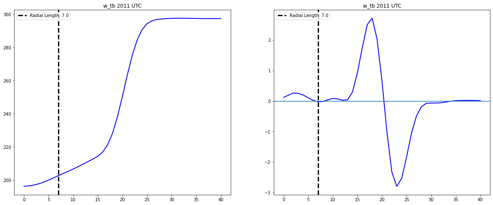

Overshooting Top Area Quantification
Contents
Overshooting Top Area Quantification¶
from skimage.measure import label, regionprops
import numpy as np
import glob
import sys
import xarray as xr
import numpy as np
import cartopy
import scipy
import matplotlib.ticker as mticker
import cartopy.crs as ccrs
import cartopy.feature as cfeature
from cartopy.mpl.gridliner import LONGITUDE_FORMATTER, LATITUDE_FORMATTER
from matplotlib.colors import ListedColormap
from scipy.ndimage import gaussian_filter
import pandas as pd
import glob
from IPython.core.debugger import set_trace
from shapely.geometry import Polygon
import geopandas as gpd
import geopy.distance
import shapely
from cartopy.geodesic import Geodesic
import matplotlib.pyplot as plt
import geopandas as gpd
import pandas as pd
from math import sin, cos, sqrt, atan2, radians
import warnings
warnings.filterwarnings('ignore')
crs = {'init': 'epsg:4326'}
gdf = gpd.GeoDataFrame(crs=crs)
import cProfile
def process_ot_data(file, thresh=.7):
# Set the coordinate reference system
crs = {'init': 'epsg:4326'}
ot_data = gpd.GeoDataFrame()
ds_og = xr.open_dataset(file).squeeze()
time = ds_og.time.values
inx = np.where((ds_og['longitude'] >= llcrnr[1]) & (ds_og['longitude'] <= urcrnr[1]))[0]
iny = np.where((ds_og['latitude'] >= llcrnr[0]) & (ds_og['latitude'] <= urcrnr[0]))[0]
ds = ds_og.sel(npixels=inx, nlines=iny)
lat = ds['latitude'].values
lon = ds['longitude'].values
#time = bedka['time'].isel(time=t).values
lon_2d, lat_2d = np.meshgrid(lon,lat)
lon_2d_corrected = lon_2d + ds['parallax_correction_longitude'].fillna(0).values
lat_2d_corrected = lat_2d + ds['parallax_correction_latitude'].fillna(0).values
#inx = np.where((ds['longitude'] >= llcrnr[1]) & (ds['longitude'] <= urcrnr[1]))[0]
#iny = np.where((ds['latitude'] >= llcrnr[0]) & (ds['latitude'] <= urcrnr[0]))[0]
time_label = pd.to_datetime(ds.time.values).strftime('%Y-%m-%d %H:%M')
ds_whole = ds
ds = ds_og.sel(npixels=inx, nlines=iny)
db = ds.ot_probability
dc = ds.ot_id_number
da = ds.ir_brightness_temperature
dc = ds.ot_id_number
de = ds.ot_anvilmean_brightness_temperature_difference
cloud_hgt = ds.cloud_top_height
trop_hgt = ds.tropopause_height
trop_tmp = ds.tropopause_temperature
trop_pres = ds.tropopause_pressure
smoothed_tb = gaussian_filter(da.values, 1)
plot_num=0
ot_ids = ds_og.where(ds_og.ot_probability > thresh).ot_id_number.values
good_ots = np.unique(ot_ids[np.where(ot_ids > 0)])
for i in good_ots[0:5]:
minpt = np.where(dc == i)
print(minpt)
dbs = db.values[minpt]
ddlat = lat_2d[minpt]
ddlon = lon_2d[minpt]
ddlat_corr = lat_2d_corrected[minpt]
ddlon_corr = lon_2d_corrected[minpt]
das = da.values[minpt]
dde = de.values[minpt]
try:
mintb = np.nanmin(das)
except:
continue
dbs = db.values[minpt]
minloc = np.argmin(das)
prob = dbs[minloc]
ddc = dc.values[minpt]
otid = ddc[minloc]
lat = ddlat[minloc]
lon = ddlon[minloc]
lon_corrected = ddlon_corr[minloc]
lat_corrected = ddlat_corr[minloc]
thgt = trop_hgt.values[minpt][minloc]
ttmp = trop_tmp.values[minpt][minloc]
tprs = trop_pres.values[minpt][minloc]
clhgt = cloud_hgt.values[minpt][minloc]
if prob > thresh:
try:
#print(minpt)
y0, x0 = np.where(ds.ir_brightness_temperature.values == ds.ir_brightness_temperature.values[minpt].min())
x0 = int(x0[0])
y0 = int(y0[0])
lat, lon = ds.sel(nlines=y0, npixels=x0).latitude.values, ds.sel(nlines=y0, npixels=x0).longitude.values
except Exception as e:
print(e)
num = 20
hyp = 20 * np.cos(45, dtype='d')
x1_all = [x0 , x0 + hyp, x0 + num, x0 + hyp, x0 , x0 - hyp, x0 - num, x0 - hyp]
y1_all = [y0 + num, y0 + hyp, y0 , y0 - hyp, y0 - num, y0 - hyp, y0 , y0 + hyp]
pts=np.zeros([8,41])
lats = np.zeros([8,41])
lons = np.zeros([8,41])
x_rads = np.zeros([8,41])
y_rads = np.zeros([8,41])
j=0
for x1, y1 in zip(x1_all,y1_all):
x, y = np.linspace(x0, x1, (num * 2) + 1), np.linspace(y0, y1, (num * 2) + 1)
pts[j,:] = scipy.ndimage.map_coordinates(smoothed_tb, np.vstack((y,x)))
lats[j,:] = scipy.ndimage.map_coordinates(lat_2d, np.vstack((y,x)))
lons[j,:] = scipy.ndimage.map_coordinates(lon_2d, np.vstack((y,x)))
j = j + 1
dels = np.gradient(np.gradient(pts.T,axis=0),axis=0)
tb_rads = pts
# Find inflection points
dels_zero = np.argmax(dels <= 0, axis=0)
# Calculate mean and standard deviation of radials
mean = np.mean(dels_zero)
std = np.std(dels_zero)
# Replace radials with mean radial if greater than 1 standard deviation from mean
dels_zero = np.where(dels_zero > (mean + std), int(np.round(mean)), dels_zero)
ind = np.arange(0,8)
lat_mins = lats[ind, dels_zero]
lon_mins = lons[ind, dels_zero]
# Calcualte the distance for each radial
dists = []
for i in range(len(dels_zero)):
dists.append(geopy.distance.distance((lat, lon), (lat_mins[i], lon_mins[i])).kilometers)
dists = np.array(dists)
# setup a polygon
crs = {'init': 'epsg:4326'}
polygon_geom = Polygon(zip(lon_mins, lat_mins))
gdf = gpd.GeoDataFrame(crs=crs)
gdf = gdf.append({'otid':i,
'geometry':polygon_geom}, ignore_index=True)
gdf['otarea_from_polygon'] = gdf['geometry'].to_crs({'init': 'epsg:32719'})\
.map(lambda p: p.area / 10**6)
otarea_from_polygon = gdf.otarea_from_polygon.values[0]
print(list(tuple(dels[:, 0])))
try:
ot_data = ot_data.append({'time':time,
'lat':lat,
'lon':lon,
'lat_corr':lat_corrected,
'lon_corr':lon_corrected,
'otid':otid,
'mintb':mintb,
'tropopause_height':thgt,
'tropopause_temperature':ttmp,
'tropopause_pressure':tprs,
'cloudtop_height':clhgt,
'prob':prob,
'area_polygon':otarea_from_polygon,
's_radial':dists[0],
's_radial_del2':dels[:, 0],
's_tb':tb_rads[0],
'se_radial':dists[1],
'se_radial_del2':dels[:, 1],
'se_tb':tb_rads[1],
'e_radial':dists[2],
'e_radial_del2':dels[:, 2],
'e_tb':tb_rads[2],
'ne_radial':dists[3],
'ne_radial_del2':dels[:, 3],
'ne_tb':tb_rads[3],
'n_radial':dists[4],
'n_radial_del2':dels[:, 4],
'n_tb':tb_rads[4],
'nw_radial':dists[5],
'nw_radial_del2':dels[:, 5],
'nw_tb':tb_rads[5],
'w_radial':dists[6],
'w_radial_del2':dels[:, 6],
'w_tb':tb_rads[6],
'sw_radial':dists[7],
'sw_radial_del2':dels[:, 7],
'sw_tb':tb_rads[7],
'geometry':polygon_geom}, ignore_index=True)
except Exception as e:
print(e)
try:
ot_data = ot_data[ot_data.area_polygon < 1000]
filename = pd.to_datetime(time).strftime('ot_output/%Y%m%d/%Y%m%d_%H%M.csv')
ot_data.to_csv(filename)
except:
None
ds_og.close()
ds.close()
return ot_data
from dask.distributed import Client
from dask.distributed import progress
client = Client(n_workers=10)
llcrnr=[-33.206342, -65.906586]
urcrnr=[-30.255825, -62.630553]
import glob
datestr='20181110'
ihour='20'
files = sorted(glob.glob(f'/data/relamp/a/mgrover4/ot_data/{datestr}/*{ihour}????.cdf'))
futures = client.map(process_ot_data, files)
progress(futures)
files[7]
'/data/relamp/a/mgrover4/ot_data/20181110/cor1goecnvX1.a1.20181110.200755.cdf'
df_ex.plot()
<AxesSubplot:>
df
| area_polygon | cloudtop_height | e_radial | e_radial_del2 | e_tb | geometry | lat | lat_corr | lon | lon_corr | ... | sw_radial | sw_radial_del2 | sw_tb | time | tropopause_height | tropopause_pressure | tropopause_temperature | w_radial | w_radial_del2 | w_tb | |
|---|---|---|---|---|---|---|---|---|---|---|---|---|---|---|---|---|---|---|---|---|---|
| 0 | [189.27241165070697] | [17.449001] | [4.212812185367112] | [[0.290618896484375, 0.4165229797363281, 0.477... | [[198.69674682617188, 199.47158813476562, 200.... | POLYGON ((-64.16964 -32.17857, -64.13212 -32.1... | [-32.116074] | [-31.994074] | [-64.16964] | [-64.21364] | ... | [11.6087078557941] | [[0.1139068603515625, 0.16944503784179688, 0.2... | [[198.69674682617188, 198.6677703857422, 198.8... | [2018-11-10T20:01:55.000000512] | [16.613] | [97.78] | [202.53] | [10.111900925920189] | [[0.28107452392578125, 0.4053764343261719, 0.5... | [[198.69674682617188, 198.53431701660156, 198.... |
| 1 | [12.550535250836726] | [16.94] | [1.1013114809103366] | [[0.16606903076171875, -49.933895111083984, -4... | [[201.2448272705078, 200.7417449951172, 200.57... | POLYGON ((-62.65179 -32.87500, -62.63950 -32.8... | [-32.848213] | [-32.725212] | [-62.65179] | [-62.70079] | ... | [2.062344902400382] | [[0.03946685791015625, 0.048191070556640625, 0... | [[201.2448272705078, 201.73597717285156, 202.3... | [2018-11-10T20:01:55.000000512] | [16.303001] | [103.07] | [203.36] | [2.4875926588057156] | [[0.09966278076171875, 0.11639022827148438, 0.... | [[201.2448272705078, 202.0481719970703, 203.05... |
2 rows à 38 columns
df_list = []
for file in files[1:26]:
ds = xr.open_dataset(file).squeeze()
df = process_ot_data(file)
ir_vals = ds.ir_brightness_temperature.values
plt.figure(figsize=(12,8))
lon = ds.longitude.values
lat = ds.latitude.values
ax = plt.subplot(111, projection=ccrs.PlateCarree())
ax.set_extent((-64.5, -63.5, -32.7, -31.7))
cf = plt.contourf(lon, lat, ir_vals, np.arange(190, 270, 2), cmap='gist_rainbow_r')
plt.colorbar(cf, label='Brightness Temperature (K)')
df_ex = df[df.mintb == np.nanmin(df.mintb.values)]
df_ex.plot(ax=ax, facecolor="none", edgecolor='black', lw=3,)
ax.plot(0, 0, color='black', lw=3, label=f'OT Area {np.round(df_ex.area_polygon.values[0], 2)} km2 \n Prob: {np.round(df_ex.prob.values[0], 2)}')
plt.legend(fontsize=16)
gl = ax.gridlines(crs=ccrs.PlateCarree(), draw_labels=True,
linewidth=2, color='gray', alpha=0.5, linestyle='--')
gl.xlabels_top = False
gl.ylabels_right = False
plt.title(pd.to_datetime(df.time.values[0]).strftime('%d %b %y %H:%M:%S'), fontsize=24)
plt.savefig(pd.to_datetime(df.time.values[0]).strftime('compare_plots/Nov10/%b_%d_%y_%H%M.%S.png'), dpi=300)
plt.show()
plt.close()
df_list.append(df)
(array([], dtype=int64), array([], dtype=int64))
(array([100, 100, 100, 101, 101, 101, 101, 101, 102, 102, 102, 102, 102,
102, 103, 103, 103, 103, 103, 103, 104, 104, 104, 104, 104, 104,
105, 105, 105, 105, 105, 105, 106, 106, 106, 106, 106, 107, 107]), array([96, 97, 98, 95, 96, 97, 98, 99, 94, 95, 96, 97, 98, 99, 94, 95, 96,
97, 98, 99, 94, 95, 96, 97, 98, 99, 94, 95, 96, 97, 98, 99, 94, 95,
96, 97, 98, 96, 97]))
[0.12656402587890625, 0.21025848388671875, 0.3373603820800781, 0.416046142578125, 0.4304847717285156, 0.3276824951171875, 0.13058090209960938, -0.10853195190429688, -0.29584503173828125, -0.3458709716796875, -0.24800872802734375, -0.01619720458984375, 0.3123283386230469, 0.6859512329101562, 1.0188484191894531, 1.2207565307617188, 1.2178878784179688, 0.9721183776855469, 0.5715103149414062, 0.13589096069335938, -0.21406936645507812, -0.3926353454589844, -0.4545631408691406, -0.4859619140625, -0.5580825805664062, -0.7099609375, -0.8664016723632812, -0.9381561279296875, -0.8941726684570312, -0.73321533203125, -0.5150375366210938, -0.30658721923828125, -0.14253997802734375, -0.04154205322265625, 0.009613037109375, 0.0297088623046875, 0.0279083251953125, 0.01123809814453125, -0.01207733154296875, -0.02079010009765625, -0.017608642578125]
(array([], dtype=int64), array([], dtype=int64))
(array([142, 143, 143, 144, 144, 144, 145, 145, 145, 146, 146, 146]), array([183, 182, 183, 181, 182, 183, 181, 182, 183, 181, 182, 183]))
[0.04073333740234375, 0.03949737548828125, 0.001239776611328125, -0.06269454956054688, -0.10314178466796875, -0.11721420288085938, -0.11004638671875, -0.08713912963867188, -0.0474395751953125, 0.008617401123046875, 0.06800460815429688, 0.11644744873046875, 0.14737701416015625, 0.15802764892578125, 0.15305328369140625, 0.13581085205078125, 0.09705734252929688, 0.03124237060546875, -0.03972625732421875, -0.08991622924804688, -0.10482025146484375, -0.0802154541015625, -0.041576385498046875, -0.016307830810546875, -0.009830474853515625, -0.020107269287109375, -0.0372772216796875, -0.0509033203125, -0.05612945556640625, -0.0504302978515625, -0.034992218017578125, -0.013088226318359375, 0.007457733154296875, 0.019428253173828125, 0.022548675537109375, 0.019561767578125, 0.018367767333984375, 0.019916534423828125, -0.007862091064453125, -0.039642333984375, -0.04347991943359375]
(array([], dtype=int64), array([], dtype=int64))
area_polygon cloudtop_height e_radial \
0 189.272412 [17.449001] [4.212812185367112]
1 12.550535 [16.94] [1.1013114809103366]
e_radial_del2 \
0 [[0.290618896484375, 0.4165229797363281, 0.477...
1 [[0.16606903076171875, -49.933895111083984, -4...
e_tb \
0 [[198.69674682617188, 199.47158813476562, 200....
1 [[201.2448272705078, 200.7417449951172, 200.57...
geometry lat \
0 POLYGON ((-64.16964 -32.17857, -64.13212 -32.1... [-32.116074]
1 POLYGON ((-62.65179 -32.87500, -62.63950 -32.8... [-32.848213]
lat_corr lon lon_corr ... sw_radial \
0 [-31.994074] [-64.16964] [-64.21364] ... [11.6087078557941]
1 [-32.725212] [-62.65179] [-62.70079] ... [2.062344902400382]
sw_radial_del2 \
0 [[0.1139068603515625, 0.16944503784179688, 0.2...
1 [[0.03946685791015625, 0.048191070556640625, 0...
sw_tb \
0 [[198.69674682617188, 198.6677703857422, 198.8...
1 [[201.2448272705078, 201.73597717285156, 202.3...
time tropopause_height tropopause_pressure \
0 2018-11-10 20:01:55.000000512 [16.613] [97.78]
1 2018-11-10 20:01:55.000000512 [16.303001] [103.07]
tropopause_temperature w_radial \
0 [202.53] [10.111900925920189]
1 [203.36] [2.4875926588057156]
w_radial_del2 \
0 [[0.28107452392578125, 0.4053764343261719, 0.5...
1 [[0.09966278076171875, 0.11639022827148438, 0....
w_tb
0 [[198.69674682617188, 198.53431701660156, 198....
1 [[201.2448272705078, 202.0481719970703, 203.05...
[2 rows x 38 columns]
(array([], dtype=int64), array([], dtype=int64))
(array([ 99, 99, 100, 100, 100, 100, 101, 101, 101, 101, 101, 102, 102,
102, 102, 102, 103, 103, 103, 103, 103, 104, 104, 104, 104, 104,
105, 105, 105, 105, 105, 106, 106, 106, 106, 106, 107, 107, 107]), array([97, 98, 96, 97, 98, 99, 95, 96, 97, 98, 99, 95, 96, 97, 98, 99, 95,
96, 97, 98, 99, 95, 96, 97, 98, 99, 95, 96, 97, 98, 99, 95, 96, 97,
98, 99, 96, 97, 98]))
[0.06288909912109375, 0.094879150390625, 0.14159774780273438, 0.1853485107421875, 0.2329864501953125, 0.25424957275390625, 0.24602890014648438, 0.21316909790039062, 0.16518783569335938, 0.11025619506835938, 0.046466827392578125, -0.02402496337890625, -0.07268905639648438, -0.06418228149414062, 0.037685394287109375, 0.2624053955078125, 0.6118431091308594, 1.0559425354003906, 1.4646034240722656, 1.6844215393066406, 1.5687828063964844, 1.0328445434570312, 0.23203277587890625, -0.6170082092285156, -1.2929763793945312, -1.621978759765625, -1.6246109008789062, -1.3846817016601562, -1.044219970703125, -0.735626220703125, -0.494537353515625, -0.32617950439453125, -0.2108612060546875, -0.12595367431640625, -0.06191253662109375, -0.01369476318359375, 0.01865386962890625, 0.03394317626953125, 0.0314178466796875, 0.0161895751953125, 0.0067901611328125]
(array([142, 143, 143, 144, 144, 145, 145]), array([183, 182, 183, 182, 183, 182, 183]))
[0.11942291259765625, 0.16849899291992188, 0.1837005615234375, 0.10235595703125, 0.0150909423828125, -0.05118560791015625, -0.0895538330078125, -0.100799560546875, -0.09651947021484375, -0.08716201782226562, -0.06781387329101562, -0.031169891357421875, 0.02423095703125, 0.09526443481445312, 0.166412353515625, 0.21995162963867188, 0.24168014526367188, 0.22012710571289062, 0.15125656127929688, 0.0405120849609375, -0.07615280151367188, -0.15949249267578125, -0.18768692016601562, -0.15228271484375, -0.08076095581054688, -0.00647735595703125, 0.049533843994140625, 0.07269287109375, 0.06192779541015625, 0.02228546142578125, -0.030139923095703125, -0.07707595825195312, -0.10264205932617188, -0.09698867797851562, -0.07193756103515625, -0.042999267578125, -0.018798828125, -0.004150390625, 0.00445556640625, 0.00702667236328125, 0.0058746337890625]
(array([146, 146, 147, 147]), array([182, 183, 182, 183]))
[-0.02791595458984375, -0.052791595458984375, -0.0895538330078125, -0.100799560546875, -0.09651947021484375, -0.08716201782226562, -0.06781387329101562, -0.031169891357421875, 0.02423095703125, 0.09526443481445312, 0.166412353515625, 0.21995162963867188, 0.24168014526367188, 0.22012710571289062, 0.15125656127929688, 0.0405120849609375, -0.07615280151367188, -0.15949249267578125, -0.18768692016601562, -0.15228271484375, -0.08076095581054688, -0.00647735595703125, 0.049533843994140625, 0.07269287109375, 0.06192779541015625, 0.02228546142578125, -0.030139923095703125, -0.07707595825195312, -0.10264205932617188, -0.09698867797851562, -0.07193756103515625, -0.042999267578125, -0.018798828125, -0.004150390625, 0.00445556640625, 0.0103759765625, 0.008087158203125, -52.23549270629883, -52.24013900756836, 52.23005294799805, 104.4657974243164]
(array([], dtype=int64), array([], dtype=int64))
area_polygon cloudtop_height e_radial \
0 192.603001 [17.383001] [5.056214731984114]
e_radial_del2 \
0 [[0.3144989013671875, 0.47414398193359375, 0.6...
e_tb \
0 [[198.81776428222656, 199.01193237304688, 199....
geometry lat \
0 POLYGON ((-64.16964 -32.19643, -64.12743 -32.1... [-32.098213]
lat_corr lon lon_corr ... sw_radial \
0 [-31.976213] [-64.16964] [-64.21364] ... [8.19620124311885]
sw_radial_del2 \
0 [[0.0901947021484375, 0.13414382934570312, 0.1...
sw_tb \
0 [[198.81776428222656, 198.9854736328125, 199.3...
time tropopause_height tropopause_pressure \
0 2018-11-10 20:02:55.000000512 [16.621] [97.67]
tropopause_temperature w_radial \
0 [202.48] [11.79903409512454]
w_radial_del2 \
0 [[0.270599365234375, 0.39258575439453125, 0.48...
w_tb
0 [[198.81776428222656, 199.21324157714844, 200....
[1 rows x 38 columns]
(array([ 99, 99, 100, 100, 100, 100, 101, 101, 101, 101, 101, 102, 102,
102, 102, 102, 102, 103, 103, 103, 103, 103, 103, 104, 104, 104,
104, 104, 105, 105, 105, 105, 105, 106, 106, 106, 107]), array([ 98, 99, 96, 97, 98, 99, 95, 96, 97, 98, 99, 95, 96,
97, 98, 99, 100, 95, 96, 97, 98, 99, 100, 95, 96, 97,
98, 99, 95, 96, 97, 98, 99, 96, 97, 98, 97]))
[0.12308502197265625, 0.17851638793945312, 0.22521209716796875, 0.20931243896484375, 0.18198776245117188, 0.12690353393554688, 0.049770355224609375, -0.034698486328125, -0.09782791137695312, -0.1138916015625, -0.08288955688476562, -0.016384124755859375, 0.053558349609375, 0.09736251831054688, 0.11587905883789062, 0.13052749633789062, 0.21452713012695312, 0.4394035339355469, 0.8181724548339844, 1.3132514953613281, 1.7432174682617188, 1.9023933410644531, 1.6318855285644531, 0.8623695373535156, -0.16397476196289062, -1.1387138366699219, -1.7999038696289062, -1.9700546264648438, -1.7630996704101562, -1.3593978881835938, -0.9134979248046875, -0.5492706298828125, -0.29364013671875, -0.14260101318359375, -0.06520843505859375, -0.02758026123046875, -0.011199951171875, -0.0037841796875, -0.0027008056640625, -0.0035400390625, -0.0033721923828125]
(array([], dtype=int64), array([], dtype=int64))
(array([143, 144, 144, 145, 145, 146, 146, 147]), array([183, 182, 183, 182, 183, 182, 183, 183]))
[0.0294036865234375, 0.01895904541015625, -0.029415130615234375, -0.08757400512695312, -0.11373138427734375, -0.1133575439453125, -0.09340667724609375, -0.0584869384765625, -0.00234222412109375, 0.07830810546875, 0.16402053833007812, 0.22948455810546875, 0.24857711791992188, 0.20377349853515625, 0.11273574829101562, 0.00264739990234375, -0.09627914428710938, -0.15834426879882812, -0.17900466918945312, -0.160614013671875, -0.11203384399414062, -0.044857025146484375, 0.024993896484375, 0.08069229125976562, 0.10615158081054688, 0.0905914306640625, 0.043609619140625, -0.017925262451171875, -0.06834793090820312, -0.08642959594726562, -0.0774993896484375, -0.054302215576171875, -0.032657623291015625, -0.025119781494140625, -0.028171539306640625, -0.0324554443359375, -0.0214080810546875, -52.24546432495117, -52.23426055908203, 52.25803756713867, 104.5026626586914]
(array([], dtype=int64), array([], dtype=int64))
(array([148, 149, 150, 150, 151, 151, 152, 152, 153, 154]), array([183, 183, 182, 183, 182, 183, 182, 183, 183, 183]))
[0.10573577880859375, 0.13557052612304688, 0.11273574829101562, 0.00264739990234375, -0.09627914428710938, -0.15834426879882812, -0.17900466918945312, -0.160614013671875, -0.11203384399414062, -0.044857025146484375, 0.024993896484375, 0.08069229125976562, 0.10615158081054688, 0.0905914306640625, 0.043609619140625, -0.017925262451171875, -0.06834793090820312, -0.08642959594726562, -0.0774993896484375, -0.054302215576171875, -0.032657623291015625, -0.025119781494140625, -0.028171539306640625, -0.0324554443359375, -0.0214080810546875, -52.24546432495117, -52.23426055908203, 52.25803756713867, 52.2513313293457, 0.0, 0.0, 0.0, 0.0, 0.0, 0.0, 0.0, 0.0, 0.0, 0.0, 0.0, 0.0]
area_polygon cloudtop_height e_radial \
0 164.660017 [17.454] [3.3710498925527523]
e_radial_del2 \
0 [[0.339874267578125, 0.48332977294921875, 0.52...
e_tb \
0 [[199.21156311035156, 200.1964874267578, 201.8...
geometry lat \
0 POLYGON ((-64.15179 -32.16072, -64.12364 -32.1... [-32.098213]
lat_corr lon lon_corr ... sw_radial \
0 [-31.976213] [-64.15179] [-64.195786] ... [7.512946010307316]
sw_radial_del2 \
0 [[0.10009765625, 0.1444091796875, 0.1774635314...
sw_tb \
0 [[199.21156311035156, 199.0770263671875, 199.1...
time tropopause_height tropopause_pressure \
0 2018-11-10 20:03:55.000000512 [16.621] [97.67]
tropopause_temperature w_radial \
0 [202.48] [13.484198645693482]
w_radial_del2 \
0 [[0.30924224853515625, 0.4369087219238281, 0.5...
w_tb
0 [[199.21156311035156, 198.9337921142578, 199.2...
[1 rows x 38 columns]
(array([100, 100, 100, 100, 100, 101, 101, 101, 101, 101, 102, 102, 102,
102, 102, 102, 103, 103, 103, 103, 103, 104, 104, 104, 104, 104,
105, 105, 105, 105, 106, 106, 106]), array([ 96, 97, 98, 99, 100, 96, 97, 98, 99, 100, 95, 96, 97,
98, 99, 100, 96, 97, 98, 99, 100, 96, 97, 98, 99, 100,
96, 97, 98, 99, 96, 97, 98]))
[0.195098876953125, 0.292388916015625, 0.37154388427734375, 0.31085968017578125, 0.20941925048828125, 0.07967758178710938, -0.06451416015625, -0.20551681518554688, -0.3120079040527344, -0.3532295227050781, -0.31429290771484375, -0.19583511352539062, -0.044681549072265625, 0.08864974975585938, 0.18495941162109375, 0.23891067504882812, 0.26934814453125, 0.3047904968261719, 0.38824462890625, 0.5643157958984375, 0.8695297241210938, 1.2995643615722656, 1.6948661804199219, 1.8624725341796875, 1.6309471130371094, 0.9045982360839844, -0.1308135986328125, -1.2031669616699219, -1.9764328002929688, -2.1878814697265625, -1.931732177734375, -1.4015121459960938, -0.8310928344726562, -0.41851043701171875, -0.17816925048828125, -0.0730133056640625, -0.04367828369140625, -0.03464508056640625, -0.02820587158203125, -0.0167388916015625, -0.00921630859375]
(array([], dtype=int64), array([], dtype=int64))
(array([144, 145, 146, 147, 148, 149, 150]), array([183, 183, 183, 183, 183, 183, 183]))
[0.05733489990234375, 0.067962646484375, 0.053043365478515625, 0.017932891845703125, 0.0154876708984375, 0.039218902587890625, 0.052490234375, 0.0241546630859375, -0.024829864501953125, -0.0617523193359375, -0.05890655517578125, -0.000885009765625, 0.08344268798828125, 0.15639114379882812, 0.18922805786132812, 0.16389083862304688, 0.09610366821289062, 0.009403228759765625, -0.07512283325195312, -0.13972091674804688, -0.17761611938476562, -0.185211181640625, -0.16070556640625, -0.10559463500976562, -0.0326690673828125, 0.042034149169921875, 0.10071945190429688, 0.12818145751953125, 0.12137222290039062, 0.08364105224609375, 0.03179168701171875, -0.015186309814453125, -0.042972564697265625, -0.044158935546875, -0.03435516357421875, -0.031337738037109375, -0.038494110107421875, -0.051639556884765625, -0.05075836181640625, -0.026958465576171875, -0.01110076904296875]
(array([], dtype=int64), array([], dtype=int64))
(array([151, 152, 153]), array([183, 183, 183]))
[0.085479736328125, 0.11103057861328125, 0.09610366821289062, 0.009403228759765625, -0.07512283325195312, -0.13972091674804688, -0.17761611938476562, -0.185211181640625, -0.16070556640625, -0.10559463500976562, -0.0326690673828125, 0.042034149169921875, 0.10071945190429688, 0.12818145751953125, 0.12137222290039062, 0.08364105224609375, 0.03179168701171875, -0.015186309814453125, -0.042972564697265625, -0.044158935546875, -0.03435516357421875, -0.031337738037109375, -0.038494110107421875, -0.051639556884765625, -0.05075836181640625, -52.3231315612793, -52.30000305175781, 52.29961395263672, 52.29789352416992, 0.0, 0.0, 0.0, 0.0, 0.0, 0.0, 0.0, 0.0, 0.0, 0.0, 0.0, 0.0]
area_polygon cloudtop_height e_radial \
0 119.107134 [17.393002] [2.5277473075272416]
e_radial_del2 \
0 [[0.31505584716796875, 0.4026832580566406, 0.3...
e_tb \
0 [[199.74000549316406, 201.3520965576172, 203.5...
geometry lat \
0 POLYGON ((-64.13393 -32.15179, -64.11048 -32.1... [-32.098213]
lat_corr lon lon_corr ... sw_radial \
0 [-31.976213] [-64.13393] [-64.177925] ... [6.829820903728827]
sw_radial_del2 \
0 [[0.1363372802734375, 0.19322586059570312, 0.2...
sw_tb \
0 [[199.74000549316406, 199.32611083984375, 199....
time tropopause_height tropopause_pressure \
0 2018-11-10 20:04:55.000000512 [16.614] [97.78]
tropopause_temperature w_radial \
0 [202.45999] [8.428704762946015]
w_radial_del2 \
0 [[0.36867523193359375, 0.51690673828125, 0.586...
w_tb
0 [[199.74000549316406, 198.93923950195312, 198....
[1 rows x 38 columns]
(array([ 99, 100, 100, 100, 100, 100, 101, 101, 101, 101, 101, 101, 102,
102, 102, 102, 102, 103, 103, 103, 103, 103, 104, 104, 104, 104,
104, 105, 105, 105, 105, 105, 106, 106]), array([ 97, 96, 97, 98, 99, 100, 95, 96, 97, 98, 99, 100, 96,
97, 98, 99, 100, 96, 97, 98, 99, 100, 96, 97, 98, 99,
100, 96, 97, 98, 99, 100, 98, 99]))
[0.133056640625, 0.17291641235351562, 0.17094802856445312, 0.11048126220703125, 0.12012481689453125, 0.21378326416015625, 0.31855010986328125, 0.3505973815917969, 0.2692413330078125, 0.06762313842773438, -0.16886138916015625, -0.3426361083984375, -0.399749755859375, -0.3185844421386719, -0.16322708129882812, -0.00748443603515625, 0.12172317504882812, 0.21417236328125, 0.2794647216796875, 0.330963134765625, 0.3773002624511719, 0.4345283508300781, 0.5530929565429688, 0.7720222473144531, 1.0502281188964844, 1.3098983764648438, 1.4064521789550781, 1.211151123046875, 0.725433349609375, 0.0106658935546875, -0.7621994018554688, -1.4045257568359375, -1.7666473388671875, -1.7542190551757812, -1.4550399780273438, -1.0076980590820312, -0.5718994140625, -0.27791595458984375, -0.11705780029296875, -0.04087066650390625, -0.019073486328125]
(array([144, 145, 146, 147, 148, 149, 150]), array([183, 183, 183, 183, 183, 183, 183]))
[0.12003326416015625, 0.16080474853515625, 0.14630126953125, 0.021892547607421875, -0.08493423461914062, -0.12076187133789062, -0.09024810791015625, -0.01711273193359375, 0.05667877197265625, 0.09480667114257812, 0.10171127319335938, 0.08882904052734375, 0.0549774169921875, -0.001605987548828125, -0.07248687744140625, -0.14288711547851562, -0.18279647827148438, -0.16759490966796875, -0.10947799682617188, -0.030757904052734375, 0.042621612548828125, 0.08837890625, 0.10250473022460938, 0.08795928955078125, 0.0572357177734375, 0.024158477783203125, -0.001537322998046875, -0.013996124267578125, -0.018901824951171875, -0.023097991943359375, -0.026454925537109375, -0.02846527099609375, -0.034114837646484375, -52.393592834472656, -52.38165283203125, 52.347347259521484, 52.354862213134766, 0.0, 0.0, 0.0, 0.0]
(array([], dtype=int64), array([], dtype=int64))
(array([], dtype=int64), array([], dtype=int64))
(array([], dtype=int64), array([], dtype=int64))
area_polygon cloudtop_height e_radial \
0 102.383365 [17.480001] [4.214451861565662]
e_radial_del2 \
0 [[0.3496551513671875, 0.5075035095214844, 0.57...
e_tb \
0 [[198.8264923095703, 199.6494140625, 201.17164...
geometry lat \
0 POLYGON ((-64.13393 -32.16964, -64.09171 -32.1... [-32.080357]
lat_corr lon lon_corr ... sw_radial \
0 [-31.957357] [-64.13393] [-64.177925] ... [4.098615676689402]
sw_radial_del2 \
0 [[0.143829345703125, 0.20067214965820312, 0.22...
sw_tb \
0 [[198.8264923095703, 198.63800048828125, 198.7...
time tropopause_height tropopause_pressure \
0 2018-11-10 20:05:55.000000512 [16.62] [97.68]
tropopause_temperature w_radial \
0 [202.42] [8.430344134604134]
w_radial_del2 \
0 [[0.28229522705078125, 0.3856697082519531, 0.4...
w_tb
0 [[198.8264923095703, 198.69064331054688, 199.1...
[1 rows x 38 columns]
(array([ 99, 100, 100, 100, 100, 100, 101, 101, 101, 101, 101, 102, 102,
102, 102, 102, 103, 103, 103, 103, 103, 103, 104, 104, 104, 104,
104, 104, 105, 105, 105, 105, 106, 106, 106, 106]), array([ 99, 97, 98, 99, 100, 101, 97, 98, 99, 100, 101, 97, 98,
99, 100, 101, 96, 97, 98, 99, 100, 101, 96, 97, 98, 99,
100, 101, 97, 98, 99, 100, 97, 98, 99, 100]))
[0.10990142822265625, 0.15162277221679688, 0.18276596069335938, 0.18071365356445312, 0.1980743408203125, 0.20357894897460938, 0.15364456176757812, 0.02036285400390625, -0.14923477172851562, -0.2913551330566406, -0.3500175476074219, -0.2927055358886719, -0.17296600341796875, -0.055355072021484375, 0.037631988525390625, 0.10175704956054688, 0.16379547119140625, 0.24543380737304688, 0.31694793701171875, 0.3441734313964844, 0.32654571533203125, 0.2953453063964844, 0.3756561279296875, 0.6715507507324219, 1.1091957092285156, 1.5433540344238281, 1.7211990356445312, 1.4326324462890625, 0.7459793090820312, -0.1737213134765625, -1.0530815124511719, -1.6374588012695312, -1.8553924560546875, -1.7138519287109375, -1.3503875732421875, -0.9229888916015625, -0.5407180786132812, -0.27886962890625, -0.12668609619140625, -0.0474090576171875, -0.022186279296875]
(array([148, 149]), array([183, 183]))
[0.12325286865234375, 0.17635726928710938, 0.19333267211914062, 0.09931564331054688, -0.010772705078125, -0.09995651245117188, -0.14802932739257812, -0.14427947998046875, -0.09918212890625, -0.028354644775390625, 0.05316925048828125, 0.12817001342773438, 0.17005538940429688, 0.15668869018554688, 0.09321212768554688, -0.003368377685546875, -0.09588241577148438, -0.1491241455078125, -0.15596389770507812, -0.12041091918945312, -0.06290817260742188, -0.005794525146484375, 0.03737640380859375, 0.058002471923828125, 0.05854034423828125, 0.044895172119140625, 0.025722503662109375, 0.00891876220703125, -0.003326416015625, -0.010196685791015625, -0.010730743408203125, -0.008121490478515625, -0.022319793701171875, -52.431087493896484, -52.42655563354492, 52.367034912109375, 52.381324768066406, 0.0, 0.0, 0.0, 0.0]
(array([], dtype=int64), array([], dtype=int64))
(array([], dtype=int64), array([], dtype=int64))
(array([], dtype=int64), array([], dtype=int64))
area_polygon cloudtop_height e_radial \
0 97.749056 [17.436] [2.528467463451608]
e_radial_del2 \
0 [[0.27032470703125, 0.350372314453125, 0.29299...
e_tb \
0 [[199.52137756347656, 201.0303192138672, 203.0...
geometry lat \
0 POLYGON ((-64.11607 -32.16964, -64.09731 -32.1... [-32.098213]
lat_corr lon lon_corr ... sw_radial \
0 [-31.976213] [-64.11607] [-64.16007] ... [6.147003487283812]
sw_radial_del2 \
0 [[0.10565185546875, 0.14308929443359375, 0.149...
sw_tb \
0 [[199.52137756347656, 199.19888305664062, 199....
time tropopause_height tropopause_pressure \
0 2018-11-10 20:06:55.000000512 [16.619001] [97.689995]
tropopause_temperature w_radial \
0 [202.43] [7.5854022343092105]
w_radial_del2 \
0 [[0.31667327880859375, 0.44905853271484375, 0....
w_tb
0 [[199.52137756347656, 198.6973876953125, 198.5...
[1 rows x 38 columns]
(array([ 99, 99, 99, 100, 100, 100, 100, 101, 101, 101, 101, 102, 102,
102, 102, 102, 103, 103, 103, 103, 103, 103, 103, 104, 104, 104,
104, 104, 104, 104, 105, 105, 105, 105, 105, 106, 106, 106, 106]), array([ 99, 100, 101, 98, 99, 100, 101, 98, 99, 100, 101, 98, 99,
100, 101, 102, 96, 97, 98, 99, 100, 101, 102, 96, 97, 98,
99, 100, 101, 102, 97, 98, 99, 100, 101, 97, 98, 99, 100]))
[0.14574432373046875, 0.22163009643554688, 0.3123970031738281, 0.3466339111328125, 0.3545799255371094, 0.29303741455078125, 0.15742874145507812, -0.0376129150390625, -0.23914718627929688, -0.3901786804199219, -0.4558906555175781, -0.41561126708984375, -0.2830047607421875, -0.08865737915039062, 0.10348892211914062, 0.2390899658203125, 0.3354988098144531, 0.424774169921875, 0.5261001586914062, 0.6346092224121094, 0.6621131896972656, 0.5411872863769531, 0.37079620361328125, 0.2830619812011719, 0.37641143798828125, 0.6833686828613281, 1.0064010620117188, 1.1128196716308594, 0.8594322204589844, 0.20030975341796875, -0.6108779907226562, -1.2763900756835938, -1.6217575073242188, -1.5629806518554688, -1.2547988891601562, -0.888458251953125, -0.562469482421875, -0.3340606689453125, -0.18796539306640625, -0.08701324462890625, -0.044097900390625]
(array([105, 106, 107, 107]), array([96, 96, 97, 98]))
[0.25726318359375, 0.3552284240722656, 0.38629913330078125, 0.2613983154296875, 0.22322845458984375, 0.35976409912109375, 0.6971054077148438, 1.2071952819824219, 1.7073020935058594, 1.9780807495117188, 1.8083953857421875, 1.0793914794921875, 0.033077239990234375, -1.0032424926757812, -1.7219772338867188, -1.9109268188476562, -1.7195663452148438, -1.3682098388671875, -0.9988784790039062, -0.7087631225585938, -0.494232177734375, -0.33052825927734375, -0.2091217041015625, -0.124969482421875, -0.07054901123046875, -0.03814697265625, -0.02191162109375, -0.01663970947265625, -0.0179290771484375, -0.0213470458984375, -0.02161407470703125, -0.01432037353515625, 0.000732421875, 0.02085113525390625, 0.03595733642578125, 0.0370025634765625, 0.0266265869140625, 0.010894775390625, -0.00225830078125, -0.00531005859375, -0.0038299560546875]
(array([148]), array([183]))
[0.0821533203125, 0.11769485473632812, 0.13340377807617188, 0.0817718505859375, 0.010913848876953125, -0.06888580322265625, -0.13446044921875, -0.16128158569335938, -0.13219451904296875, -0.042018890380859375, 0.07389450073242188, 0.17253494262695312, 0.22074127197265625, 0.19774246215820312, 0.12247085571289062, 0.0240631103515625, -0.0672760009765625, -0.1260986328125, -0.1470184326171875, -0.132354736328125, -0.09519195556640625, -0.050228118896484375, -0.007762908935546875, 0.02462005615234375, 0.04576873779296875, 0.05590057373046875, 0.054248809814453125, 0.0407562255859375, 0.019168853759765625, -0.004833221435546875, -0.021636962890625, -0.026348114013671875, -0.03687286376953125, -52.47151184082031, -52.46047592163086, 52.405303955078125, 52.41802978515625, 0.0, 0.0, 0.0, 0.0]
(array([], dtype=int64), array([], dtype=int64))
(array([], dtype=int64), array([], dtype=int64))
area_polygon cloudtop_height e_radial \
0 76.837805 [17.553001] [4.213632315878133]
1 110.884704 [17.088001] [9.266957650739116]
e_radial_del2 \
0 [[0.31882476806640625, 0.45781707763671875, 0....
1 [[0.21793365478515625, 0.33174896240234375, 0....
e_tb \
0 [[198.30801391601562, 198.9923858642578, 200.3...
1 [[202.23031616210938, 200.74620056152344, 199....
geometry lat \
0 POLYGON ((-64.11607 -32.16072, -64.08793 -32.1... [-32.098213]
1 POLYGON ((-64.18750 -32.21429, -64.14059 -32.1... [-32.13393]
lat_corr lon lon_corr ... sw_radial \
0 [-31.975214] [-64.11607] [-64.16107] ... [2.048975026291856]
1 [-32.01393] [-64.1875] [-64.2305] ... [6.146161992705604]
sw_radial_del2 \
0 [[0.06694793701171875, 0.08073043823242188, 0....
1 [[0.1094207763671875, 0.14652633666992188, 0.1...
sw_tb \
0 [[198.30801391601562, 198.2484588623047, 198.3...
1 [[202.23031616210938, 203.38189697265625, 204....
time tropopause_height tropopause_pressure \
0 2018-11-10 20:07:55.000000512 [16.619001] [97.689995]
1 2018-11-10 20:07:55.000000512 [16.604] [97.9]
tropopause_temperature w_radial \
0 [202.43] [6.74209969265378]
1 [202.51999] [7.58244900587702]
w_radial_del2 \
0 [[0.2472686767578125, 0.3285636901855469, 0.33...
1 [[0.082550048828125, 0.07903289794921875, 0.03...
w_tb
0 [[198.30801391601562, 198.26148986816406, 198....
1 [[202.23031616210938, 204.07794189453125, 206....
[2 rows x 38 columns]
(array([ 99, 99, 100, 100, 100, 100, 101, 101, 101, 101, 102, 102, 102,
102, 102, 103, 103, 103, 103, 103, 103, 104, 104, 104, 104, 104,
104, 105, 105, 105, 105, 105, 106, 106, 106, 106]), array([100, 101, 99, 100, 101, 102, 99, 100, 101, 102, 98, 99, 100,
101, 102, 97, 98, 99, 100, 101, 102, 97, 98, 99, 100, 101,
102, 98, 99, 100, 101, 102, 98, 99, 100, 101]))
[0.16942596435546875, 0.2620735168457031, 0.3797264099121094, 0.43326568603515625, 0.4531745910644531, 0.3882637023925781, 0.22670364379882812, -0.02011871337890625, -0.2873382568359375, -0.5016059875488281, -0.6090316772460938, -0.57464599609375, -0.4197654724121094, -0.18807220458984375, 0.04360198974609375, 0.20503997802734375, 0.2855796813964844, 0.3016624450683594, 0.31859588623046875, 0.39563751220703125, 0.5190010070800781, 0.6478233337402344, 0.7060050964355469, 0.6369705200195312, 0.4974517822265625, 0.3764152526855469, 0.3784980773925781, 0.5634651184082031, 0.7959175109863281, 0.8979377746582031, 0.7166290283203125, 0.17220306396484375, -0.547821044921875, -1.2002029418945312, -1.5859756469726562, -1.5790023803710938, -1.3000946044921875, -0.9190216064453125, -0.5545654296875, -0.2657470703125, -0.1373291015625]
(array([], dtype=int64), array([], dtype=int64))
(array([], dtype=int64), array([], dtype=int64))
(array([], dtype=int64), array([], dtype=int64))
(array([], dtype=int64), array([], dtype=int64))
area_polygon cloudtop_height e_radial \
0 108.972626 [17.515001] [2.5277473075272416]
e_radial_del2 \
0 [[0.2411346435546875, 0.30144500732421875, 0.2...
e_tb \
0 [[198.8497314453125, 200.19468688964844, 202.0...
geometry lat \
0 POLYGON ((-64.09821 -32.16072, -64.07008 -32.1... [-32.098213]
lat_corr lon lon_corr ... sw_radial \
0 [-31.975214] [-64.09821] [-64.14321] ... [7.512946010307316]
sw_radial_del2 \
0 [[0.105377197265625, 0.142608642578125, 0.1491...
sw_tb \
0 [[198.8497314453125, 198.35926818847656, 198.0...
time tropopause_height tropopause_pressure \
0 2018-11-10 20:08:55.000000512 [16.623001] [97.63]
tropopause_temperature w_radial \
0 [202.40999] [9.271287121261635]
w_radial_del2 \
0 [[0.3048553466796875, 0.4269447326660156, 0.47...
w_tb
0 [[198.8497314453125, 198.1621856689453, 198.08...
[1 rows x 38 columns]
(array([101, 101, 102, 102, 102, 102, 102, 103, 103, 103, 103, 103, 103,
103, 104, 104, 104, 104, 104, 104, 104, 104, 105, 105, 105, 105,
105, 105, 105, 106, 106, 106, 106, 106, 106, 106, 107, 107, 107,
107]), array([ 99, 100, 98, 99, 100, 101, 102, 96, 97, 98, 99, 100, 101,
102, 96, 97, 98, 99, 100, 101, 102, 103, 96, 97, 98, 99,
100, 101, 102, 96, 97, 98, 99, 100, 101, 102, 97, 98, 99,
100]))
[0.2967987060546875, 0.4472198486328125, 0.5501899719238281, 0.3894805908203125, 0.14293670654296875, -0.11710739135742188, -0.3037376403808594, -0.34767913818359375, -0.26467132568359375, -0.0821685791015625, 0.21044158935546875, 0.6166954040527344, 1.0737762451171875, 1.4862098693847656, 1.6943244934082031, 1.5653495788574219, 1.1382827758789062, 0.5120391845703125, -0.14661407470703125, -0.6822052001953125, -1.0524024963378906, -1.2525863647460938, -1.3156890869140625, -1.2751312255859375, -1.128631591796875, -0.8805313110351562, -0.5974349975585938, -0.35230255126953125, -0.18131256103515625, -0.09947967529296875, -0.074005126953125, -0.06616973876953125, -0.0614013671875, -0.05291748046875, -0.04091644287109375, -0.02739715576171875, -0.014495849609375, -0.00426483154296875, 0.0017547607421875, 0.00257110595703125, 0.0016632080078125]
(array([], dtype=int64), array([], dtype=int64))
(array([], dtype=int64), array([], dtype=int64))
(array([], dtype=int64), array([], dtype=int64))
(array([], dtype=int64), array([], dtype=int64))
area_polygon cloudtop_height e_radial \
0 160.428735 [17.594002] [5.896500557904253]
e_radial_del2 \
0 [[0.11626434326171875, 0.18404388427734375, 0....
e_tb \
0 [[197.4491729736328, 197.47320556640625, 197.7...
geometry lat \
0 POLYGON ((-64.13393 -32.17857, -64.09641 -32.1... [-32.13393]
lat_corr lon lon_corr ... sw_radial \
0 [-32.00993] [-64.13393] [-64.178925] ... [8.194097781357573]
sw_radial_del2 \
0 [[0.09295654296875, 0.14492416381835938, 0.202...
sw_tb \
0 [[197.4491729736328, 197.65480041503906, 198.0...
time tropopause_height tropopause_pressure \
0 2018-11-10 20:09:55.000000512 [16.613] [97.759995]
tropopause_temperature w_radial \
0 [202.48999] [10.109931825491815]
w_radial_del2 \
0 [[0.10823822021484375, 0.16721725463867188, 0....
w_tb
0 [[197.4491729736328, 197.6316375732422, 198.03...
[1 rows x 38 columns]
(array([101, 101, 102, 102, 102, 102, 102, 103, 103, 103, 103, 103, 103,
103, 104, 104, 104, 104, 104, 104, 104, 104, 105, 105, 105, 105,
105, 105, 105, 105, 106, 106, 106, 106, 106, 106, 106, 107, 107,
107, 107]), array([ 99, 100, 98, 99, 100, 101, 102, 96, 97, 98, 99, 100, 101,
102, 96, 97, 98, 99, 100, 101, 102, 103, 96, 97, 98, 99,
100, 101, 102, 103, 96, 97, 98, 99, 100, 101, 102, 97, 98,
99, 100]))
[0.24774932861328125, 0.36989593505859375, 0.4546051025390625, 0.33487701416015625, 0.14990234375, -0.058277130126953125, -0.22616958618164062, -0.2980842590332031, -0.2710304260253906, -0.15498733520507812, 0.040897369384765625, 0.32234954833984375, 0.7537307739257812, 1.3645439147949219, 1.986297607421875, 2.3822860717773438, 2.240875244140625, 1.3637466430664062, 0.08073043823242188, -1.1657028198242188, -2.0106544494628906, -2.2133636474609375, -1.9520187377929688, -1.4893417358398438, -1.0072555541992188, -0.6364517211914062, -0.3835296630859375, -0.22330474853515625, -0.12732696533203125, -0.069854736328125, -0.03940582275390625, -0.028106689453125, -0.0283355712890625, -0.03266143798828125, -0.03417205810546875, -0.02802276611328125, -0.01709747314453125, -0.0059356689453125, 0.00208282470703125, 0.00374603271484375, 0.0027008056640625]
(array([], dtype=int64), array([], dtype=int64))
(array([], dtype=int64), array([], dtype=int64))
(array([], dtype=int64), array([], dtype=int64))
(array([], dtype=int64), array([], dtype=int64))
area_polygon cloudtop_height e_radial \
0 180.029248 [17.651001] [7.58244900587702]
e_radial_del2 \
0 [[0.1204376220703125, 0.17798614501953125, 0.2...
e_tb \
0 [[197.20652770996094, 197.0243377685547, 197.0...
geometry lat \
0 POLYGON ((-64.13393 -32.17857, -64.09641 -32.1... [-32.13393]
lat_corr lon lon_corr ... sw_radial \
0 [-32.00993] [-64.13393] [-64.178925] ... [8.194097781357573]
sw_radial_del2 \
0 [[0.08271026611328125, 0.1244354248046875, 0.1...
sw_tb \
0 [[197.20652770996094, 197.58909606933594, 198....
time tropopause_height tropopause_pressure \
0 2018-11-10 20:10:55.000000512 [16.611] [97.78]
tropopause_temperature w_radial \
0 [202.48] [10.109931825491815]
w_radial_del2 \
0 [[0.1290435791015625, 0.19032669067382812, 0.2...
w_tb
0 [[197.20652770996094, 197.64524841308594, 198....
[1 rows x 38 columns]

(array([100, 100, 100, 101, 101, 101, 102, 102, 103, 103, 103, 104, 104,
105, 105, 106, 107, 107]), array([ 99, 100, 101, 98, 99, 100, 97, 98, 96, 97, 98, 96, 97,
96, 97, 97, 97, 98]))
[0.15045166015625, 0.2281494140625, 0.3030548095703125, 0.2887458801269531, 0.2684898376464844, 0.2542152404785156, 0.23659896850585938, 0.20232391357421875, 0.14331817626953125, 0.058238983154296875, -0.03265380859375, -0.1019287109375, -0.11497116088867188, -0.038227081298828125, 0.15034103393554688, 0.47132110595703125, 0.9510650634765625, 1.572967529296875, 2.1428489685058594, 2.415477752685547, 2.1190032958984375, 1.1019783020019531, -0.2788734436035156, -1.562164306640625, -2.3759841918945312, -2.4813690185546875, -2.0816650390625, -1.4723587036132812, -0.8752899169921875, -0.45302581787109375, -0.20450592041015625, -0.08545684814453125, -0.0424041748046875, -0.0269012451171875, -0.0199432373046875, -0.01250457763671875, -0.0058135986328125, -0.00299835205078125, -0.004638671875, -0.00576019287109375, -0.0049591064453125]
(array([101, 101, 101, 102, 102, 102, 102, 102, 102, 103, 103, 103, 103,
103, 103, 104, 104, 104, 104, 104, 104, 104, 104, 105, 105, 105,
105, 105, 105, 105, 106, 106, 106, 106, 106, 106, 106, 107, 107,
107, 107, 107, 108]), array([101, 102, 103, 99, 100, 101, 102, 103, 104, 99, 100, 101, 102,
103, 104, 98, 99, 100, 101, 102, 103, 104, 105, 98, 99, 100,
101, 102, 103, 104, 98, 99, 100, 101, 102, 103, 104, 99, 100,
101, 102, 103, 99]))
[0.1879119873046875, 0.2942543029785156, 0.4294929504394531, 0.47978973388671875, 0.46031951904296875, 0.3111915588378906, 0.061580657958984375, -0.22531890869140625, -0.43927764892578125, -0.4878692626953125, -0.3968963623046875, -0.223785400390625, -0.034191131591796875, 0.12664794921875, 0.30330657958984375, 0.5616226196289062, 0.9627227783203125, 1.518707275390625, 2.0502967834472656, 2.3259010314941406, 2.0960464477539062, 1.2142524719238281, -0.0361480712890625, -1.26605224609375, -2.0930023193359375, -2.2512359619140625, -1.935211181640625, -1.431304931640625, -0.9333953857421875, -0.5755462646484375, -0.34500885009765625, -0.19803619384765625, -0.113739013671875, -0.076263427734375, -0.0670166015625, -0.0678863525390625, -0.06549835205078125, -0.05098724365234375, -0.0286712646484375, -0.00965118408203125, -0.002471923828125]
(array([], dtype=int64), array([], dtype=int64))
(array([], dtype=int64), array([], dtype=int64))
(array([], dtype=int64), array([], dtype=int64))
area_polygon cloudtop_height e_radial \
0 130.289171 [17.191] [10.956451788794539]
1 111.806680 [17.677] [7.583925831089219]
e_radial_del2 \
0 [[0.13604736328125, 0.21047592163085938, 0.284...
1 [[0.08693695068359375, 0.12725448608398438, 0....
e_tb \
0 [[199.85433959960938, 198.78970336914062, 197....
1 [[196.28675842285156, 196.2508544921875, 196.3...
geometry lat \
0 POLYGON ((-64.15179 -32.18750, -64.08144 -32.1... [-32.098213]
1 POLYGON ((-64.11607 -32.17857, -64.06917 -32.1... [-32.116074]
lat_corr lon lon_corr ... sw_radial \
0 [-31.977213] [-64.15179] [-64.195786] ... [6.829820903728827]
1 [-31.992073] [-64.11607] [-64.16107] ... [6.146188551601023]
sw_radial_del2 \
0 [[0.05776214599609375, 0.07970046997070312, 0....
1 [[0.0825653076171875, 0.1217193603515625, 0.15...
sw_tb \
0 [[199.85433959960938, 200.11871337890625, 200....
1 [[196.28675842285156, 196.34254455566406, 196....
time tropopause_height tropopause_pressure \
0 2018-11-10 20:11:55.000000512 [16.624] [97.61]
1 2018-11-10 20:11:55.000000512 [16.621] [97.659996]
tropopause_temperature w_radial \
0 [202.40999] [1.6851648740908816]
1 [202.43] [5.897649012747042]
w_radial_del2 \
0 [[0.0499420166015625, 0.045581817626953125, -0...
1 [[0.123870849609375, 0.1932220458984375, 0.264...
w_tb
0 [[199.85433959960938, 201.13638305664062, 202....
1 [[196.28675842285156, 196.52999877929688, 197....
[2 rows x 38 columns]
(array([100, 100, 100, 101, 101, 101, 101, 101, 101, 101, 102, 102, 102,
102, 102, 102, 102, 103, 103, 103, 103, 103, 103, 103, 103, 104,
104, 104, 104, 104, 104, 104, 104, 104, 105, 105, 105, 105, 105,
105, 105, 105, 105, 106, 106, 106, 106, 106, 106, 106, 107, 107,
107, 107, 107, 107, 107]), array([100, 101, 102, 98, 99, 100, 101, 102, 103, 104, 98, 99, 100,
101, 102, 103, 104, 97, 98, 99, 100, 101, 102, 103, 104, 97,
98, 99, 100, 101, 102, 103, 104, 105, 97, 98, 99, 100, 101,
102, 103, 104, 105, 98, 99, 100, 101, 102, 103, 104, 98, 99,
100, 101, 102, 103, 104]))
[0.17984771728515625, 0.2840538024902344, 0.4297637939453125, 0.5129241943359375, 0.5193214416503906, 0.3618354797363281, 0.06727218627929688, -0.2908668518066406, -0.5661964416503906, -0.63433837890625, -0.5318832397460938, -0.3343772888183594, -0.11215591430664062, 0.07770156860351562, 0.22598648071289062, 0.3429412841796875, 0.4686393737792969, 0.6556282043457031, 0.976470947265625, 1.4590988159179688, 1.9329338073730469, 2.1780548095703125, 1.9757118225097656, 1.1939201354980469, 0.046630859375, -1.1515388488769531, -2.0293312072753906, -2.2989120483398438, -2.0626678466796875, -1.5303878784179688, -0.95135498046875, -0.5346908569335938, -0.2892913818359375, -0.1712799072265625, -0.12612152099609375, -0.10443878173828125, -0.087890625, -0.06777191162109375, -0.04299163818359375, -0.01850128173828125, -0.0074310302734375]
(array([], dtype=int64), array([], dtype=int64))
(array([], dtype=int64), array([], dtype=int64))
(array([], dtype=int64), array([], dtype=int64))
(array([], dtype=int64), array([], dtype=int64))
area_polygon cloudtop_height e_radial \
0 110.26933 [17.762001] [5.898369028477411]
e_radial_del2 \
0 [[0.13263702392578125, 0.209930419921875, 0.31...
e_tb \
0 [[195.72174072265625, 195.8573760986328, 196.2...
geometry lat \
0 POLYGON ((-64.09821 -32.17857, -64.05131 -32.1... [-32.116074]
lat_corr lon lon_corr ... sw_radial \
0 [-31.991074] [-64.09821] [-64.14321] ... [6.146188551601023]
sw_radial_del2 \
0 [[0.09815216064453125, 0.14402389526367188, 0....
sw_tb \
0 [[195.72174072265625, 195.756591796875, 195.98...
time tropopause_height tropopause_pressure \
0 2018-11-10 20:12:55.000000512 [16.622002] [97.64]
tropopause_temperature w_radial \
0 [202.42] [6.740787427708395]
w_radial_del2 \
0 [[0.10791778564453125, 0.16202545166015625, 0....
w_tb
0 [[195.72174072265625, 195.81478881835938, 196....
[1 rows x 38 columns]
(array([100, 100, 100, 101, 101, 101, 101, 101, 101, 101, 102, 102, 102,
102, 102, 102, 102, 103, 103, 103, 103, 103, 103, 103, 103, 104,
104, 104, 104, 104, 104, 104, 104, 105, 105, 105, 105, 105, 105,
105, 105, 106, 106, 106, 106, 106, 106, 107, 107, 107, 107, 107,
107]), array([101, 102, 103, 99, 100, 101, 102, 103, 104, 105, 99, 100, 101,
102, 103, 104, 105, 98, 99, 100, 101, 102, 103, 104, 105, 98,
99, 100, 101, 102, 103, 104, 105, 98, 99, 100, 101, 102, 103,
104, 105, 99, 100, 101, 102, 103, 104, 99, 100, 101, 102, 103,
104]))
[0.20587921142578125, 0.31090545654296875, 0.4265403747558594, 0.4466400146484375, 0.4214668273925781, 0.29834747314453125, 0.072113037109375, -0.23093414306640625, -0.5061111450195312, -0.6480712890625, -0.6272010803222656, -0.4521369934082031, -0.20870590209960938, 0.010822296142578125, 0.16551971435546875, 0.23978805541992188, 0.2680816650390625, 0.29742431640625, 0.3750267028808594, 0.5513648986816406, 0.8898239135742188, 1.4096870422363281, 1.9408073425292969, 2.2597427368164062, 2.119342803955078, 1.3589363098144531, 0.18757247924804688, -1.0759811401367188, -2.043895721435547, -2.404052734375, -2.216156005859375, -1.6596527099609375, -1.021148681640625, -0.555511474609375, -0.28359222412109375, -0.16138458251953125, -0.11949920654296875, -0.094024658203125, -0.06830596923828125, -0.03708648681640625, -0.01959228515625]
(array([], dtype=int64), array([], dtype=int64))
(array([], dtype=int64), array([], dtype=int64))
(array([], dtype=int64), array([], dtype=int64))
(array([], dtype=int64), array([], dtype=int64))
area_polygon cloudtop_height e_radial \
0 121.941273 [17.941] [5.899089044207777]
e_radial_del2 \
0 [[0.20111083984375, 0.3162727355957031, 0.4475...
e_tb \
0 [[195.21275329589844, 195.48374938964844, 196....
geometry lat \
0 POLYGON ((-64.08036 -32.17857, -64.03814 -32.1... [-32.116074]
lat_corr lon lon_corr ... sw_radial \
0 [-31.990074] [-64.08036] [-64.12636] ... [6.828484679463366]
sw_radial_del2 \
0 [[0.09635162353515625, 0.13811111450195312, 0....
sw_tb \
0 [[195.21275329589844, 195.2715606689453, 195.5...
time tropopause_height tropopause_pressure \
0 2018-11-10 20:13:55.000000512 [16.625] [97.6]
tropopause_temperature w_radial \
0 [202.4] [8.425624190043285]
w_radial_del2 \
0 [[0.12960052490234375, 0.1779327392578125, 0.1...
w_tb
0 [[195.21275329589844, 195.27247619628906, 195....
[1 rows x 38 columns]
(array([100, 100, 100, 101, 101, 101, 101, 101, 101, 101, 102, 102, 102,
102, 102, 102, 102, 103, 103, 103, 103, 103, 103, 103, 103, 104,
104, 104, 104, 104, 104, 104, 104, 105, 105, 105, 105, 105, 105,
105, 105, 106, 106, 106, 106, 106, 106, 107, 107, 107, 107]), array([102, 103, 104, 100, 101, 102, 103, 104, 105, 106, 100, 101, 102,
103, 104, 105, 106, 99, 100, 101, 102, 103, 104, 105, 106, 99,
100, 101, 102, 103, 104, 105, 106, 99, 100, 101, 102, 103, 104,
105, 106, 100, 101, 102, 103, 104, 105, 100, 101, 102, 103]))
[0.26470184326171875, 0.40387725830078125, 0.5349464416503906, 0.4835853576660156, 0.3518524169921875, 0.13496780395507812, -0.13048553466796875, -0.3929786682128906, -0.5825653076171875, -0.6387481689453125, -0.5572891235351562, -0.3626365661621094, -0.13768768310546875, 0.03440093994140625, 0.12782669067382812, 0.14378738403320312, 0.13418960571289062, 0.14982986450195312, 0.18632125854492188, 0.23793411254882812, 0.3486900329589844, 0.5726699829101562, 0.9545631408691406, 1.4921989440917969, 2.0052642822265625, 2.2690353393554688, 2.059314727783203, 1.2446937561035156, 0.0644073486328125, -1.1455268859863281, -2.0326309204101562, -2.3302536010742188, -2.1314163208007812, -1.6284713745117188, -1.0515594482421875, -0.59942626953125, -0.3072967529296875, -0.15894317626953125, -0.09590911865234375, -0.05159759521484375, -0.0289764404296875]
(array([], dtype=int64), array([], dtype=int64))
(array([], dtype=int64), array([], dtype=int64))
(array([], dtype=int64), array([], dtype=int64))
(array([], dtype=int64), array([], dtype=int64))
area_polygon cloudtop_height e_radial \
0 108.745111 [18.014] [5.898369028477411]
e_radial_del2 \
0 [[0.2030029296875, 0.3132362365722656, 0.43213...
e_tb \
0 [[194.73854064941406, 195.2592010498047, 196.1...
geometry lat \
0 POLYGON ((-64.06250 -32.16964, -64.02498 -32.1... [-32.116074]
lat_corr lon lon_corr ... sw_radial \
0 [-31.989073] [-64.0625] [-64.1085] ... [5.463089440271524]
sw_radial_del2 \
0 [[0.1070709228515625, 0.15723800659179688, 0.1...
sw_tb \
0 [[194.73854064941406, 194.7174072265625, 194.9...
time tropopause_height tropopause_pressure \
0 2018-11-10 20:14:55.000000512 [16.628] [97.54]
tropopause_temperature w_radial \
0 [202.37999] [7.5832058153786175]
w_radial_del2 \
0 [[0.15193939208984375, 0.21450424194335938, 0....
w_tb
0 [[194.73854064941406, 194.5777130126953, 194.7...
[1 rows x 38 columns]
(array([], dtype=int64), array([], dtype=int64))
(array([100, 100, 100, 101, 101, 101, 101, 101, 101, 101, 102, 102, 102,
102, 102, 102, 102, 103, 103, 103, 103, 103, 103, 103, 103, 103,
104, 104, 104, 104, 104, 104, 104, 104, 105, 105, 105, 105, 105,
105, 105, 105, 106, 106, 106, 106, 106, 106, 106, 107, 107, 107,
107]), array([102, 103, 104, 100, 101, 102, 103, 104, 105, 106, 100, 101, 102,
103, 104, 105, 106, 99, 100, 101, 102, 103, 104, 105, 106, 107,
99, 100, 101, 102, 103, 104, 105, 106, 99, 100, 101, 102, 103,
104, 105, 106, 100, 101, 102, 103, 104, 105, 106, 100, 101, 102,
103]))
[0.27143096923828125, 0.4239501953125, 0.5867729187011719, 0.5679054260253906, 0.4520454406738281, 0.22535324096679688, -0.07316970825195312, -0.3858375549316406, -0.6329879760742188, -0.7432365417480469, -0.7003555297851562, -0.513885498046875, -0.24121856689453125, 0.0458526611328125, 0.26583099365234375, 0.3523368835449219, 0.309112548828125, 0.1733551025390625, 0.04593658447265625, 0.02375030517578125, 0.12410354614257812, 0.34210968017578125, 0.6636772155761719, 1.0676231384277344, 1.5136680603027344, 1.927490234375, 2.1176376342773438, 1.8974761962890625, 1.2168502807617188, 0.1288909912109375, -1.0366935729980469, -1.921173095703125, -2.32635498046875, -2.1699295043945312, -1.6724777221679688, -1.1024627685546875, -0.6170425415039062, -0.31241607666015625, -0.15228271484375, -0.06496429443359375, -0.0331573486328125]
(array([], dtype=int64), array([], dtype=int64))
(array([], dtype=int64), array([], dtype=int64))
(array([], dtype=int64), array([], dtype=int64))
area_polygon cloudtop_height e_radial \
0 95.53254 [17.997002] [6.740787427708395]
e_radial_del2 \
0 [[0.19739532470703125, 0.310943603515625, 0.43...
e_tb \
0 [[194.57424926757812, 194.64764404296875, 195....
geometry lat \
0 POLYGON ((-64.06250 -32.16964, -64.02498 -32.1... [-32.116074]
lat_corr lon lon_corr ... sw_radial \
0 [-31.990074] [-64.0625] [-64.1085] ... [5.463089440271524]
sw_radial_del2 \
0 [[0.08412933349609375, 0.1264190673828125, 0.1...
sw_tb \
0 [[194.57424926757812, 194.65435791015625, 194....
time tropopause_height tropopause_pressure \
0 2018-11-10 20:15:55.000000512 [16.628] [97.54]
tropopause_temperature w_radial \
0 [202.37999] [6.740787427708395]
w_radial_del2 \
0 [[0.10280609130859375, 0.13361358642578125, 0....
w_tb
0 [[194.57424926757812, 194.8095703125, 195.2505...
[1 rows x 38 columns]
(array([100, 100, 100, 101, 101, 101, 101, 101, 101, 101, 102, 102, 102,
102, 102, 102, 102, 103, 103, 103, 103, 103, 103, 103, 103, 104,
104, 104, 104, 104, 104, 104, 104, 105, 105, 105, 105, 105, 105,
105, 106, 106, 106, 106, 106, 106, 107, 107, 107, 107]), array([103, 104, 105, 101, 102, 103, 104, 105, 106, 107, 101, 102, 103,
104, 105, 106, 107, 100, 101, 102, 103, 104, 105, 106, 107, 100,
101, 102, 103, 104, 105, 106, 107, 100, 101, 102, 103, 104, 105,
106, 101, 102, 103, 104, 105, 106, 101, 102, 103, 104]))
[0.27459716796875, 0.4199409484863281, 0.5524444580078125, 0.48247528076171875, 0.32032012939453125, 0.0718841552734375, -0.21164321899414062, -0.46897125244140625, -0.6437187194824219, -0.6929855346679688, -0.6228713989257812, -0.456512451171875, -0.2361297607421875, -0.00833892822265625, 0.18162155151367188, 0.2956047058105469, 0.32250213623046875, 0.2678031921386719, 0.17638778686523438, 0.09894943237304688, 0.07007980346679688, 0.11259078979492188, 0.21820068359375, 0.37854766845703125, 0.6161155700683594, 0.9522438049316406, 1.3728179931640625, 1.81512451171875, 2.0574951171875, 1.8802261352539062, 1.2304611206054688, 0.16461944580078125, -0.9906997680664062, -1.8807754516601562, -2.30853271484375, -2.1861724853515625, -1.7052841186523438, -1.11175537109375, -0.5894241333007812, -0.2467193603515625, -0.11932373046875]
(array([], dtype=int64), array([], dtype=int64))
(array([], dtype=int64), array([], dtype=int64))
(array([], dtype=int64), array([], dtype=int64))
(array([], dtype=int64), array([], dtype=int64))
area_polygon cloudtop_height e_radial \
0 86.517142 [17.884] [5.055230603392055]
e_radial_del2 \
0 [[0.25550079345703125, 0.3928031921386719, 0.5...
e_tb \
0 [[195.14515686035156, 195.68370056152344, 196....
geometry lat \
0 POLYGON ((-64.04464 -32.16964, -64.01650 -32.1... [-32.116074]
lat_corr lon lon_corr ... sw_radial \
0 [-31.990074] [-64.04464] [-64.09064] ... [5.463555972939672]
sw_radial_del2 \
0 [[0.0739593505859375, 0.10874557495117188, 0.1...
sw_tb \
0 [[195.14515686035156, 195.1717987060547, 195.3...
time tropopause_height tropopause_pressure \
0 2018-11-10 20:16:55.000000512 [16.607] [97.939995]
tropopause_temperature w_radial \
0 [202.37] [6.7415074434294935]
w_radial_del2 \
0 [[0.167877197265625, 0.22583770751953125, 0.23...
w_tb
0 [[195.14515686035156, 195.0416259765625, 195.2...
[1 rows x 38 columns]
(array([100, 100, 100, 101, 101, 101, 101, 101, 101, 101, 102, 102, 102,
102, 102, 102, 102, 103, 103, 103, 103, 103, 103, 103, 103, 104,
104, 104, 104, 104, 104, 104, 104, 105, 105, 105, 105, 105, 105,
105, 105, 106, 106, 106, 106, 106, 106, 107, 107, 107, 107]), array([103, 104, 105, 101, 102, 103, 104, 105, 106, 107, 101, 102, 103,
104, 105, 106, 107, 100, 101, 102, 103, 104, 105, 106, 107, 100,
101, 102, 103, 104, 105, 106, 107, 100, 101, 102, 103, 104, 105,
106, 107, 101, 102, 103, 104, 105, 106, 101, 102, 103, 104]))
[0.2863311767578125, 0.42908477783203125, 0.5431289672851562, 0.44567108154296875, 0.2753181457519531, 0.04813385009765625, -0.19872283935546875, -0.4229888916015625, -0.5830574035644531, -0.6441688537597656, -0.5982398986816406, -0.4534034729003906, -0.2559089660644531, -0.057464599609375, 0.10639190673828125, 0.21144485473632812, 0.262603759765625, 0.2700653076171875, 0.2360076904296875, 0.168121337890625, 0.10428237915039062, 0.0849456787109375, 0.13067245483398438, 0.25567626953125, 0.4685783386230469, 0.7763595581054688, 1.1850242614746094, 1.6603279113769531, 2.0081024169921875, 2.0177574157714844, 1.5729904174804688, 0.6534004211425781, -0.4721832275390625, -1.4803543090820312, -2.1186981201171875, -2.2234649658203125, -1.9145431518554688, -1.3850479125976562, -0.8373641967773438, -0.39929962158203125, -0.20550537109375]
(array([], dtype=int64), array([], dtype=int64))
(array([], dtype=int64), array([], dtype=int64))
(array([], dtype=int64), array([], dtype=int64))
(array([], dtype=int64), array([], dtype=int64))
area_polygon cloudtop_height e_radial \
0 68.686139 [17.908] [5.898009020612228]
e_radial_del2 \
0 [[0.2243804931640625, 0.3431053161621094, 0.46...
e_tb \
0 [[195.53672790527344, 195.68309020996094, 196....
geometry lat \
0 POLYGON ((-64.04464 -32.16964, -64.01181 -32.1... [-32.116074]
lat_corr lon lon_corr ... sw_radial \
0 [-31.990074] [-64.04464] [-64.09064] ... [4.780764576028379]
sw_radial_del2 \
0 [[0.0716400146484375, 0.1016387939453125, 0.11...
sw_tb \
0 [[195.53672790527344, 195.74853515625, 196.103...
time tropopause_height tropopause_pressure \
0 2018-11-10 20:17:55.000000512 [16.609001] [97.9]
tropopause_temperature w_radial \
0 [202.36] [3.3711137758677565]
w_radial_del2 \
0 [[0.1487579345703125, 0.19334793090820312, 0.1...
w_tb
0 [[195.53672790527344, 195.78909301757812, 196....
[1 rows x 38 columns]
(array([100, 100, 100, 101, 101, 101, 101, 101, 101, 101, 102, 102, 102,
102, 102, 102, 102, 103, 103, 103, 103, 103, 103, 103, 103, 104,
104, 104, 104, 104, 104, 104, 104, 105, 105, 105, 105, 105, 105,
105, 106, 106, 106, 106, 106, 107, 107, 107]), array([104, 105, 106, 102, 103, 104, 105, 106, 107, 108, 102, 103, 104,
105, 106, 107, 108, 101, 102, 103, 104, 105, 106, 107, 108, 101,
102, 103, 104, 105, 106, 107, 108, 101, 102, 103, 104, 105, 106,
107, 102, 103, 104, 105, 106, 102, 103, 104]))
[0.332427978515625, 0.48186492919921875, 0.5628509521484375, 0.3818206787109375, 0.1453857421875, -0.10009384155273438, -0.3198661804199219, -0.4863471984863281, -0.5891036987304688, -0.62078857421875, -0.5692596435546875, -0.4309272766113281, -0.2411041259765625, -0.044490814208984375, 0.1154937744140625, 0.20680618286132812, 0.24160003662109375, 0.2415924072265625, 0.22256088256835938, 0.19659805297851562, 0.16696548461914062, 0.13474273681640625, 0.10117340087890625, 0.07322311401367188, 0.08061981201171875, 0.16539764404296875, 0.3960113525390625, 0.8177871704101562, 1.3570327758789062, 1.8850364685058594, 2.172069549560547, 2.00921630859375, 1.3718719482421875, 0.33800506591796875, -0.7884063720703125, -1.682098388671875, -2.1585922241210938, -2.1296310424804688, -1.751190185546875, -1.0619354248046875, -0.61309814453125]
(array([], dtype=int64), array([], dtype=int64))
(array([], dtype=int64), array([], dtype=int64))
(array([], dtype=int64), array([], dtype=int64))
(array([], dtype=int64), array([], dtype=int64))
area_polygon cloudtop_height e_radial \
0 55.039897 [17.971] [4.213172193239711]
e_radial_del2 \
0 [[0.25664520263671875, 0.3737525939941406, 0.4...
e_tb \
0 [[195.97947692871094, 196.68710327148438, 197....
geometry lat \
0 POLYGON ((-64.02679 -32.16072, -64.00333 -32.1... [-32.116074]
lat_corr lon lon_corr ... sw_radial \
0 [-31.990074] [-64.02679] [-64.072784] ... [4.780298051909023]
sw_radial_del2 \
0 [[0.10430908203125, 0.14753341674804688, 0.174...
sw_tb \
0 [[195.97947692871094, 196.03793334960938, 196....
time tropopause_height tropopause_pressure \
0 2018-11-10 20:18:55.000000512 [16.609001] [97.9]
tropopause_temperature w_radial \
0 [202.34999] [4.213532201112305]
w_radial_del2 \
0 [[0.2208251953125, 0.3036003112792969, 0.31517...
w_tb
0 [[195.97947692871094, 195.78851318359375, 196....
[1 rows x 38 columns]
(array([100, 100, 101, 101, 101, 101, 101, 101, 101, 102, 102, 102, 102,
102, 102, 102, 103, 103, 103, 103, 103, 103, 103, 103, 104, 104,
104, 104, 104, 104, 104, 105, 105, 105, 105, 105, 105, 105, 106,
106, 106, 106, 106, 107, 107, 107]), array([104, 105, 102, 103, 104, 105, 106, 107, 108, 102, 103, 104, 105,
106, 107, 108, 101, 102, 103, 104, 105, 106, 107, 108, 101, 102,
103, 104, 105, 106, 107, 101, 102, 103, 104, 105, 106, 107, 102,
103, 104, 105, 106, 102, 103, 104]))
[0.35419464111328125, 0.5267143249511719, 0.6437225341796875, 0.4729766845703125, 0.22200775146484375, -0.0521392822265625, -0.2995262145996094, -0.4812507629394531, -0.5955543518066406, -0.6439895629882812, -0.6041488647460938, -0.4603080749511719, -0.247406005859375, -0.016815185546875, 0.16500473022460938, 0.24533843994140625, 0.24150466918945312, 0.1902618408203125, 0.13612747192382812, 0.11552047729492188, 0.12468338012695312, 0.14903640747070312, 0.17079544067382812, 0.1800994873046875, 0.20206832885742188, 0.274688720703125, 0.4525184631347656, 0.7709808349609375, 1.1723060607910156, 1.5614242553710938, 1.78729248046875, 1.7108116149902344, 1.2965850830078125, 0.5674629211425781, -0.3244056701660156, -1.1881904602050781, -1.8076171875, -2.0121688842773438, -1.8399429321289062, -1.190826416015625, -0.70697021484375]
(array([103, 104, 105, 106, 106, 107, 107]), array([100, 100, 100, 100, 101, 100, 101]))
[0.099761962890625, 0.11968231201171875, 0.081268310546875, -0.030178070068359375, -0.1198272705078125, -0.17578506469726562, -0.2066497802734375, -0.2221832275390625, -0.21637344360351562, -0.180908203125, -0.11402511596679688, -0.019073486328125, 0.0867462158203125, 0.18552398681640625, 0.2703132629394531, 0.344146728515625, 0.4389686584472656, 0.6047706604003906, 0.9348182678222656, 1.4778022766113281, 2.0609283447265625, 2.4317703247070312, 2.2407608032226562, 1.2601852416992188, -0.15303421020507812, -1.5135879516601562, -2.4073486328125, -2.5577316284179688, -2.16693115234375, -1.5404891967773438, -0.918853759765625, -0.48104095458984375, -0.22525787353515625, -0.1024017333984375, -0.05501556396484375, -0.03269195556640625, -0.02154541015625, -0.01694488525390625, -0.014739990234375, -0.0097503662109375, -0.0059356689453125]
(array([], dtype=int64), array([], dtype=int64))
(array([], dtype=int64), array([], dtype=int64))
(array([], dtype=int64), array([], dtype=int64))
area_polygon cloudtop_height e_radial \
0 50.192336 [17.928001] [5.0559506191304555]
1 52.590128 [17.235] [5.053981027543773]
e_radial_del2 \
0 [[0.3004302978515625, 0.4529304504394531, 0.57...
1 [[0.1286468505859375, 0.16812896728515625, 0.1...
e_tb \
0 [[196.08200073242188, 196.39418029785156, 197....
1 [[199.7479705810547, 199.44473266601562, 199.3...
geometry lat \
0 POLYGON ((-64.02679 -32.16072, -63.99864 -32.1... [-32.116074]
1 POLYGON ((-64.09821 -32.17857, -64.06538 -32.1... [-32.151787]
lat_corr lon lon_corr ... sw_radial \
0 [-31.990074] [-64.02679] [-64.072784] ... [4.097170135333351]
1 [-32.03079] [-64.09821] [-64.14221] ... [2.0489486985984966]
sw_radial_del2 \
0 [[0.0969390869140625, 0.13293838500976562, 0.1...
1 [[0.0361480712890625, 0.040637969970703125, 0....
sw_tb \
0 [[196.08200073242188, 196.2036590576172, 196.5...
1 [[199.7479705810547, 200.45181274414062, 201.2...
time tropopause_height tropopause_pressure \
0 2018-11-10 20:19:55.000000512 [16.61] [97.89]
1 2018-11-10 20:19:55.000000512 [16.623001] [97.59]
tropopause_temperature w_radial \
0 [202.34] [2.527255313331439]
1 [202.43] [3.3690807925862263]
w_radial_del2 \
0 [[0.17659759521484375, 0.21410751342773438, 0....
1 [[0.15753173828125, 0.21663284301757812, 0.204...
w_tb
0 [[196.08200073242188, 196.30015563964844, 196....
1 [[199.7479705810547, 200.38780212402344, 201.3...
[2 rows x 38 columns]
(array([100, 100, 101, 101, 101, 101, 101, 101, 102, 102, 102, 102, 102,
102, 103, 103, 103, 103, 103, 103, 103, 104, 104, 104, 104, 104,
104, 104, 105, 105, 105, 105, 105, 105, 106, 106, 106, 106, 107]), array([105, 107, 103, 104, 105, 106, 107, 108, 103, 104, 105, 106, 107,
108, 102, 103, 104, 105, 106, 107, 108, 102, 103, 104, 105, 106,
107, 108, 102, 103, 104, 105, 106, 107, 103, 104, 105, 106, 103]))
[0.33911895751953125, 0.4856986999511719, 0.5554580688476562, 0.3630714416503906, 0.123321533203125, -0.12005615234375, -0.3290824890136719, -0.473968505859375, -0.5519828796386719, -0.5660934448242188, -0.5150108337402344, -0.400146484375, -0.23802566528320312, -0.053070068359375, 0.11388397216796875, 0.22436141967773438, 0.26569366455078125, 0.23885726928710938, 0.17360305786132812, 0.10467910766601562, 0.058086395263671875, 0.050689697265625, 0.071563720703125, 0.103973388671875, 0.135772705078125, 0.16511154174804688, 0.22669601440429688, 0.360595703125, 0.5917625427246094, 0.9239349365234375, 1.2911529541015625, 1.6016311645507812, 1.7299346923828125, 1.5626449584960938, 1.0680274963378906, 0.27639007568359375, -0.6154708862304688, -1.3825302124023438, -1.8532867431640625, -1.4870452880859375, -0.9858551025390625]
(array([103, 104, 105, 105, 106, 106, 106, 107, 107]), array([101, 101, 100, 101, 100, 101, 102, 101, 102]))
[0.21814727783203125, 0.2880744934082031, 0.24487686157226562, -0.015483856201171875, -0.2715263366699219, -0.4293022155761719, -0.4542808532714844, -0.3452606201171875, -0.17499542236328125, -0.02394866943359375, 0.07061767578125, 0.09488296508789062, 0.08553314208984375, 0.08516311645507812, 0.10947036743164062, 0.1648101806640625, 0.24700927734375, 0.35553741455078125, 0.5150489807128906, 0.7555427551269531, 1.103240966796875, 1.5504074096679688, 1.957244873046875, 2.1368751525878906, 1.8460960388183594, 0.9332427978515625, -0.3308143615722656, -1.5649070739746094, -2.369110107421875, -2.4602508544921875, -2.041107177734375, -1.4169082641601562, -0.8168411254882812, -0.40663909912109375, -0.17412567138671875, -0.06397247314453125, -0.02606964111328125, -0.01769256591796875, -0.02036285400390625, -0.01717376708984375, -0.011962890625]
(array([], dtype=int64), array([], dtype=int64))
(array([], dtype=int64), array([], dtype=int64))
(array([], dtype=int64), array([], dtype=int64))
area_polygon cloudtop_height e_radial \
0 39.628697 [18.019001] [3.370393760117005]
1 48.410698 [17.381] [5.053981027543773]
e_radial_del2 \
0 [[0.3508148193359375, 0.4942283630371094, 0.52...
1 [[0.053680419921875, 0.05985260009765625, 0.04...
e_tb \
0 [[196.57545471191406, 197.525390625, 199.17695...
1 [[199.6324920654297, 199.63734436035156, 199.7...
geometry lat \
0 POLYGON ((-64.00893 -32.16072, -63.98548 -32.1... [-32.116074]
1 POLYGON ((-64.08036 -32.17857, -64.04752 -32.1... [-32.151787]
lat_corr lon lon_corr ... sw_radial \
0 [-31.989073] [-64.00893] [-64.054924] ... [3.4148164944284827]
1 [-32.029785] [-64.08036] [-64.12436] ... [2.7312216886114835]
sw_radial_del2 \
0 [[0.13364410400390625, 0.18168258666992188, 0....
1 [[0.0730743408203125, 0.09786605834960938, 0.0...
sw_tb \
0 [[196.57545471191406, 196.55987548828125, 196....
1 [[199.6324920654297, 200.06643676757812, 200.6...
time tropopause_height tropopause_pressure \
0 2018-11-10 20:20:55.000000512 [16.613] [97.829994]
1 2018-11-10 20:20:55.000000512 [16.629002] [97.5]
tropopause_temperature w_radial \
0 [202.31999] [3.370393760117005]
1 [202.40999] [4.211171046058507]
w_radial_del2 \
0 [[0.28490447998046875, 0.3726654052734375, 0.3...
1 [[0.12033843994140625, 0.18297576904296875, 0....
w_tb
0 [[196.57545471191406, 196.361083984375, 196.71...
1 [[199.6324920654297, 199.8274688720703, 200.26...
[2 rows x 38 columns]
(array([101, 101, 101, 101, 102, 102, 102, 102, 103, 103, 103, 103, 103,
103, 104, 104, 104, 104, 104, 104, 104, 105, 105, 105, 105, 105,
105, 105, 106, 106, 106, 106, 107, 107, 107]), array([103, 104, 105, 106, 104, 105, 106, 107, 103, 104, 105, 106, 107,
108, 102, 103, 104, 105, 106, 107, 108, 102, 103, 104, 105, 106,
107, 108, 103, 104, 105, 106, 103, 104, 105]))
[0.24349212646484375, 0.35101318359375, 0.40897369384765625, 0.2845191955566406, 0.13470840454101562, -0.008861541748046875, -0.14004898071289062, -0.25994110107421875, -0.3730812072753906, -0.4775505065917969, -0.5421333312988281, -0.5317497253417969, -0.4252433776855469, -0.21998977661132812, 0.026554107666015625, 0.244293212890625, 0.37255859375, 0.3735084533691406, 0.2912445068359375, 0.18497467041015625, 0.09241485595703125, 0.0380706787109375, 0.0150146484375, 0.014820098876953125, 0.054531097412109375, 0.156341552734375, 0.3376197814941406, 0.6035804748535156, 0.9156494140625, 1.2189292907714844, 1.4370193481445312, 1.4974174499511719, 1.3646965026855469, 1.023529052734375, 0.5018653869628906, -0.14443206787109375, -0.7912101745605469, -1.3071670532226562, -1.6005096435546875, -1.2523651123046875, -0.8268585205078125]
(array([106, 106, 107]), array([101, 102, 102]))
[0.1893768310546875, 0.25579833984375, 0.2416229248046875, 0.05242156982421875, -0.16045761108398438, -0.344024658203125, -0.4273719787597656, -0.3605079650878906, -0.19501495361328125, -0.006816864013671875, 0.1324005126953125, 0.171844482421875, 0.14002609252929688, 0.0827789306640625, 0.03598785400390625, 0.0298919677734375, 0.082061767578125, 0.20178985595703125, 0.37792205810546875, 0.595306396484375, 0.8432044982910156, 1.1101646423339844, 1.3775138854980469, 1.6054840087890625, 1.6771125793457031, 1.4735946655273438, 0.9459075927734375, 0.10753250122070312, -0.847686767578125, -1.6815032958984375, -2.158416748046875, -2.1187057495117188, -1.703125, -1.1251144409179688, -0.5885162353515625, -0.24974822998046875, -0.08498382568359375, -0.02806854248046875, -0.0236663818359375, -0.01988983154296875, -0.0139617919921875]
(array([], dtype=int64), array([], dtype=int64))
(array([], dtype=int64), array([], dtype=int64))
(array([], dtype=int64), array([], dtype=int64))
area_polygon cloudtop_height e_radial \
0 42.935395 [17.720001] [4.213172193239711]
1 35.426738 [17.153] [4.211890781314997]
e_radial_del2 \
0 [[0.32773590087890625, 0.49013519287109375, 0....
1 [[0.11627960205078125, 0.18468475341796875, 0....
e_tb \
0 [[197.6013946533203, 197.86659240722656, 198.7...
1 [[200.57473754882812, 200.11427307128906, 199....
geometry lat \
0 POLYGON ((-64.00893 -32.16072, -63.98079 -32.1... [-32.116074]
1 POLYGON ((-64.08036 -32.18750, -64.04283 -32.1... [-32.151787]
lat_corr lon lon_corr ... sw_radial \
0 [-31.991074] [-64.00893] [-64.054924] ... [2.049277453038548]
1 [-32.03079] [-64.08036] [-64.12436] ... [2.0484823874150107]
sw_radial_del2 \
0 [[0.07697296142578125, 0.0860443115234375, 0.0...
1 [[0.0333709716796875, 0.033611297607421875, 0....
sw_tb \
0 [[197.6013946533203, 197.8959197998047, 198.34...
1 [[200.57473754882812, 201.1055145263672, 201.7...
time tropopause_height tropopause_pressure \
0 2018-11-10 20:21:55.000000512 [16.613] [97.829994]
1 2018-11-10 20:21:55.000000512 [16.629002] [97.5]
tropopause_temperature w_radial \
0 [202.31999] [2.5279753290865163]
1 [202.40999] [0.842090267948773]
w_radial_del2 \
0 [[0.1583099365234375, 0.1723175048828125, 0.09...
1 [[0.00386810302734375, -0.024623870849609375, ...
w_tb
0 [[197.6013946533203, 197.9062042236328, 198.52...
1 [[200.57473754882812, 201.18484497070312, 201....
[2 rows x 38 columns]
(array([101, 101, 101, 102, 102, 102, 102, 103, 103, 103, 103, 103, 104,
104, 104, 104, 104, 104, 105, 105, 105, 105, 105, 105, 106, 106,
107]), array([105, 106, 107, 104, 105, 106, 107, 104, 105, 106, 107, 108, 103,
104, 105, 106, 107, 108, 102, 103, 104, 105, 106, 107, 103, 104,
103]))
[0.22818756103515625, 0.3159294128417969, 0.32540130615234375, 0.14344406127929688, -0.03753662109375, -0.1547698974609375, -0.20529556274414062, -0.20954132080078125, -0.22174072265625, -0.28591156005859375, -0.37125396728515625, -0.4300422668457031, -0.4217414855957031, -0.3199462890625, -0.14751052856445312, 0.057628631591796875, 0.24639129638671875, 0.37210845947265625, 0.40894317626953125, 0.3477821350097656, 0.22552490234375, 0.09048080444335938, -0.009372711181640625, -0.03864288330078125, -0.0119781494140625, 0.0500335693359375, 0.15309906005859375, 0.32523345947265625, 0.6574134826660156, 1.2031173706054688, 1.8028106689453125, 2.232410430908203, 2.2227020263671875, 1.5916633605957031, 0.5511360168457031, -0.5891647338867188, -1.5218696594238281, -2.004425048828125, -2.0511322021484375, -1.4360427856445312, -0.8934783935546875]
(array([106, 107, 107]), array([102, 102, 104]))
[0.142913818359375, 0.18938446044921875, 0.17821121215820312, 0.054538726806640625, -0.0733489990234375, -0.183868408203125, -0.24442672729492188, -0.22888946533203125, -0.14801025390625, -0.027210235595703125, 0.08632278442382812, 0.14858245849609375, 0.15008926391601562, 0.0962982177734375, 0.01793670654296875, -0.04734039306640625, -0.059528350830078125, 0.013782501220703125, 0.17221450805664062, 0.4038887023925781, 0.68377685546875, 0.9845619201660156, 1.2829551696777344, 1.540985107421875, 1.6579551696777344, 1.5344810485839844, 1.1391220092773438, 0.4892463684082031, -0.27054595947265625, -0.9742088317871094, -1.497161865234375, -1.7477035522460938, -1.7240219116210938, -1.4643402099609375, -1.0772933959960938, -0.680633544921875, -0.35819244384765625, -0.1650238037109375, -0.07494354248046875, -0.03391265869140625, -0.0198974609375]
(array([134, 134, 135, 135, 135, 135, 136, 136, 136, 136, 136, 136, 137,
137, 137, 137, 137, 137, 138, 138, 138, 138, 138, 139, 139, 139,
139, 140, 140]), array([153, 154, 152, 153, 154, 155, 152, 153, 154, 155, 156, 157, 152,
153, 154, 155, 156, 157, 152, 153, 154, 155, 156, 153, 154, 155,
156, 153, 154]))
[0.38153839111328125, 0.5502128601074219, 0.637969970703125, 0.43487548828125, 0.20455169677734375, 0.02559661865234375, -0.040683746337890625, 0.045803070068359375, 0.2575416564941406, 0.5517044067382812, 0.8918342590332031, 1.23297119140625, 1.4897422790527344, 1.5543365478515625, 1.2695236206054688, 0.5372962951660156, -0.45388031005859375, -1.4383659362792969, -2.128314971923828, -2.305267333984375, -2.0507583618164062, -1.5333633422851562, -0.96966552734375, -0.5474853515625, -0.29150390625, -0.17255401611328125, -0.109222412109375, -0.024505615234375, 0.0887451171875, 0.21977996826171875, 0.3559989929199219, 0.48741912841796875, 0.616424560546875, 0.7435989379882812, 0.8499679565429688, 0.9102973937988281, 0.8939132690429688, 0.7761459350585938, 0.5617637634277344, 0.2849617004394531, 0.137481689453125]
(array([], dtype=int64), array([], dtype=int64))
(array([], dtype=int64), array([], dtype=int64))
area_polygon cloudtop_height e_radial \
0 36.549424 [17.598001] [4.213172193239711]
1 21.567107 [16.957] [5.053981027543773]
2 54.801224 [17.363] [3.3492287763151327]
e_radial_del2 \
0 [[0.3060302734375, 0.4601173400878906, 0.56620...
1 [[0.1644439697265625, 0.29453277587890625, 0.4...
2 [[0.35837554931640625, 0.466796875, 0.44029617...
e_tb \
0 [[198.419189453125, 198.48056030273438, 199.15...
1 [[201.4723358154297, 200.6999969482422, 200.25...
2 [[201.31373596191406, 201.1080780029297, 201.6...
geometry lat \
0 POLYGON ((-64.00893 -32.15179, -63.98079 -32.1... [-32.116074]
1 POLYGON ((-64.08036 -32.18750, -64.06159 -32.1... [-32.151787]
2 POLYGON ((-63.16964 -32.74107, -63.12743 -32.7... [-32.6875]
lat_corr lon lon_corr ... sw_radial \
0 [-31.992073] [-64.00893] [-64.053925] ... [1.3660919963974485]
1 [-32.032787] [-64.08036] [-64.12336] ... [0.0]
2 [-32.5625] [-63.16964] [-63.21764] ... [4.7684221944552965]
sw_radial_del2 \
0 [[0.0713348388671875, 0.06894683837890625, -0....
1 [[-0.0009307861328125, -0.022663116455078125, ...
2 [[0.27001953125, 0.3944587707519531, 0.4923591...
sw_tb \
0 [[198.419189453125, 198.9285125732422, 199.580...
1 [[201.4723358154297, 202.01995849609375, 202.5...
2 [[201.31373596191406, 201.38848876953125, 202....
time tropopause_height tropopause_pressure \
0 2018-11-10 20:22:55.000000512 [16.618] [97.759995]
1 2018-11-10 20:22:55.000000512 [16.630001] [97.479996]
2 2018-11-10 20:22:55.000000512 [16.394001] [101.53]
tropopause_temperature w_radial \
0 [202.31] [2.5279753290865163]
1 [202.4] [0.0]
2 [203.09999] [3.3495865234572664]
w_radial_del2 \
0 [[0.134521484375, 0.13883209228515625, 0.05400...
1 [[-0.08681488037109375, -0.17217636108398438, ...
2 [[0.4916229248046875, 0.7117385864257812, 0.80...
w_tb
0 [[198.419189453125, 198.8764190673828, 199.602...
1 [[201.4723358154297, 202.31532287597656, 202.9...
2 [[201.31373596191406, 202.47366333007812, 204....
[3 rows x 38 columns]
(array([101, 101, 101, 102, 102, 102, 103, 103, 103, 103, 104, 104, 104,
104, 105, 105, 105, 105, 105, 105, 105, 106, 106, 106, 107]), array([105, 106, 107, 105, 106, 107, 105, 106, 107, 108, 105, 106, 107,
108, 102, 103, 104, 105, 106, 107, 108, 103, 104, 107, 103]))
[0.1961669921875, 0.3138236999511719, 0.46590423583984375, 0.5169410705566406, 0.4894828796386719, 0.3396110534667969, 0.10499954223632812, -0.15295028686523438, -0.3596076965332031, -0.4568977355957031, -0.4661750793457031, -0.4253120422363281, -0.35874176025390625, -0.28490447998046875, -0.21179580688476562, -0.14291000366210938, -0.07410049438476562, 0.001125335693359375, 0.09099960327148438, 0.19643783569335938, 0.2873573303222656, 0.3304634094238281, 0.310546875, 0.22667694091796875, 0.11693954467773438, 0.0252532958984375, -0.020153045654296875, -0.001598358154296875, 0.07222366333007812, 0.19441986083984375, 0.3915824890136719, 0.695770263671875, 1.12744140625, 1.6634445190429688, 2.1177597045898438, 2.2632369995117188, 1.87103271484375, 0.8283576965332031, -0.5116119384765625, -1.0353775024414062, -0.8931121826171875]
(array([106, 107]), array([102, 104]))
[0.03641510009765625, 0.017696380615234375, -0.07219314575195312, -0.20697402954101562, -0.3124885559082031, -0.3678855895996094, -0.35381317138671875, -0.2596282958984375, -0.10796737670898438, 0.06573867797851562, 0.20808792114257812, 0.2728157043457031, 0.26023101806640625, 0.18819427490234375, 0.09823989868164062, 0.032405853271484375, 0.0110321044921875, 0.04582977294921875, 0.13569259643554688, 0.2799720764160156, 0.4926872253417969, 0.7800865173339844, 1.1026382446289062, 1.4041099548339844, 1.6072769165039062, 1.6334075927734375, 1.418670654296875, 0.921600341796875, 0.17530441284179688, -0.7268791198730469, -1.5251121520996094, -1.9668731689453125, -1.9955291748046875, -1.6479034423828125, -1.1389389038085938, -0.6894989013671875, -0.36576080322265625, -0.18077850341796875, -0.0899200439453125, -0.03862762451171875, -0.019073486328125]
(array([], dtype=int64), array([], dtype=int64))
(array([], dtype=int64), array([], dtype=int64))
(array([], dtype=int64), array([], dtype=int64))
area_polygon cloudtop_height e_radial \
0 35.895178 [17.533] [4.213992393835377]
1 16.283189 [16.904001] [1.6838521170913854]
e_radial_del2 \
0 [[0.30316162109375, 0.42688751220703125, 0.468...
1 [[0.095611572265625, 0.07233428955078125, -0.0...
e_tb \
0 [[198.52304077148438, 198.72459411621094, 199....
1 [[202.87608337402344, 203.99745178222656, 205....
geometry lat \
0 POLYGON ((-64.00893 -32.14286, -63.98548 -32.1... [-32.098213]
1 POLYGON ((-64.04464 -32.18750, -64.03057 -32.1... [-32.169643]
lat_corr lon lon_corr ... sw_radial \
0 [-31.975214] [-64.00893] [-64.053925] ... [2.7326676120165194]
1 [-32.050644] [-64.04464] [-64.08764] ... [2.731468710483498]
sw_radial_del2 \
0 [[0.1533966064453125, 0.21201705932617188, 0.2...
1 [[0.07636260986328125, 0.1056365966796875, 0.1...
sw_tb \
0 [[198.52304077148438, 198.50299072265625, 198....
1 [[202.87608337402344, 202.94618225097656, 203....
time tropopause_height tropopause_pressure \
0 2018-11-10 20:23:55.000000512 [16.621] [97.71]
1 2018-11-10 20:23:55.000000512 [16.599] [98.03]
tropopause_temperature w_radial \
0 [202.26999] [3.3710498925527523]
1 [202.40999] [3.369143412422314]
w_radial_del2 \
0 [[0.248046875, 0.3191184997558594, 0.267414093...
1 [[0.25922393798828125, 0.3778724670410156, 0.4...
w_tb
0 [[198.52304077148438, 198.9658966064453, 199.9...
1 [[202.87608337402344, 202.2110137939453, 202.0...
[2 rows x 38 columns]
(array([102, 102, 103, 103, 103, 104, 104, 104, 105, 105, 105, 105, 106,
106]), array([105, 106, 105, 106, 107, 105, 106, 107, 105, 106, 107, 108, 106,
107]))
[0.2805328369140625, 0.4034767150878906, 0.4349212646484375, 0.18257522583007812, -0.14475631713867188, -0.4529151916503906, -0.6533927917480469, -0.6821136474609375, -0.5670623779296875, -0.3641395568847656, -0.14881515502929688, 0.0111236572265625, 0.09822845458984375, 0.11584091186523438, 0.10009384155273438, 0.09006118774414062, 0.10373687744140625, 0.14702224731445312, 0.19850921630859375, 0.23204421997070312, 0.22979736328125, 0.18269729614257812, 0.10836410522460938, 0.033046722412109375, -0.00911712646484375, 0.010715484619140625, 0.0924072265625, 0.2348480224609375, 0.4619255065917969, 0.7978515625, 1.2430877685546875, 1.7531242370605469, 2.1273193359375, 2.142566680908203, 1.6420974731445312, 0.5787506103515625, -0.7225418090820312, -1.8602333068847656, -2.4985198974609375, -1.9467315673828125, -1.253875732421875]
(array([104, 104, 105, 105, 106, 106, 106, 107, 107, 108, 108, 109]), array([101, 102, 101, 102, 102, 103, 104, 103, 104, 101, 102, 101]))
[0.0620574951171875, 0.06975936889648438, 0.034694671630859375, -0.043979644775390625, -0.104888916015625, -0.14119720458984375, -0.1429595947265625, -0.10337066650390625, -0.03131866455078125, 0.056095123291015625, 0.12457656860351562, 0.1439056396484375, 0.11735916137695312, 0.05895233154296875, -0.007831573486328125, -0.058696746826171875, -0.07553863525390625, -0.044391632080078125, 0.03826141357421875, 0.1756591796875, 0.3804359436035156, 0.6663703918457031, 1.0424270629882812, 1.4836540222167969, 1.8342666625976562, 1.9211883544921875, 1.6328887939453125, 0.933319091796875, 0.0269012451171875, -0.8369789123535156, -1.4694175720214844, -1.740814208984375, -1.698455810546875, -1.4411773681640625, -1.0971527099609375, -0.7813034057617188, -0.526214599609375, -0.3390045166015625, -0.207061767578125, -0.1033477783203125, -0.054718017578125]
(array([], dtype=int64), array([], dtype=int64))
(array([], dtype=int64), array([], dtype=int64))
(array([], dtype=int64), array([], dtype=int64))
area_polygon cloudtop_height e_radial \
0 40.065364 [17.203001] [3.3700973779131975]
1 26.183035 [16.917002] [3.368423817509563]
e_radial_del2 \
0 [[0.19738006591796875, 0.2699546813964844, 0.2...
1 [[0.156097412109375, 0.20935821533203125, 0.18...
e_tb \
0 [[200.98928833007812, 201.6976776123047, 202.8...
1 [[202.45431518554688, 202.84584045410156, 203....
geometry lat \
0 POLYGON ((-63.99107 -32.16964, -63.96762 -32.1... [-32.13393]
1 POLYGON ((-64.06250 -32.19643, -64.03905 -32.1... [-32.169643]
lat_corr lon lon_corr ... sw_radial \
0 [-32.01293] [-63.991074] [-64.03507] ... [2.731440785390396]
1 [-32.050644] [-64.0625] [-64.1055] ... [2.0487842267143392]
sw_radial_del2 \
0 [[0.14391326904296875, 0.197479248046875, 0.20...
1 [[0.02129364013671875, 0.0214691162109375, 0.0...
sw_tb \
0 [[200.98928833007812, 201.21636962890625, 201....
1 [[202.45431518554688, 202.5448760986328, 202.6...
time tropopause_height tropopause_pressure \
0 2018-11-10 20:24:55.000000512 [16.614] [97.79]
1 2018-11-10 20:24:55.000000512 [16.619001] [97.659996]
tropopause_temperature w_radial \
0 [202.31999] [3.3697374401424995]
1 [202.40999] [3.368423817509563]
w_radial_del2 \
0 [[0.20149993896484375, 0.2762413024902344, 0.2...
1 [[0.11313629150390625, 0.134796142578125, 0.10...
w_tb
0 [[200.98928833007812, 200.73773193359375, 200....
1 [[202.45431518554688, 202.41128540039062, 202....
[2 rows x 38 columns]
(array([103, 104, 104, 105, 105, 106, 106, 107, 107, 107, 108, 108, 108,
109, 109]), array([102, 101, 102, 101, 102, 102, 103, 102, 103, 104, 102, 103, 104,
102, 103]))
[0.10384368896484375, 0.14795303344726562, 0.15821075439453125, 0.07250595092773438, -0.011829376220703125, -0.051609039306640625, -0.055118560791015625, -0.042327880859375, -0.0285186767578125, -0.022037506103515625, -0.0081634521484375, 0.025173187255859375, 0.05640411376953125, 0.061397552490234375, 0.039325714111328125, -0.000942230224609375, -0.035022735595703125, -0.0403289794921875, -0.016956329345703125, 0.0340576171875, 0.13063430786132812, 0.2987556457519531, 0.5776329040527344, 0.9828262329101562, 1.4220962524414062, 1.768310546875, 1.8625717163085938, 1.5806007385253906, 0.9683036804199219, 0.14069366455078125, -0.6809043884277344, -1.2825965881347656, -1.5864944458007812, -1.5802078247070312, -1.3774032592773438, -1.1071624755859375, -0.8343582153320312, -0.5993118286132812, -0.4081268310546875, -0.22451019287109375, -0.1259307861328125]
(array([], dtype=int64), array([], dtype=int64))
(array([], dtype=int64), array([], dtype=int64))
(array([], dtype=int64), array([], dtype=int64))
(array([], dtype=int64), array([], dtype=int64))
area_polygon cloudtop_height e_radial \
0 31.901471 [16.972] [2.526497766933553]
e_radial_del2 \
0 [[0.155975341796875, 0.19129180908203125, 0.13...
e_tb \
0 [[202.0133819580078, 202.59620666503906, 203.4...
geometry lat \
0 POLYGON ((-64.06250 -32.20536, -64.03436 -32.1... [-32.169643]
lat_corr lon lon_corr ... sw_radial \
0 [-32.050644] [-64.0625] [-64.1055] ... [3.413994773313793]
sw_radial_del2 \
0 [[0.086639404296875, 0.12660598754882812, 0.15...
sw_tb \
0 [[202.0133819580078, 201.8712921142578, 201.90...
time tropopause_height tropopause_pressure \
0 2018-11-10 20:25:55.000000512 [16.62] [97.64]
tropopause_temperature w_radial \
0 [202.4] [4.211069457198533]
w_radial_del2 \
0 [[0.1910858154296875, 0.2624778747558594, 0.28...
w_tb
0 [[202.0133819580078, 201.8629150390625, 202.09...
[1 rows x 38 columns]

nov_10_df = pd.concat(df_list)
df = nov_10_df
df_list = []
for time in np.unique(df.time):
df_sub = df[df.time == time]
df_list.append(df_sub[df_sub.mintb == np.nanmin(df_sub.mintb.values)])
nov_10_df_filtered = pd.concat(df_list)
df = nov_10_df_filtered.reset_index()
radial_cols = ['n_radial', 'ne_radial', 'e_radial', 'se_radial', 's_radial', 'sw_radial', 'w_radial', 'nw_radial']
radial_del2 = ['n_radial_del2', 'ne_radial_del2', 'e_radial_del2', 'se_radial_del2', 's_radial_del2', 'sw_radial_del2', 'w_radial_del2', 'nw_radial_del2']
radial_tb = ['n_tb', 'ne_tb', 'e_tb', 'se_tb', 's_tb', 'sw_tb', 'w_tb', 'nw_tb']
df_sub = df[df.index == 10]
radials = df_sub[radial_cols].values[0]
del2 = df_sub[radial_del2].values[0]
tb = df_sub[radial_tb].values[0]
mean = np.mean(radials)
std = np.std(radials)
for i in range(len(radial_tb)):
fig = plt.figure(figsize=(20,8))
ax1 = plt.subplot(121)
ax1.plot(tb[i], color='blue', linewidth=2)
plt.axvline(radials[i], color='black', linewidth=3, linestyle='--', label=f'Radial Length: {radials[i]}')
plt.title(radial_tb[i] + df_sub.time[df_sub.index[0]].strftime(' %H%M UTC'))
plt.legend(loc='upper left')
ax2 = plt.subplot(122)
ax2.plot(del2[i], color='blue', linewidth=2)
plt.axvline(radials[i], color='black', linewidth=3, linestyle='--', label=f'Radial Length: {radials[i]}')
plt.axhline(0)
plt.title(radial_tb[i] + df_sub.time[df_sub.index[0]].strftime(' %H%M UTC'))
plt.legend(loc='upper left')
plt.plot()
plt.show()
plt.close()

df.index = df.time
import matplotlib.dates as mdates
months = mdates.MinuteLocator()
from matplotlib.ticker import (MultipleLocator, FormatStrFormatter,
AutoMinorLocator)
import matplotlib.dates as md
df = df[df.prob > .8]
df['datetime'] = pd.to_numeric(df.time.dt.strftime('%H%M'))
ota = df.area_polygon.values
times = df.datetime.values
trop_temp = df.tropopause_temperature.values
mintb = df.mintb.values
trop_hgt = df.tropopause_height.values
ct_height = df.cloudtop_height.values
trop_temp_vals = []
trop_hgt_vals = []
ct_hgt_vals =[]
for i in range(len(trop_temp)):
trop_temp_vals.append(trop_temp[i][0])
trop_hgt_vals.append(trop_hgt[i][0])
ct_hgt_vals.append(ct_height[i][0])
for timestamp in df.datetime.values:
df_sub = df[df.datetime == timestamp]
plt.figure(figsize=(12,8))
ax = plt.subplot(311)
ax.plot(times, ota, linewidth=3, color='black')
ax.scatter(df_sub.datetime, df_sub.area_polygon, s=80, color='black')
plt.ylim(0,150)
plt.yticks(fontsize=12)
plt.xticks(fontsize=12)
plt.ylabel('OTA \n $km^{2}$', fontsize=16)
ax2 = plt.subplot(312)
ax2.plot(times, trop_temp_vals, linewidth=3, color='black', linestyle='--', label='Tropopause Temperature')
ax2.plot(times, mintb, linewidth=3, color='blue', label='OT Minimum Brightness Temperature')
ax2.scatter(df_sub.datetime, df_sub.mintb, s=80, color='black')
plt.ylabel('OT Min \n Brightness Temp (K)', fontsize=16)
plt.legend(loc='upper right')
ax3 = plt.subplot(313)
ax3.plot(times, trop_hgt_vals, linewidth=3, color='black', linestyle='--', label='Tropause Height')
ax3.plot(times, ct_hgt_vals, linewidth=3, color='red', label='OT Cloud Top Height')
ax3.scatter(df_sub.datetime, df_sub.cloudtop_height.values[0], s=80, color='black')
plt.ylabel('OT Cloud Top \n Height (km)', fontsize=16)
plt.xlabel('Time', fontsize=16)
plt.legend(loc='upper right')
plt.suptitle(f'10 November 2018 Supercell \n {df_sub.datetime.values[0]} UTC', fontsize=24)
plt.savefig(f'compare_plots/time_series_{timestamp}.png', dpi=200)
plt.close()
trop_temp = df.tropopause_temperature.mean()
df.prob
time
2018-11-10 20:07:55.000000512 0.82
2018-11-10 20:08:55.000000512 0.81
2018-11-10 20:11:55.000000512 0.89
2018-11-10 20:12:55.000000512 0.88
2018-11-10 20:13:55.000000512 0.89
2018-11-10 20:14:55.000000512 0.90
2018-11-10 20:15:55.000000512 0.90
2018-11-10 20:16:55.000000512 0.90
2018-11-10 20:17:55.000000512 0.90
2018-11-10 20:18:55.000000512 0.92
2018-11-10 20:19:55.000000512 0.91
2018-11-10 20:20:55.000000512 0.92
2018-11-10 20:21:55.000000512 0.88
2018-11-10 20:22:55.000000512 0.87
2018-11-10 20:23:55.000000512 0.86
Name: prob, dtype: float64
plt.figure(figsize=(12,8))
df[df.prob > .8].mintb.plot(linewidth=3, color='blue', label='Minimum Brightness Temperature')
#plt.ylim(0,150)
plt.yticks(fontsize=12)
plt.xticks(fontsize=12)
ax.xaxis.set_minor_locator(AutoMinorLocator())
plt.axhline(trop_temp, label=f'Tropopause Temperature: {np.round(trop_temp,2)} K', linewidth=3, color='black', linestyle='--')
plt.ylabel('Overshooting Top \n Minimum Brightness Temperature (K)', fontsize=16)
plt.xlabel('Time', fontsize=16)
plt.legend(loc='upper right', fontsize=16)
plt.title('10 November 2018 Supercell \n OT Minimum Brightness Temperature', fontsize=24)
Text(0.5, 1.0, '10 November 2018 Supercell \n OT Minimum Brightness Temperature')
df
trop_height = df.tropopause_height.mean()
plt.figure(figsize=(12,8))
df[df.prob > .8].cloudtop_height.plot(linewidth=3, color='red', label='Cloud Top Height')
#plt.ylim(0,150)
plt.yticks(fontsize=12)
plt.xticks(fontsize=12)
ax.xaxis.set_minor_locator(AutoMinorLocator())
plt.axhline(trop_height, label=f'Tropopause Height: {np.round(trop_height,2)} km', linewidth=3, color='black', linestyle='--')
plt.ylabel('Overshooting Top \n Height (km)', fontsize=16)
plt.xlabel('Time', fontsize=16)
plt.legend(loc='lower right', fontsize=16)
plt.title('10 November 2018 Supercell \n OT Cloud Top Height', fontsize=24)
Text(0.5, 1.0, '10 November 2018 Supercell \n OT Cloud Top Height')
df_list = []
for file in files:
df_list.append(process_ot_data(file))
nov_10_df = pd.concat(df_list)
df = nov_10_df
df_list = []
for time in np.unique(df.time):
df_sub = df[df.time == time]
df_list.append(df_sub[df_sub.mintb == np.nanmin(df_sub.mintb.values)])
---------------------------------------------------------------------------
AttributeError Traceback (most recent call last)
<ipython-input-105-8ca377614f7d> in <module>
1 df_list = []
----> 2 for time in np.unique(df.time):
3 df_sub = df[df.time == time]
4
5 df_list.append(df_sub[df_sub.mintb == np.nanmin(df_sub.mintb.values)])
~/a/miniconda3/envs/xesmf_env/lib/python3.7/site-packages/pandas/core/generic.py in __getattr__(self, name)
5272 if self._info_axis._can_hold_identifiers_and_holds_name(name):
5273 return self[name]
-> 5274 return object.__getattribute__(self, name)
5275
5276 def __setattr__(self, name: str, value) -> None:
AttributeError: 'GeoDataFrame' object has no attribute 'time'
nov_10_df_filtered = pd.concat(df_list)
df = nov_10_df_filtered
df.index = pd.to_datetime(df.time)
df = df.drop(columns='time')
df.tropopause_height.values
array([16.61300087, 16.62100029, 16.62100029, 16.61400032, 16.62000084,
16.61900139, 16.61900139, 16.6230011 , 16.61300087, 16.61100006,
16.62100029, 16.62200165, 16.625 , 16.62800026, 16.62800026,
16.60700035, 16.60900116, 16.60900116, 16.61000061, 16.61300087,
16.61300087, 16.61800003, 16.62100029, 16.61400032, 16.62000084,
16.61800003])
df = df[df.prob > .8]
df.to_csv('revised_ot_10_Nov_2007_2024.csv')
import pandas as pd
df = pd.read_csv('revised_ot_10_Nov_2000_2026.csv', index_col='time', parse_dates=True)
df_sub = df[df.time == df.time[11]]
---------------------------------------------------------------------------
AttributeError Traceback (most recent call last)
<ipython-input-7-839ba86931ed> in <module>
----> 1 df_sub = df[df.time == df.time[11]]
~/a/miniconda3/envs/xesmf_env/lib/python3.7/site-packages/pandas/core/generic.py in __getattr__(self, name)
5139 if self._info_axis._can_hold_identifiers_and_holds_name(name):
5140 return self[name]
-> 5141 return object.__getattribute__(self, name)
5142
5143 def __setattr__(self, name: str, value) -> None:
AttributeError: 'DataFrame' object has no attribute 'time'
Plot Vis satellite imagery from this case¶
import metpy
import glob
import xarray as xr
from shapely import wkt
def plot_vis(file, ot_df=df, extent=(-65, -63, -33, -31)):
# Use metpy to read in the file and assign crs
dat = xr.open_dataset(file).metpy.parse_cf('Rad')
# Pull out the crs, and coordinates
proj = dat.metpy.cartopy_crs
x = dat['x']
y = dat['y']
# Deal with matching times
time = pd.to_datetime(file[-18:-3], format='%Y%m%d_%H%M%S')
df_sub = ot_df[(ot_df.minute == time.minute) & (ot_df.mintb == np.min(ot_df.mintb))]
# Setup figure
fig = plt.figure(figsize=(10, 10))
ax = fig.add_subplot(1, 1, 1, projection=proj)
ax.add_feature(cfeature.COASTLINE.with_scale('50m'), linewidth=2)
ax.add_feature(cfeature.STATES.with_scale('50m'), linestyle=':', edgecolor='black')
ax.add_feature(cfeature.BORDERS.with_scale('50m'), linewidth=2, edgecolor='black')
im = ax.imshow(dat, extent=(x.min(), x.max(), y.min(), y.max()), origin='upper', transform=proj, cmap='gist_gray')
plt.colorbar(im, shrink=.7, label='Radiance')
df_sub.plot(ax=ax, transform=ccrs.PlateCarree(), facecolor='none', edgecolor='red', linewidth=3)
plt.title(time, fontsize=24)
ax.plot(0, 0, color='red', lw=3, label=f'OT Area {np.round(df_sub.area_polygon.values[0], 2)} km2')
ax.set_extent((-64.5, -63.5, -32.7, -31.7), crs=ccrs.PlateCarree())
plt.legend(loc='upper right', fontsize=16)
gl = ax.gridlines(crs=ccrs.PlateCarree(), draw_labels=True,
linewidth=2, color='gray', alpha=0.5, linestyle='--')
gl.xlabels_top = False
gl.ylabels_right = False
plt.tight_layout()
plt.savefig(time.strftime('Vis_OT_%Y%m%d_%H%M.png'), dpi=400)
def read_ot_df(file):
df = pd.read_csv(file, index_col='time', parse_dates=True)
#df['minute'] = df.index.minute
df['geometry'] = df['geometry'].apply(wkt.loads)
geo_df = gpd.GeoDataFrame(df, geometry='geometry')
geo_df = geo_df[(geo_df.area_polygon >10) & (geo_df.area_polygon < 500) & (geo_df.prob > .7)]
return geo_df
file = '../overshooting_tops/ot_output/20181110/20181110_2022.csv'
df = read_ot_df(file)
df['time'] = pd.to_datetime(df.index)
df['minute'] = df.time.dt.minute
plot_vis(sat_files[22], ot_df=df)
for file in sat_files[1:26]:
plot_vis(file)


plot_vis(sat_files[11])
sat_files = sorted(glob.glob('/data/keeling/a/mgrover4/meso/relampago_sat_data/clipped_sat_data/*'))
dat = xr.open_dataset(sat_files[12]).metpy.parse_cf('Rad')
proj = dat.metpy.cartopy_crs
x = dat['x']
y = dat['y']
import cartopy.crs as ccrs
import cartopy.feature as cfeature
import matplotlib.pyplot as plt
%matplotlib inline
sat_files[12][-18:-3]
'20181110_201255'
time = pd.to_datetime(sat_files[12][-18:-3], format='%Y%m%d_%H%M%S')
df['minute'] = df.index.minute
df[df.minute == time.minute]
| index | area_circle_mean | area_circle_median | area_circle_polygon | area_cold_pixels | e_radial | e_radial_del2 | e_tb | geometry | lat | ... | sw_radial_del2 | sw_tb | time | tropopause_height | tropopause_pressure | tropopause_temperature | w_radial | w_radial_del2 | w_tb | minute | |
|---|---|---|---|---|---|---|---|---|---|---|---|---|---|---|---|---|---|---|---|---|---|
| time | |||||||||||||||||||||
| 2018-11-10 20:12:55.000000512 | 0 | 121.689502 | 130.434332 | 110.26933 | 0.0 | 7.0 | [0.13263702392578125, 0.209930419921875, 0.310... | [195.72174072265625, 195.8573760986328, 196.25... | POLYGON ((-64.09821 -32.17857, -64.05131 -32.1... | -32.116074 | ... | [0.09815216064453125, 0.14402389526367188, 0.1... | [195.72174072265625, 195.756591796875, 195.987... | 2018-11-10 20:12:55.000000512 | 16.622002 | 97.639999 | 202.419998 | 8.0 | [0.10791778564453125, 0.16202545166015625, 0.2... | [195.72174072265625, 195.81478881835938, 196.1... | 12 |
1 rows à 40 columns
fig = plt.figure(figsize=(10, 10))
ax = fig.add_subplot(1, 1, 1, projection=proj)
ax.add_feature(cfeature.COASTLINE.with_scale('50m'), linewidth=2)
ax.add_feature(cfeature.STATES.with_scale('50m'), linestyle=':', edgecolor='black')
ax.add_feature(cfeature.BORDERS.with_scale('50m'), linewidth=2, edgecolor='black')
im = ax.imshow(dat, extent=(x.min(), x.max(), y.min(), y.max()), origin='upper', transform=proj, cmap='gist_gray')
plt.colorbar(im, shrink=.7, label='Radiance')
df_sub.plot(ax=ax, transform=ccrs.PlateCarree(), facecolor='none', edgecolor='red', linewidth=3)
plt.title(time, fontsize=24)
ax.plot(0, 0, color='red', lw=3, label=f'OT Area {np.round(df_sub.area_circle_polygon.values[0], 2)} km2')
ax.set_extent((-64.5, -63.5, -32.7, -31.7), crs=ccrs.PlateCarree())
plt.legend(loc='upper right', fontsize=16)
<matplotlib.legend.Legend at 0x7ef569aa2048>
12 November 2018¶
llcrnr=[-33.206342, -65.906586]
urcrnr=[-30.255825, -62.630553]
import glob
datestr='20181112'
ihour='02'
files = sorted(glob.glob(f'/data/relamp/a/mgrover4/ot_data/{datestr}/*{ihour}????.cdf'))
files[34]
'/data/relamp/a/mgrover4/ot_data/20181112/cor1goecnvX1.a1.20181112.023454.cdf'
df
df_list = []
filtered_df_list = []
for file in files[30:45]:
ds = xr.open_dataset(file).squeeze()
df = process_ot_data(file, .5)
ir_vals = ds.ir_brightness_temperature.values
plt.figure(figsize=(12,8))
lon = ds.longitude.values
lat = ds.latitude.values
ax = plt.subplot(111, projection=ccrs.PlateCarree())
ax.set_extent((-64.5, -63.25, -31.75, -30.5))
cf = plt.contourf(lon, lat, ir_vals, np.arange(190, 270, 2), cmap='gist_rainbow_r')
cbar = plt.colorbar(cf)
cbar.set_label('Brightness Temperature (K)', fontsize=16)
cbar.ax.tick_params(labelsize=16)
try:
df_ex = df[df.mintb == np.nanmin(df.mintb.values)]
except:
continue
df_ex.plot(ax=ax, facecolor="none", edgecolor='black', lw=3,)
ax.plot(0, 0, color='black', lw=3, label=f'OT Area {np.round(df_ex.area_polygon.values[0], 2)} km2 \n Prob: {np.round(df_ex.prob.values[0], 2)}')
plt.legend(fontsize=16)
#gl = ax.gridlines(crs=ccrs.PlateCarree(), draw_labels=True,
# linewidth=2, color='gray', alpha=0.5, linestyle='--')
#try:
#df_ex = df[df.mintb == np.nanmin(df.mintb.values)]
# df_ex = df[(df.lon > -64.5) & (df.lon < -64.2) & (df.lat > -32.1)]
# If more than one OT, choose the one with the lowest min BT value
# df_ex = df_ex[df_ex.mintb == np.nanmin(df_ex.mintb.values)]
# df_ex.plot(ax=ax, facecolor="none", edgecolor='black', lw=3,)
# ax.plot(0, 0, color='black', lw=3, label=f'OT Area {np.round(df_ex.area_circle_polygon.values[0], 2)} km2 \n Prob: {np.round(df_ex.prob.values[0], 2)}')
# plt.legend(fontsize=16)
# filtered_df_list.append(df_ex)
#except:
# None
gl = ax.gridlines(crs=ccrs.PlateCarree(), draw_labels=True,
linewidth=2, color='gray', alpha=0.5, linestyle='--')
gl.xlabels_top = False
gl.ylabels_right = False
gl.xlabel_style = {'size': 14, 'color': 'k'}
gl.ylabel_style = {'size': 14, 'color': 'k'}
plt.title(pd.to_datetime(df.time.values[0]).strftime('%d %b %y %H:%M:%S'), fontsize=24)
plt.savefig(pd.to_datetime(df.time.values[0]).strftime('compare_plots/Nov12/%b_%d_%y_%H%M.%S.png'), dpi=300)
plt.show()
plt.close()
#df_ex = df[df.mintb == np.nanmin(df.mintb.values)]
#df_ex = df[(df.lon > -64) & (df.lon < -63.75)]
# If more than one OT, choose the one with the lowest min BT value
#df_ex = df_ex[df_ex.mintb == np.nanmin(df_ex.mintb.values)]
#df_ex.plot(ax=ax, facecolor="none", edgecolor='black', lw=3,)
df_list.append(df)
(array([], dtype=int64), array([], dtype=int64))
(array([], dtype=int64), array([], dtype=int64))
(array([], dtype=int64), array([], dtype=int64))
(array([], dtype=int64), array([], dtype=int64))
(array([], dtype=int64), array([], dtype=int64))
(array([], dtype=int64), array([], dtype=int64))
(array([], dtype=int64), array([], dtype=int64))
(array([], dtype=int64), array([], dtype=int64))
(array([], dtype=int64), array([], dtype=int64))
(array([], dtype=int64), array([], dtype=int64))
(array([], dtype=int64), array([], dtype=int64))
(array([], dtype=int64), array([], dtype=int64))
(array([], dtype=int64), array([], dtype=int64))
(array([], dtype=int64), array([], dtype=int64))
(array([], dtype=int64), array([], dtype=int64))
(array([], dtype=int64), array([], dtype=int64))
(array([], dtype=int64), array([], dtype=int64))
(array([], dtype=int64), array([], dtype=int64))
(array([], dtype=int64), array([], dtype=int64))
(array([], dtype=int64), array([], dtype=int64))
(array([], dtype=int64), array([], dtype=int64))
(array([], dtype=int64), array([], dtype=int64))
(array([], dtype=int64), array([], dtype=int64))
(array([], dtype=int64), array([], dtype=int64))
(array([], dtype=int64), array([], dtype=int64))
(array([], dtype=int64), array([], dtype=int64))
(array([], dtype=int64), array([], dtype=int64))
(array([], dtype=int64), array([], dtype=int64))
(array([], dtype=int64), array([], dtype=int64))
(array([], dtype=int64), array([], dtype=int64))
(array([], dtype=int64), array([], dtype=int64))
(array([], dtype=int64), array([], dtype=int64))
(array([], dtype=int64), array([], dtype=int64))
(array([], dtype=int64), array([], dtype=int64))
(array([], dtype=int64), array([], dtype=int64))
(array([], dtype=int64), array([], dtype=int64))
(array([], dtype=int64), array([], dtype=int64))
(array([], dtype=int64), array([], dtype=int64))
(array([], dtype=int64), array([], dtype=int64))
(array([], dtype=int64), array([], dtype=int64))
(array([], dtype=int64), array([], dtype=int64))
(array([], dtype=int64), array([], dtype=int64))
(array([], dtype=int64), array([], dtype=int64))
(array([], dtype=int64), array([], dtype=int64))
(array([], dtype=int64), array([], dtype=int64))
(array([], dtype=int64), array([], dtype=int64))
(array([], dtype=int64), array([], dtype=int64))
(array([], dtype=int64), array([], dtype=int64))
(array([], dtype=int64), array([], dtype=int64))
(array([], dtype=int64), array([], dtype=int64))
(array([], dtype=int64), array([], dtype=int64))
(array([], dtype=int64), array([], dtype=int64))
(array([], dtype=int64), array([], dtype=int64))
(array([], dtype=int64), array([], dtype=int64))
(array([], dtype=int64), array([], dtype=int64))
(array([], dtype=int64), array([], dtype=int64))
(array([], dtype=int64), array([], dtype=int64))
(array([], dtype=int64), array([], dtype=int64))
(array([], dtype=int64), array([], dtype=int64))
(array([], dtype=int64), array([], dtype=int64))
(array([], dtype=int64), array([], dtype=int64))
(array([], dtype=int64), array([], dtype=int64))
(array([], dtype=int64), array([], dtype=int64))
(array([], dtype=int64), array([], dtype=int64))
(array([], dtype=int64), array([], dtype=int64))
(array([], dtype=int64), array([], dtype=int64))
(array([], dtype=int64), array([], dtype=int64))
(array([], dtype=int64), array([], dtype=int64))
(array([], dtype=int64), array([], dtype=int64))
(array([], dtype=int64), array([], dtype=int64))
(array([], dtype=int64), array([], dtype=int64))
(array([], dtype=int64), array([], dtype=int64))
(array([], dtype=int64), array([], dtype=int64))
(array([], dtype=int64), array([], dtype=int64))
(array([], dtype=int64), array([], dtype=int64))

df = pd.concat(filtered_df_list[0:-2])
df.index = df.time
df = pd.read_csv('Revised_OTs_12_November_2018_0232_0243.csv', index_col='time', parse_dates=True)
---------------------------------------------------------------------------
FileNotFoundError Traceback (most recent call last)
<ipython-input-113-459397e5b084> in <module>
----> 1 df = pd.read_csv('Revised_OTs_12_November_2018_0232_0243.csv', index_col='time', parse_dates=True)
~/a/miniconda3/envs/xesmf_env/lib/python3.7/site-packages/pandas/io/parsers.py in read_csv(filepath_or_buffer, sep, delimiter, header, names, index_col, usecols, squeeze, prefix, mangle_dupe_cols, dtype, engine, converters, true_values, false_values, skipinitialspace, skiprows, skipfooter, nrows, na_values, keep_default_na, na_filter, verbose, skip_blank_lines, parse_dates, infer_datetime_format, keep_date_col, date_parser, dayfirst, cache_dates, iterator, chunksize, compression, thousands, decimal, lineterminator, quotechar, quoting, doublequote, escapechar, comment, encoding, dialect, error_bad_lines, warn_bad_lines, delim_whitespace, low_memory, memory_map, float_precision)
684 )
685
--> 686 return _read(filepath_or_buffer, kwds)
687
688
~/a/miniconda3/envs/xesmf_env/lib/python3.7/site-packages/pandas/io/parsers.py in _read(filepath_or_buffer, kwds)
450
451 # Create the parser.
--> 452 parser = TextFileReader(fp_or_buf, **kwds)
453
454 if chunksize or iterator:
~/a/miniconda3/envs/xesmf_env/lib/python3.7/site-packages/pandas/io/parsers.py in __init__(self, f, engine, **kwds)
944 self.options["has_index_names"] = kwds["has_index_names"]
945
--> 946 self._make_engine(self.engine)
947
948 def close(self):
~/a/miniconda3/envs/xesmf_env/lib/python3.7/site-packages/pandas/io/parsers.py in _make_engine(self, engine)
1176 def _make_engine(self, engine="c"):
1177 if engine == "c":
-> 1178 self._engine = CParserWrapper(self.f, **self.options)
1179 else:
1180 if engine == "python":
~/a/miniconda3/envs/xesmf_env/lib/python3.7/site-packages/pandas/io/parsers.py in __init__(self, src, **kwds)
2006 kwds["usecols"] = self.usecols
2007
-> 2008 self._reader = parsers.TextReader(src, **kwds)
2009 self.unnamed_cols = self._reader.unnamed_cols
2010
pandas/_libs/parsers.pyx in pandas._libs.parsers.TextReader.__cinit__()
pandas/_libs/parsers.pyx in pandas._libs.parsers.TextReader._setup_parser_source()
FileNotFoundError: [Errno 2] No such file or directory: 'Revised_OTs_12_November_2018_0232_0243.csv'
df[df.prob > .7]
| area_circle_mean | area_circle_median | area_circle_polygon | cloudtop_height | e_radial | e_radial_del2 | e_tb | geometry | lat | lat_corr | ... | sw_radial | sw_radial_del2 | sw_tb | time | tropopause_height | tropopause_pressure | tropopause_temperature | w_radial | w_radial_del2 | w_tb | |
|---|---|---|---|---|---|---|---|---|---|---|---|---|---|---|---|---|---|---|---|---|---|
| time | |||||||||||||||||||||
| 2018-11-12 02:31:54 | 31.228643 | 29.648724 | 28.222460 | 16.671001 | 4.0 | [0.15695953369140625, 0.2196807861328125, 0.23... | [201.8682403564453, 202.02073669433594, 202.48... | POLYGON ((-63.90179 -31.30357, -63.87833 -31.2... | -31.258928 | -33.082355 | ... | 4.0 | [0.0468292236328125, 0.0654754638671875, 0.076... | [201.8682403564453, 201.819580078125, 201.8645... | 2018-11-12 02:31:54 | 16.525002 | 99.339996 | 201.190002 | 3.0 | [0.10903167724609375, 0.13091659545898438, 0.0... | [201.8682403564453, 202.04234313964844, 202.43... |
| 2018-11-12 02:32:54 | 36.964643 | 42.867758 | 34.215735 | 19.121000 | 5.0 | [0.20626068115234375, 0.3034820556640625, 0.35... | [199.60467529296875, 199.59048461914062, 199.9... | POLYGON ((-63.90179 -31.31250, -63.87364 -31.3... | -31.276785 | -31.146786 | ... | 6.0 | [0.08431243896484375, 0.11867523193359375, 0.1... | [199.60467529296875, 199.68209838867188, 199.9... | 2018-11-12 02:32:54 | 19.099001 | 64.379997 | 195.970001 | 3.0 | [0.1099700927734375, 0.12207794189453125, 0.06... | [199.60467529296875, 199.994873046875, 200.605... |
| 2018-11-12 02:33:54 | 37.786199 | 36.914553 | 33.992085 | 19.462002 | 3.0 | [0.20917510986328125, 0.24409866333007812, 0.1... | [197.6213836669922, 198.6660919189453, 200.129... | POLYGON ((-63.88393 -31.33036, -63.86517 -31.3... | -31.294643 | -31.162643 | ... | 5.0 | [0.12989044189453125, 0.18992233276367188, 0.2... | [197.6213836669922, 197.4818115234375, 197.602... | 2018-11-12 02:33:54 | 19.121000 | 64.129997 | 195.979996 | 5.0 | [0.30989837646484375, 0.43511962890625, 0.4718... | [197.6213836669922, 197.2228240966797, 197.444... |
| 2018-11-12 02:34:54 | 39.670733 | 36.908761 | 35.987037 | 19.596001 | 3.0 | [0.29625701904296875, 0.37740325927734375, 0.2... | [197.1431427001953, 198.1394500732422, 199.728... | POLYGON ((-63.88393 -31.33929, -63.86517 -31.3... | -31.3125 | -31.179501 | ... | 5.0 | [0.1294403076171875, 0.1766815185546875, 0.188... | [197.1431427001953, 197.27731323242188, 197.67... | 2018-11-12 02:34:54 | 19.139002 | 63.939999 | 196.000000 | 5.0 | [0.3160858154296875, 0.4221382141113281, 0.419... | [197.1431427001953, 196.90794372558594, 197.30... |
| 2018-11-12 02:39:54 | 61.386926 | 64.241069 | 55.949746 | 19.167002 | 4.0 | [0.186248779296875, 0.25388336181640625, 0.260... | [198.49203491210938, 199.05517578125, 199.9908... | POLYGON ((-63.91964 -31.37500, -63.89619 -31.3... | -31.348215 | -31.217215 | ... | 7.0 | [0.06574249267578125, 0.09463882446289062, 0.1... | [198.49203491210938, 198.52713012695312, 198.6... | 2018-11-12 02:39:54 | 19.154001 | 63.789997 | 195.940002 | 5.0 | [0.19445037841796875, 0.2685394287109375, 0.27... | [198.49203491210938, 198.36566162109375, 198.6... |
| 2018-11-12 02:41:54 | 43.590309 | 49.262605 | 39.091488 | 15.932001 | 4.0 | [0.13306427001953125, 0.17688369750976562, 0.1... | [199.3667755126953, 199.35638427734375, 199.61... | POLYGON ((-63.93750 -31.33036, -63.90936 -31.3... | -31.294643 | -31.186644 | ... | 6.0 | [0.07079315185546875, 0.10318756103515625, 0.1... | [199.3667755126953, 199.43006896972656, 199.63... | 2018-11-12 02:41:54 | 16.014000 | 108.439995 | 195.750000 | 4.0 | [0.1626129150390625, 0.22990798950195312, 0.24... | [199.3667755126953, 199.71197509765625, 200.38... |
| 2018-11-12 02:42:54 | 35.933292 | 32.135175 | 32.424907 | 15.957001 | 5.0 | [0.17418670654296875, 0.249053955078125, 0.281... | [199.37437438964844, 199.26097106933594, 199.4... | POLYGON ((-63.93750 -31.33929, -63.91405 -31.3... | -31.3125 | -31.204500 | ... | 4.0 | [0.04642486572265625, 0.056972503662109375, 0.... | [199.37437438964844, 199.7519073486328, 200.22... | 2018-11-12 02:42:54 | 16.018002 | 108.360001 | 195.759995 | 3.0 | [0.133453369140625, 0.17003631591796875, 0.137... | [199.37437438964844, 199.8429412841797, 200.57... |
7 rows à 40 columns
plt.figure(figsize=(12,8))
#df[df.prob > .7].area_circle_polygon[:4].plot(linewidth=3, color='red', label='1st OT')
df[df.prob > .7].area_circle_polygon[4:].plot(linewidth=3, color='black', label='2nd OT')
plt.ylim(0,150)
plt.yticks(fontsize=12)
plt.xticks(fontsize=12)
ax.xaxis.set_minor_locator(AutoMinorLocator())
plt.ylabel('Overshooting Top Area (km2)', fontsize=16)
plt.xlabel('Time', fontsize=16)
plt.legend(fontsize=16)
plt.title('12 November 2018 Multicellular OTA', fontsize=24)
Text(0.5, 1.0, '12 November 2018 Multicellular OTA')
df.to_csv('Revised_OTs_12_November_2018_0232_0243.csv')
trop_temp = df.tropopause_temperature.values.mean()
df.tropopause_temperature
time
2018-11-12 02:31:54.000000000 201.190002
2018-11-12 02:32:54.000000000 195.970001
2018-11-12 02:33:54.000000000 195.979996
2018-11-12 02:34:54.000000000 196.000000
2018-11-12 02:37:54.000000000 195.949997
2018-11-12 02:38:54.000000000 195.919998
2018-11-12 02:39:54.000000000 195.940002
2018-11-12 02:40:54.000001024 195.899994
2018-11-12 02:41:54.000000000 195.750000
2018-11-12 02:42:54.000000000 195.759995
Name: tropopause_temperature, dtype: float64
plt.figure(figsize=(12,8))
#df.mintb.plot(linewidth=3, color='blue', label='Minimum Brightness Temperature')
df[df.prob > .7].mintb[:4].plot(linewidth=3, color='blue', label='OT Min Temperature')
df[df.prob > .7][:4].tropopause_temperature.plot(linewidth=3, color='black', label='Tropopause Temperature')
#df[df.prob > .7].mintb[4:].plot(linewidth=3, color='purple', label='OT Min Temperature')
#df[df.prob > .7][4:].tropopause_temperature.plot(linewidth=3, color='black', label='Tropopause Temperature')
#plt.ylim(0,150)
plt.yticks(fontsize=12)
plt.xticks(fontsize=12)
ax.xaxis.set_minor_locator(AutoMinorLocator())
#plt.axhline(trop_temp, label=f'Tropopause Temperature: {np.round(trop_temp,2)} K', linewidth=3, color='black', linestyle='--')
plt.ylabel('Overshooting Top \n Minimum Brightness Temperature (K)', fontsize=16)
plt.xlabel('Time', fontsize=16)
plt.legend(fontsize=16)
plt.title('12 November 2018 Multicellular \n OT Minimum Brightness Temperature', fontsize=24)
Text(0.5, 1.0, '12 November 2018 Multicellular \n OT Minimum Brightness Temperature')
plt.figure(figsize=(12,8))
df[df.prob > .7][0:4].cloudtop_height.plot(linewidth=3, color='red', label='Cloud Top Height')
df[df.prob > .7][0:4].tropopause_height.plot(linewidth=3, color='black', label='Tropopause Height')
#plt.ylim(0,150)
plt.yticks(fontsize=12)
plt.xticks(fontsize=12)
ax.xaxis.set_minor_locator(AutoMinorLocator())
#plt.axhline(trop_height, label=f'Tropopause Height: {np.round(trop_height,2)} km', linewidth=3, color='black', linestyle='--')
plt.ylabel('Overshooting Top \n Height (km)', fontsize=16)
plt.xlabel('Time', fontsize=16)
plt.legend(loc='lower right', fontsize=16)
plt.title('10 November 2018 Supercell \n OT Cloud Top Height', fontsize=24)
Text(0.5, 1.0, '10 November 2018 Supercell \n OT Cloud Top Height')
14 December 2018 Case¶
llcrnr=[-33.206342, -65.906586]
urcrnr=[-30.255825, -62.630553]
import glob
datestr='20181214'
ihour='02'
files = sorted(glob.glob(f'/data/relamp/a/mgrover4/ot_data/{datestr}/*{ihour}????.cdf'))
df_list = []
filtered_df_list = []
for file in files[12:25]:
ds = xr.open_dataset(file).squeeze()
df = process_ot_data(file, .7)
df = df[df.lon > -64.5]
ir_vals = ds.ir_brightness_temperature.values
plt.figure(figsize=(12,8))
lon = ds.longitude.values
lat = ds.latitude.values
ax = plt.subplot(111, projection=ccrs.PlateCarree())
ax.set_extent((-64.7, -63.7, -32.5, -31.5))
cf = plt.contourf(lon, lat, ir_vals, np.arange(190, 270, 2), cmap='gist_rainbow_r')
cbar = plt.colorbar(cf)
cbar.set_label('Brightness Temperature (K)', fontsize=16)
cbar.ax.tick_params(labelsize=16)
try:
df_ex = df[df.mintb == np.nanmin(df.mintb.values)]
except:
continue
df_ex.plot(ax=ax, facecolor="none", edgecolor='black', lw=3,)
ax.plot(0, 0, color='black', lw=3, label=f'OT Area {np.round(df_ex.area_polygon.values[0], 2)} km2 \n Prob: {np.round(df_ex.prob.values[0], 2)}')
plt.legend(fontsize=16)
#gl = ax.gridlines(crs=ccrs.PlateCarree(), draw_labels=True,
# linewidth=2, color='gray', alpha=0.5, linestyle='--')
#try:
#df_ex = df[df.mintb == np.nanmin(df.mintb.values)]
# df_ex = df[(df.lon > -64.5) & (df.lon < -64.2) & (df.lat > -32.1)]
# If more than one OT, choose the one with the lowest min BT value
# df_ex = df_ex[df_ex.mintb == np.nanmin(df_ex.mintb.values)]
# df_ex.plot(ax=ax, facecolor="none", edgecolor='black', lw=3,)
# ax.plot(0, 0, color='black', lw=3, label=f'OT Area {np.round(df_ex.area_circle_polygon.values[0], 2)} km2 \n Prob: {np.round(df_ex.prob.values[0], 2)}')
# plt.legend(fontsize=16)
# filtered_df_list.append(df_ex)
#except:
# None
gl = ax.gridlines(crs=ccrs.PlateCarree(), draw_labels=True,
linewidth=2, color='gray', alpha=0.5, linestyle='--')
gl.xlabels_top = False
gl.ylabels_right = False
gl.xlabel_style = {'size': 14, 'color': 'k'}
gl.ylabel_style = {'size': 14, 'color': 'k'}
plt.title(pd.to_datetime(df.time.values[0]).strftime('%d %b %y %H:%M:%S'), fontsize=24)
plt.savefig(pd.to_datetime(df.time.values[0]).strftime('compare_plots/Dec14/%b_%d_%y_%H%M.%S.png'), dpi=300)
plt.show()
plt.close()
df_list.append(df)
(array([ 95, 95, 95, 95, 95, 95, 96, 96, 96, 96, 96, 96, 96,
97, 97, 97, 97, 97, 97, 97, 98, 98, 98, 98, 98, 99,
99, 99, 99, 99, 100, 100, 101, 101, 102]), array([18, 19, 20, 22, 23, 24, 18, 19, 20, 21, 22, 23, 24, 17, 18, 19, 20,
21, 22, 23, 17, 18, 19, 20, 21, 17, 18, 19, 20, 21, 19, 20, 19, 20,
20]))
[0.081787109375, 0.1028900146484375, 0.09815597534179688, 0.06499481201171875, 0.060474395751953125, 0.0714111328125, 0.08216094970703125, 0.07988357543945312, 0.0655059814453125, 0.042987823486328125, 0.014591217041015625, -0.01804351806640625, -0.05403900146484375, -0.09161376953125, -0.1246490478515625, -0.14701461791992188, -0.15686798095703125, -0.15414047241210938, -0.141571044921875, -0.121826171875, -0.09452056884765625, -0.059112548828125, -0.017398834228515625, 0.026706695556640625, 0.06311416625976562, 0.08172225952148438, 0.07856369018554688, 0.05452728271484375, 0.0238494873046875, 0.00250244140625, 4.1961669921875e-05, 0.019969940185546875, 0.047916412353515625, 0.06675338745117188, 0.06621932983398438, 0.041431427001953125, 0.002166748046875, -0.038959503173828125, -0.07259368896484375, -0.06662750244140625, -0.04714202880859375]
(array([ 96, 96, 97, 97, 98, 98, 99, 99, 100, 100, 100, 100, 100,
101, 101, 102, 102]), array([15, 16, 15, 16, 15, 16, 15, 16, 12, 13, 14, 15, 16, 14, 15, 14, 15]))
[0.10436248779296875, 0.14476776123046875, 0.15362930297851562, 0.08205413818359375, 0.007534027099609375, -0.05251312255859375, -0.09516143798828125, -0.12164688110351562, -0.13537979125976562, -0.13869094848632812, -0.12744522094726562, -0.09721755981445312, -0.048854827880859375, 0.012081146240234375, 0.06636428833007812, 0.09453582763671875, 0.08991622924804688, 0.0540008544921875, 0.008258819580078125, -0.0254669189453125, -0.04383087158203125, -0.049358367919921875, -0.049526214599609375, -0.05080413818359375, -0.050762176513671875, -0.04443359375, -0.02553558349609375, 0.0109405517578125, 0.06354904174804688, 0.12535476684570312, 0.17390823364257812, 0.18614959716796875, 0.152099609375, 0.07184982299804688, -0.027263641357421875, -0.11275482177734375, -0.15886306762695312, -0.1488800048828125, -0.095550537109375, -0.035579681396484375, -0.00975799560546875]
(array([ 97, 97, 97, 98, 98, 98, 98, 98, 99, 99, 99, 99, 99,
99, 100, 100, 100, 100, 100, 100, 100, 101, 101, 101, 101, 101,
101, 101, 102, 102, 102, 102, 102, 102, 102, 103, 103, 103, 103,
103, 104, 104, 104, 104, 105]), array([24, 25, 26, 22, 23, 24, 25, 26, 22, 23, 24, 25, 26, 27, 21, 22, 23,
24, 25, 26, 27, 21, 22, 23, 24, 25, 26, 27, 21, 22, 23, 24, 25, 26,
27, 22, 23, 24, 25, 26, 22, 23, 24, 25, 24]))
[0.124908447265625, 0.1560211181640625, 0.1285552978515625, 0.022098541259765625, -0.04474639892578125, -0.057888031005859375, -0.056182861328125, -0.08043289184570312, -0.1262664794921875, -0.17657470703125, -0.20843887329101562, -0.20438385009765625, -0.17443084716796875, -0.13407516479492188, -0.0933074951171875, -0.05704498291015625, -0.0154266357421875, 0.040065765380859375, 0.09776687622070312, 0.140869140625, 0.152252197265625, 0.1204986572265625, 0.057342529296875, -0.01859283447265625, -0.08430099487304688, -0.12024307250976562, -0.12516021728515625, -0.10390472412109375, -0.06746673583984375, -0.026767730712890625, 0.013599395751953125, 0.05023193359375, 0.07825851440429688, 0.09322357177734375, 0.09375762939453125, 0.08043289184570312, 0.058513641357421875, 0.033908843994140625, 0.01038360595703125, -0.002811431884765625, -0.0050506591796875]
(array([100, 100, 100, 100, 100, 101, 101, 101, 101, 101, 101, 102, 102,
102, 102, 102, 102, 102, 103, 103, 103, 103, 103, 103, 104, 104,
104, 104]), array([110, 111, 112, 113, 114, 110, 111, 112, 113, 114, 115, 109, 110,
111, 112, 113, 114, 115, 110, 111, 112, 113, 114, 115, 111, 112,
113, 114]))
[0.26650238037109375, 0.3468894958496094, 0.28797149658203125, -0.0198516845703125, -0.30149078369140625, -0.4482612609863281, -0.424346923828125, -0.237701416015625, 0.00145721435546875, 0.173919677734375, 0.22673797607421875, 0.14570999145507812, 0.005329132080078125, -0.10980987548828125, -0.16333389282226562, -0.14600753784179688, -0.10887527465820312, -0.10527420043945312, -0.13749313354492188, -0.18896865844726562, -0.21881484985351562, -0.19252777099609375, -0.12534713745117188, -0.04569244384765625, 0.0150299072265625, 0.03427886962890625, 0.027862548828125, 0.017505645751953125, 0.01025390625, 0.008083343505859375, 0.00743865966796875, 0.0042877197265625, -0.001827239990234375, -0.010711669921875, -0.02313995361328125, -0.038288116455078125, -0.04790496826171875, -0.04434967041015625, -0.02985382080078125, -0.012668609619140625, -0.0046844482421875]
(array([112, 112, 113, 113, 113, 113, 114, 114, 114, 114, 114, 115, 115,
115, 115, 115, 116, 116, 116, 116, 116]), array([63, 64, 62, 63, 64, 65, 61, 62, 63, 64, 65, 61, 62, 63, 64, 65, 60,
61, 62, 63, 64]))
[0.10298919677734375, 0.13100051879882812, 0.13110733032226562, 0.09857559204101562, 0.09127426147460938, 0.08098220825195312, 0.054592132568359375, 0.008335113525390625, -0.0394287109375, -0.06963348388671875, -0.08246612548828125, -0.08336639404296875, -0.07949447631835938, -0.075592041015625, -0.06507110595703125, -0.0402069091796875, -3.814697265625e-06, 0.052692413330078125, 0.106414794921875, 0.14874267578125, 0.17200088500976562, 0.17049407958984375, 0.1417694091796875, 0.08615493774414062, 0.011775970458984375, -0.07015609741210938, -0.1438446044921875, -0.19391250610351562, -0.21124649047851562, -0.19154739379882812, -0.14354324340820312, -0.08081817626953125, -0.023334503173828125, 0.011775970458984375, 0.025104522705078125, 0.02458953857421875, 0.029834747314453125, 0.055973052978515625, 0.0886077880859375, 0.07949447631835938, 0.05606842041015625]
(array([80, 80, 80, 80, 81, 81, 81, 81, 81, 81, 82, 82, 82, 82, 82, 82, 82,
83, 83, 83, 83, 83, 83, 84, 84, 84]), array([68, 69, 70, 71, 67, 68, 69, 70, 71, 72, 66, 67, 68, 69, 70, 71, 72,
67, 68, 69, 70, 71, 72, 68, 69, 70]))
[0.37665557861328125, 0.5258407592773438, 0.5567703247070312, 0.2766304016113281, -0.025524139404296875, -0.263214111328125, -0.3954582214355469, -0.4058990478515625, -0.331146240234375, -0.21926498413085938, -0.11124038696289062, -0.038433074951171875, -0.000881195068359375, 0.010814666748046875, 0.01261138916015625, 0.018108367919921875, 0.02487945556640625, 0.0263824462890625, 0.01561737060546875, -0.011173248291015625, -0.044269561767578125, -0.07176589965820312, -0.0865631103515625, -0.08591079711914062, -0.07961273193359375, -0.07727813720703125, -0.07518386840820312, -0.06707382202148438, -0.0498199462890625, -0.022960662841796875, 0.006351470947265625, 0.030826568603515625, 0.05023956298828125, 0.06493759155273438, 0.0704498291015625, 0.062023162841796875, 0.0386962890625, 0.002994537353515625, -0.0324554443359375, -0.0381927490234375, -0.0287933349609375]
(array([ 95, 96, 96, 96, 97, 97, 98, 98, 99, 99, 100, 100, 101]), array([17, 16, 17, 18, 16, 17, 16, 17, 16, 17, 15, 16, 16]))
[0.11371612548828125, 0.14215469360351562, 0.13051223754882812, 0.07271957397460938, 0.04864501953125, 0.038387298583984375, 0.0085296630859375, -0.06128692626953125, -0.12566375732421875, -0.13633346557617188, -0.09924697875976562, -0.038543701171875, 0.0030517578125, -0.00858306884765625, -0.054569244384765625, -0.10300064086914062, -0.12288284301757812, -0.0924835205078125, -0.026134490966796875, 0.05133819580078125, 0.10913467407226562, 0.12169265747070312, 0.09031295776367188, 0.026561737060546875, -0.043701171875, -0.093994140625, -0.10969924926757812, -0.08542633056640625, -0.0408172607421875, 0.000270843505859375, 0.02219390869140625, 0.01796722412109375, 0.006992340087890625, 0.0102996826171875, 0.029052734375, 0.05788421630859375, 0.08516311645507812, 0.09963607788085938, 0.0978546142578125, 0.06670761108398438, 0.04076385498046875]
(array([ 95, 95, 95, 96, 96, 96, 96, 96, 96, 97, 97, 97, 97,
97, 98, 98, 98, 98, 98, 99, 99, 99, 99, 100, 100, 100,
101, 101, 102, 102]), array([23, 24, 25, 19, 20, 21, 22, 23, 24, 18, 19, 20, 21, 22, 18, 19, 20,
21, 22, 18, 19, 20, 21, 19, 20, 21, 20, 21, 21, 22]))
[0.1295166015625, 0.1777191162109375, 0.198272705078125, 0.15123748779296875, 0.12094879150390625, 0.10455322265625, 0.0864715576171875, 0.0536346435546875, 0.015777587890625, -0.01340484619140625, -0.027294158935546875, -0.0256500244140625, -0.026584625244140625, -0.047855377197265625, -0.08740615844726562, -0.13552093505859375, -0.17176055908203125, -0.17818450927734375, -0.15752792358398438, -0.11953353881835938, -0.08136367797851562, -0.0572967529296875, -0.042575836181640625, -0.028347015380859375, -0.008396148681640625, 0.0198516845703125, 0.0469970703125, 0.06269454956054688, 0.06475067138671875, 0.055027008056640625, 0.04351043701171875, 0.039279937744140625, 0.0396728515625, 0.039371490478515625, 0.03423309326171875, 0.021839141845703125, 0.00547027587890625, -0.011241912841796875, -0.02895355224609375, -0.031330108642578125, -0.02431488037109375]
(array([ 96, 97, 97, 97, 98, 98, 98, 98, 98, 99, 99, 99, 99,
99, 99, 100, 100, 100, 100, 100, 100, 101, 101, 101, 101, 101,
101, 102, 102, 102, 102, 103, 103, 103, 104]), array([25, 23, 24, 25, 23, 24, 25, 26, 27, 22, 23, 24, 25, 26, 27, 22, 23,
24, 25, 26, 27, 22, 23, 24, 25, 26, 27, 23, 24, 25, 26, 23, 24, 25,
25]))
[0.1215972900390625, 0.17264556884765625, 0.20460128784179688, 0.16730880737304688, 0.13287734985351562, 0.10155105590820312, 0.06812667846679688, 0.03000640869140625, 0.000469207763671875, -0.007045745849609375, 0.0055694580078125, 0.028411865234375, 0.034931182861328125, 0.001865386962890625, -0.06417465209960938, -0.14611434936523438, -0.21501922607421875, -0.24495315551757812, -0.23384857177734375, -0.18902969360351562, -0.13140106201171875, -0.0808563232421875, -0.039760589599609375, -0.004772186279296875, 0.03284454345703125, 0.078582763671875, 0.119476318359375, 0.13971328735351562, 0.130645751953125, 0.09108734130859375, 0.042491912841796875, 0.00732421875, -0.01055145263671875, -0.013523101806640625, -0.01041412353515625, -0.009883880615234375, -0.01357269287109375, -0.021602630615234375, -0.034931182861328125, -0.03491973876953125, -0.02672576904296875]
(array([100, 100, 100, 100, 101, 101, 101, 101, 101, 102, 102, 102, 102,
102, 102, 103, 103, 103, 103, 103, 103, 104, 104, 104, 104]), array([111, 112, 113, 114, 111, 112, 113, 114, 115, 110, 111, 112, 113,
114, 115, 110, 111, 112, 113, 114, 115, 112, 113, 114, 115]))
[0.27893829345703125, 0.3630828857421875, 0.3135223388671875, 0.02640533447265625, -0.24065780639648438, -0.40996551513671875, -0.44983673095703125, -0.3548240661621094, -0.17834091186523438, 0.014499664306640625, 0.17058563232421875, 0.2469024658203125, 0.22885894775390625, 0.1219635009765625, -0.01621246337890625, -0.12359619140625, -0.17229080200195312, -0.15718460083007812, -0.1301116943359375, -0.1399078369140625, -0.16641616821289062, -0.17591094970703125, -0.14944839477539062, -0.082122802734375, -0.0103607177734375, 0.02851104736328125, 0.034816741943359375, 0.01902008056640625, -0.00540924072265625, -0.026538848876953125, -0.041584014892578125, -0.0502471923828125, -0.053081512451171875, -0.0511932373046875, -0.047107696533203125, -0.04276275634765625, -0.03630828857421875, -0.025897979736328125, -0.013401031494140625, -0.003803253173828125, -0.00051116943359375]
(array([80, 81, 81, 81, 81, 82, 82, 82, 82, 83, 83, 83, 83, 83, 83, 84, 84,
84, 84, 84]), array([70, 68, 69, 70, 71, 67, 68, 69, 70, 68, 69, 70, 71, 72, 73, 68, 69,
70, 71, 72]))
[0.25804901123046875, 0.3429603576660156, 0.3110771179199219, 0.051761627197265625, -0.1904754638671875, -0.3315544128417969, -0.36231231689453125, -0.3009185791015625, -0.19992828369140625, -0.11118316650390625, -0.04923248291015625, -0.01551055908203125, 0.00374603271484375, 0.02176666259765625, 0.034328460693359375, 0.0332489013671875, 0.011989593505859375, -0.03134918212890625, -0.0816497802734375, -0.12110519409179688, -0.1382904052734375, -0.12794113159179688, -0.1030426025390625, -0.07845306396484375, -0.0581817626953125, -0.042079925537109375, -0.024242401123046875, 0.000720977783203125, 0.030315399169921875, 0.05937957763671875, 0.07993316650390625, 0.08484649658203125, 0.07330703735351562, 0.047191619873046875, 0.01282501220703125, -0.02243804931640625, -0.051578521728515625, -0.06856536865234375, -0.07106399536132812, -0.04936981201171875, -0.03028106689453125]
(array([ 95, 95, 96, 96, 96, 96, 97, 97, 97, 97, 98, 98, 98,
99, 99, 100, 100]), array([17, 18, 16, 17, 18, 19, 16, 17, 18, 19, 16, 17, 18, 17, 18, 17, 18]))
[0.22354888916015625, 0.30966949462890625, 0.3322906494140625, 0.19430160522460938, 0.06347274780273438, -0.023517608642578125, -0.05812835693359375, -0.045139312744140625, -0.014461517333984375, 0.00330352783203125, -0.000110626220703125, -0.02280426025390625, -0.044513702392578125, -0.04663848876953125, -0.035564422607421875, -0.024494171142578125, -0.028911590576171875, -0.0563812255859375, -0.080535888671875, -0.07417678833007812, -0.040668487548828125, 0.00634765625, 0.0426177978515625, 0.04693603515625, 0.0208587646484375, -0.02630615234375, -0.07693862915039062, -0.11156463623046875, -0.11161041259765625, -0.06594467163085938, 0.00762176513671875, 0.08318710327148438, 0.13151931762695312, 0.13092803955078125, 0.09320831298828125, 0.039279937744140625, -0.006969451904296875, -0.026203155517578125, -0.020229339599609375, -0.005558013916015625, 0.001007080078125]
(array([ 95, 96, 96, 96, 96, 96, 96, 97, 97, 97, 97, 97, 97,
97, 98, 98, 98, 98, 98, 98, 98, 98, 98, 99, 99, 99,
99, 99, 99, 99, 99, 99, 100, 100, 100, 100, 100, 100, 100,
100, 100, 101, 101, 101, 101, 101, 101, 101, 102, 102, 102, 102,
102]), array([24, 20, 21, 22, 23, 24, 25, 20, 21, 22, 23, 24, 25, 26, 19, 20, 21,
22, 23, 24, 25, 26, 27, 19, 20, 21, 22, 23, 24, 25, 26, 27, 19, 20,
21, 22, 23, 24, 25, 26, 27, 20, 21, 22, 23, 24, 25, 26, 21, 22, 23,
24, 25]))
[0.10363006591796875, 0.14159393310546875, 0.16501235961914062, 0.14893341064453125, 0.13201141357421875, 0.08363723754882812, 0.011905670166015625, -0.0625, -0.1071624755859375, -0.09868621826171875, -0.061473846435546875, -0.02912139892578125, -0.0242156982421875, -0.058124542236328125, -0.10840988159179688, -0.14734268188476562, -0.15980148315429688, -0.13942337036132812, -0.10224533081054688, -0.06748580932617188, -0.044757843017578125, -0.0381011962890625, -0.038898468017578125, -0.036602020263671875, -0.025470733642578125, -0.00250244140625, 0.029048919677734375, 0.06398391723632812, 0.09564208984375, 0.11591339111328125, 0.1123046875, 0.07633209228515625, 0.020008087158203125, -0.038402557373046875, -0.07613754272460938, -0.07624053955078125, -0.0495147705078125, -0.0139923095703125, 0.01108551025390625, 0.012481689453125, 0.00720977783203125]
(array([100, 100, 100, 101, 101, 101, 101, 101, 102, 102, 102, 102, 102,
102, 102, 103, 103, 103, 103, 103, 103, 103, 104, 104, 104]), array([112, 113, 114, 111, 112, 113, 114, 115, 110, 111, 112, 113, 114,
115, 116, 110, 111, 112, 113, 114, 115, 116, 113, 114, 115]))
[0.25136566162109375, 0.28545379638671875, 0.15230560302734375, -0.14891433715820312, -0.34630584716796875, -0.402069091796875, -0.3512153625488281, -0.24301910400390625, -0.1109619140625, 0.018890380859375, 0.1343994140625, 0.22278594970703125, 0.2548255920410156, 0.20778656005859375, 0.1012725830078125, -0.0316619873046875, -0.1465301513671875, -0.20729827880859375, -0.22311019897460938, -0.21210098266601562, -0.18314743041992188, -0.14241409301757812, -0.09458541870117188, -0.045696258544921875, -0.008602142333984375, 0.00598907470703125, 0.002758026123046875, -0.010814666748046875, -0.03137969970703125, -0.056240081787109375, -0.0812225341796875, -0.10152435302734375, -0.111358642578125, -0.10683059692382812, -0.09257888793945312, -0.07434463500976562, -0.053653717041015625, -0.031158447265625, -0.008274078369140625, 0.00496673583984375, 0.00693511962890625]
(array([112, 112, 112, 112, 112, 113, 113, 113, 113, 113, 113, 113, 113,
114, 114, 114, 114, 114, 114, 114, 114, 115, 115, 115, 115, 115,
115]), array([71, 72, 73, 74, 75, 68, 69, 70, 71, 72, 73, 74, 75, 69, 70, 71, 72,
73, 74, 75, 76, 69, 70, 71, 72, 73, 74]))
[0.2610015869140625, 0.3618583679199219, 0.38330841064453125, 0.19899749755859375, -0.01757049560546875, -0.23233413696289062, -0.3874549865722656, -0.4299163818359375, -0.34967041015625, -0.16130447387695312, 0.0649261474609375, 0.253204345703125, 0.3611907958984375, 0.3668861389160156, 0.296112060546875, 0.1874542236328125, 0.08278656005859375, 0.015277862548828125, -0.019977569580078125, -0.03961944580078125, -0.06917953491210938, -0.12546157836914062, -0.18147659301757812, -0.20340728759765625, -0.173919677734375, -0.09011077880859375, 0.009624481201171875, 0.08225250244140625, 0.10756683349609375, 0.08040237426757812, 0.032909393310546875, -0.00072479248046875, -0.015445709228515625, -0.01755523681640625, -0.02970123291015625, -0.06923294067382812, -0.115997314453125, -0.1443939208984375, -0.14448165893554688, -0.09746551513671875, -0.0584869384765625]
(array([89, 89, 89, 89, 90, 90, 90, 90, 91, 91, 91, 91, 92, 92]), array([84, 85, 86, 87, 84, 85, 86, 87, 84, 85, 86, 87, 85, 86]))
[0.22379302978515625, 0.29000091552734375, 0.25463104248046875, 0.045146942138671875, -0.14109039306640625, -0.2590370178222656, -0.2989311218261719, -0.266357421875, -0.19295883178710938, -0.11339950561523438, -0.048343658447265625, -0.010707855224609375, 0.00351715087890625, 0.0029144287109375, -0.002567291259765625, -0.004497528076171875, -0.001850128173828125, 0.003192901611328125, 0.003002166748046875, -0.009578704833984375, -0.034336090087890625, -0.06745147705078125, -0.09799957275390625, -0.11513900756835938, -0.11551666259765625, -0.09937667846679688, -0.07392120361328125, -0.047389984130859375, -0.025188446044921875, -0.011264801025390625, -0.006587982177734375, -0.010833740234375, -0.021484375, -0.03441619873046875, -0.041210174560546875, -0.033588409423828125, -0.00820159912109375, 0.03369903564453125, 0.07738494873046875, 0.07595062255859375, 0.05524444580078125]
(array([ 95, 95, 95, 96, 96, 97, 97, 98, 100]), array([17, 18, 19, 16, 17, 16, 17, 16, 18]))
[0.2559967041015625, 0.33896636962890625, 0.3330192565917969, 0.16215896606445312, 0.026309967041015625, -0.05155181884765625, -0.08292007446289062, -0.08596038818359375, -0.07103347778320312, -0.048297882080078125, -0.03497314453125, -0.043018341064453125, -0.0562744140625, -0.05495452880859375, -0.0329132080078125, 0.00666046142578125, 0.036975860595703125, 0.033878326416015625, 0.007305145263671875, -0.02419281005859375, -0.04170989990234375, -0.03252410888671875, -0.009014129638671875, 0.0109710693359375, 0.012813568115234375, -0.011974334716796875, -0.050601959228515625, -0.08626937866210938, -0.10731887817382812, -0.10489654541015625, -0.07630538940429688, -0.023159027099609375, 0.0418853759765625, 0.102325439453125, 0.13730239868164062, 0.13196182250976562, 0.0998077392578125, 0.06046295166015625, 0.02964019775390625, 0.01334381103515625, 0.00787353515625]
(array([ 96, 96, 96, 96, 96, 96, 97, 97, 97, 97, 97, 97, 97,
98, 98, 98, 98, 98, 98, 98, 98, 98, 99, 99, 99, 99,
99, 99, 99, 99, 99, 100, 100, 100, 100, 100, 100, 100, 101,
101, 101, 101, 101, 101, 102, 102, 102, 102, 102]), array([18, 19, 20, 21, 22, 24, 18, 19, 20, 21, 22, 23, 24, 17, 18, 19, 20,
21, 22, 23, 24, 25, 17, 18, 19, 20, 21, 22, 23, 24, 25, 19, 20, 21,
22, 23, 24, 25, 19, 20, 21, 22, 23, 24, 19, 20, 22, 23, 24]))
[0.08697509765625, 0.11492538452148438, 0.13359832763671875, 0.14052963256835938, 0.1696014404296875, 0.18036651611328125, 0.14356613159179688, 0.046566009521484375, -0.0679779052734375, -0.14975357055664062, -0.17310714721679688, -0.13104248046875, -0.06646347045898438, -0.025936126708984375, -0.020816802978515625, -0.04815673828125, -0.08304595947265625, -0.100494384765625, -0.09707260131835938, -0.07688522338867188, -0.05265045166015625, -0.037548065185546875, -0.03800201416015625, -0.054813385009765625, -0.07308578491210938, -0.07551956176757812, -0.05084228515625, 0.004734039306640625, 0.07108688354492188, 0.12400436401367188, 0.14690399169921875, 0.12931060791015625, 0.07738876342773438, 0.00379180908203125, -0.06943893432617188, -0.11960601806640625, -0.13072586059570312, -0.09554672241210938, -0.035045623779296875, 0.005401611328125, 0.01393890380859375]
(array([ 96, 96, 97, 97, 97, 98, 98, 98, 99, 99, 99, 100, 100,
100, 101, 101, 101, 102, 102, 103]), array([25, 26, 25, 26, 27, 26, 27, 28, 26, 27, 28, 26, 27, 28, 25, 26, 27,
25, 26, 24]))
[0.1198883056640625, 0.1831817626953125, 0.23413848876953125, 0.18235397338867188, 0.08208465576171875, -0.049449920654296875, -0.16048431396484375, -0.20026779174804688, -0.15674209594726562, -0.044036865234375, 0.057575225830078125, 0.07131195068359375, 0.0006256103515625, -0.12265777587890625, -0.23349761962890625, -0.2742958068847656, -0.2505073547363281, -0.18397140502929688, -0.09889602661132812, -0.017852783203125, 0.045452117919921875, 0.08219528198242188, 0.09419631958007812, 0.08730316162109375, 0.07287216186523438, 0.0608673095703125, 0.050136566162109375, 0.03778839111328125, 0.025127410888671875, 0.01329803466796875, -0.001476287841796875, -0.023059844970703125, -0.050662994384765625, -0.078948974609375, -0.08899688720703125, -0.06521987915039062, -0.01906585693359375, 0.0308685302734375, 0.0644683837890625, 0.0545806884765625, 0.03539276123046875]
(array([112, 112, 112, 112, 113, 113, 113, 113, 113, 113, 113, 114, 114,
114, 114, 114, 114, 114, 114, 115, 115, 115]), array([73, 74, 75, 76, 70, 71, 72, 73, 74, 75, 76, 70, 71, 72, 73, 74, 75,
76, 77, 71, 72, 73]))
[0.2459716796875, 0.3337211608886719, 0.3326530456542969, 0.1349639892578125, -0.07297134399414062, -0.24652099609375, -0.341644287109375, -0.32698822021484375, -0.22142410278320312, -0.06191253662109375, 0.09243011474609375, 0.18962860107421875, 0.22846221923828125, 0.22076034545898438, 0.17978668212890625, 0.1190032958984375, 0.051219940185546875, -0.011112213134765625, -0.0562896728515625, -0.0770721435546875, -0.08330917358398438, -0.08610916137695312, -0.08457183837890625, -0.07440948486328125, -0.04967498779296875, -0.008396148681640625, 0.033756256103515625, 0.058063507080078125, 0.05120086669921875, 0.0088958740234375, -0.042224884033203125, -0.07199859619140625, -0.06706619262695312, -0.025768280029296875, 0.02352142333984375, 0.050098419189453125, 0.043956756591796875, 0.0052337646484375, -0.045963287353515625, -0.057952880859375, -0.04541015625]
(array([89, 89, 89, 89, 89, 90, 90, 90, 90, 90, 91, 91, 91, 91, 91, 92, 92,
92, 92, 92, 92, 93, 93, 93, 93]), array([84, 85, 86, 87, 88, 84, 85, 86, 87, 88, 84, 85, 86, 87, 88, 82, 83,
84, 85, 86, 87, 83, 84, 85, 86]))
[0.287841796875, 0.4128990173339844, 0.47080230712890625, 0.30010986328125, 0.087677001953125, -0.12046432495117188, -0.28029632568359375, -0.3568878173828125, -0.3496818542480469, -0.2722129821777344, -0.1600494384765625, -0.050930023193359375, 0.030811309814453125, 0.07001495361328125, 0.07482528686523438, 0.0589141845703125, 0.034755706787109375, 0.011661529541015625, -0.0124664306640625, -0.0413665771484375, -0.0739593505859375, -0.1069183349609375, -0.132843017578125, -0.1443328857421875, -0.13803863525390625, -0.11368179321289062, -0.07915115356445312, -0.044384002685546875, -0.01930999755859375, -0.010768890380859375, -0.013317108154296875, -0.018779754638671875, -0.02033233642578125, -0.0129547119140625, 0.002532958984375, 0.023326873779296875, 0.04456329345703125, 0.060428619384765625, 0.0633544921875, 0.042667388916015625, 0.02508544921875]
(array([95, 95, 95, 96, 96, 96, 97, 98, 99]), array([17, 18, 19, 17, 18, 19, 17, 17, 18]))
[0.314605712890625, 0.43376922607421875, 0.4515953063964844, 0.225677490234375, 0.010669708251953125, -0.12173080444335938, -0.15745925903320312, -0.10849380493164062, -0.03330230712890625, 0.009578704833984375, 0.007884979248046875, -0.032566070556640625, -0.07997512817382812, -0.102142333984375, -0.09125137329101562, -0.050403594970703125, -0.001983642578125, 0.031005859375, 0.0423736572265625, 0.033447265625, 0.01879119873046875, 0.012401580810546875, 0.012836456298828125, 0.013698577880859375, 0.0041961669921875, -0.0228424072265625, -0.055698394775390625, -0.07999420166015625, -0.0896759033203125, -0.08341217041015625, -0.0704345703125, -0.059398651123046875, -0.046024322509765625, -0.02285003662109375, 0.017322540283203125, 0.0754241943359375, 0.1276397705078125, 0.15009689331054688, 0.14339065551757812, 0.09614944458007812, 0.05843353271484375]
(array([ 96, 96, 97, 97, 97, 97, 97, 97, 97, 98, 98, 98, 98,
98, 98, 98, 99, 99, 99, 99, 99, 99, 99, 100, 100, 100,
100, 100, 100, 100, 101, 101, 101, 101, 101, 101, 101, 102, 102,
102, 102, 102, 102, 103, 103, 103]), array([20, 22, 18, 19, 20, 21, 22, 23, 24, 18, 19, 20, 21, 22, 23, 24, 19,
20, 21, 22, 23, 24, 25, 19, 20, 21, 22, 23, 24, 25, 19, 20, 21, 22,
23, 24, 25, 19, 20, 21, 22, 23, 24, 19, 20, 24]))
[0.11193084716796875, 0.10651397705078125, 0.010669708251953125, -0.12173080444335938, -0.15745925903320312, -0.10849380493164062, -0.03330230712890625, 0.009578704833984375, 0.007884979248046875, -0.032566070556640625, -0.07997512817382812, -0.102142333984375, -0.09125137329101562, -0.050403594970703125, -0.001983642578125, 0.031005859375, 0.0423736572265625, 0.033447265625, 0.01879119873046875, 0.012401580810546875, 0.012836456298828125, 0.013698577880859375, 0.0041961669921875, -0.0228424072265625, -0.055698394775390625, -0.07999420166015625, -0.0896759033203125, -0.08341217041015625, -0.0704345703125, -0.059398651123046875, -0.046024322509765625, -0.02285003662109375, 0.017322540283203125, 0.0754241943359375, 0.1276397705078125, 0.15009689331054688, 0.14339065551757812, 0.11582183837890625, 0.08200454711914062, 0.046558380126953125, 0.026885986328125]
(array([ 97, 97, 97, 97, 98, 98, 98, 98, 98, 99, 99, 99, 99,
99, 100, 100, 100, 100, 101, 101, 101, 101, 102, 102, 102, 102,
103, 103]), array([25, 26, 27, 28, 25, 26, 27, 28, 29, 26, 27, 28, 29, 30, 26, 27, 28,
29, 26, 27, 28, 29, 25, 26, 27, 28, 25, 26]))
[0.1628875732421875, 0.24076080322265625, 0.29636383056640625, 0.23297119140625, 0.147308349609375, 0.05876922607421875, -0.028308868408203125, -0.11054229736328125, -0.17334365844726562, -0.20167922973632812, -0.1898345947265625, -0.14068603515625, -0.08221435546875, -0.043956756591796875, -0.0365753173828125, -0.059780120849609375, -0.08826446533203125, -0.09638595581054688, -0.082183837890625, -0.05145263671875, -0.017383575439453125, 0.0079803466796875, 0.0245361328125, 0.035007476806640625, 0.04154205322265625, 0.04457855224609375, 0.038333892822265625, 0.0187530517578125, -0.005161285400390625, -0.0227508544921875, -0.029693603515625, -0.02606201171875, -0.023227691650390625, -0.03176116943359375, -0.0477142333984375, -0.062408447265625, -0.06282806396484375, -0.03868865966796875, 0.00510406494140625, 0.030101776123046875, 0.0297393798828125]
(array([112, 112, 112, 113, 113, 113, 113, 113, 114, 114, 114, 114, 114,
114, 114, 114]), array([74, 75, 76, 73, 74, 75, 76, 77, 71, 72, 73, 74, 75, 76, 77, 78]))
[0.05825042724609375, 0.07139205932617188, 0.04840087890625, -0.027797698974609375, -0.10259246826171875, -0.16139984130859375, -0.18696212768554688, -0.16822433471679688, -0.12151336669921875, -0.06944656372070312, -0.03255462646484375, -0.024585723876953125, -0.034191131591796875, -0.045993804931640625, -0.0535430908203125, -0.054454803466796875, -0.0537261962890625, -0.05568695068359375, -0.05463409423828125, -0.0432281494140625, -0.017505645751953125, 0.021808624267578125, 0.058551788330078125, 0.07619476318359375, 0.07212448120117188, 0.049045562744140625, 0.0169830322265625, -0.0139923095703125, -0.0408782958984375, -0.06250762939453125, -0.07796096801757812, -0.085113525390625, -0.07676315307617188, -0.047039031982421875, -0.000583648681640625, 0.05352783203125, 0.09908294677734375, 0.12122344970703125, 0.11774063110351562, 0.07826995849609375, 0.046783447265625]
(array([88, 89, 89, 89, 90, 90, 90, 90, 91, 91, 91, 91, 91, 91, 92, 92, 92,
92, 92, 92, 93, 93, 93, 93, 93, 93, 94, 94, 94, 94]), array([86, 85, 86, 87, 85, 86, 87, 88, 83, 84, 85, 86, 87, 88, 83, 84, 85,
86, 87, 88, 83, 84, 85, 86, 87, 88, 84, 85, 86, 87]))
[0.2456817626953125, 0.34432220458984375, 0.3675689697265625, 0.18415451049804688, -0.033100128173828125, -0.23601913452148438, -0.37220001220703125, -0.40090179443359375, -0.33225250244140625, -0.19551849365234375, -0.0456390380859375, 0.06523895263671875, 0.12173843383789062, 0.12319564819335938, 0.091156005859375, 0.0489044189453125, 0.004398345947265625, -0.039211273193359375, -0.08273696899414062, -0.12570571899414062, -0.15843582153320312, -0.17081451416015625, -0.16027069091796875, -0.12860107421875, -0.08749771118164062, -0.049892425537109375, -0.023761749267578125, -0.0132293701171875, -0.012012481689453125, -0.011871337890625, -0.007171630859375, 0.005443572998046875, 0.022918701171875, 0.04035186767578125, 0.05176544189453125, 0.051486968994140625, 0.036224365234375, 0.006130218505859375, -0.027263641357421875, -0.034648895263671875, -0.02690887451171875]
(array([ 95, 95, 95, 96, 96, 96, 96, 96, 96, 97, 97, 97, 98,
98, 98, 99, 100]), array([18, 19, 20, 17, 18, 19, 20, 21, 22, 17, 18, 19, 17, 18, 19, 18, 19]))
[0.2952117919921875, 0.4108619689941406, 0.4430084228515625, 0.25543975830078125, 0.062099456787109375, -0.08819580078125, -0.16347122192382812, -0.14621353149414062, -0.0598907470703125, 0.054534912109375, 0.12707901000976562, 0.101287841796875, 0.003864288330078125, -0.11515426635742188, -0.1955718994140625, -0.19156646728515625, -0.12494659423828125, -0.03388214111328125, 0.0456390380859375, 0.08620834350585938, 0.0925445556640625, 0.07741928100585938, 0.053661346435546875, 0.031375885009765625, 0.00977325439453125, -0.013427734375, -0.03559112548828125, -0.052936553955078125, -0.062023162841796875, -0.061664581298828125, -0.05938720703125, -0.06256103515625, -0.06922531127929688, -0.07325363159179688, -0.0611572265625, -0.023181915283203125, 0.02812957763671875, 0.0762939453125, 0.11131668090820312, 0.09452056884765625, 0.0648956298828125]
(array([ 96, 96, 97, 97, 97, 97, 97, 97, 97, 98, 98, 98, 98,
98, 98, 98, 99, 99, 99, 99, 99, 99, 99, 99, 99, 100,
100, 100, 100, 100, 100, 100, 100, 101, 101, 101, 101, 101, 101,
101, 101, 101, 102, 102, 102, 102, 102, 102, 102, 103, 103, 103]), array([23, 24, 20, 21, 22, 23, 24, 25, 26, 20, 21, 22, 23, 24, 25, 26, 19,
20, 21, 22, 23, 24, 25, 26, 27, 20, 21, 22, 23, 24, 25, 26, 27, 19,
20, 21, 22, 23, 24, 25, 26, 27, 20, 21, 22, 23, 24, 25, 26, 24, 25,
26]))
[0.09299468994140625, 0.14347076416015625, 0.180267333984375, 0.1263427734375, 0.042888641357421875, -0.0371856689453125, -0.09092330932617188, -0.10591506958007812, -0.10207366943359375, -0.10057830810546875, -0.09531784057617188, -0.07561492919921875, -0.03977203369140625, 0.0074615478515625, 0.04449462890625, 0.050472259521484375, 0.02439117431640625, -0.025806427001953125, -0.0762939453125, -0.10382080078125, -0.10332107543945312, -0.0772552490234375, -0.04007720947265625, -0.0069580078125, 0.01613616943359375, 0.0268402099609375, 0.028045654296875, 0.023136138916015625, 0.0121612548828125, -0.0038604736328125, -0.016719818115234375, -0.017665863037109375, -0.00296783447265625, 0.02582550048828125, 0.050968170166015625, 0.054229736328125, 0.031696319580078125, -0.01284027099609375, -0.05902862548828125, -0.061794281005859375, -0.045135498046875]
(array([ 97, 98, 100, 101, 101, 102, 102]), array([27, 27, 28, 28, 29, 27, 29]))
[0.07375335693359375, 0.08550262451171875, 0.041744232177734375, -0.0691375732421875, -0.147674560546875, -0.15924072265625, -0.12323760986328125, -0.07004547119140625, -0.019794464111328125, 0.01409912109375, 0.0347137451171875, 0.047931671142578125, 0.05437469482421875, 0.052730560302734375, 0.039234161376953125, 0.011569976806640625, -0.024356842041015625, -0.060237884521484375, -0.08635711669921875, -0.09559249877929688, -0.09259796142578125, -0.08425521850585938, -0.07457351684570312, -0.06429672241210938, -0.043926239013671875, -0.00537872314453125, 0.043498992919921875, 0.09099197387695312, 0.12573623657226562, 0.139495849609375, 0.13631439208984375, 0.12169647216796875, 0.0947113037109375, 0.053127288818359375, -0.004180908203125, -0.0740814208984375, -0.13742446899414062, -0.173309326171875, -0.16978836059570312, -0.11001205444335938, -0.06346893310546875]
(array([112, 112, 113, 113, 113, 113, 114, 114, 114, 114]), array([76, 77, 75, 76, 77, 78, 76, 77, 78, 79]))
[0.12014007568359375, 0.0772705078125, -0.13529586791992188, -0.4088287353515625, -0.5042724609375, -0.38637542724609375, -0.1570892333984375, 0.060817718505859375, 0.1985321044921875, 0.22116470336914062, 0.17559051513671875, 0.11983489990234375, 0.07470703125, 0.04415130615234375, 0.00180816650390625, -0.07566070556640625, -0.16907119750976562, -0.24779510498046875, -0.2780303955078125, -0.23836135864257812, -0.160064697265625, -0.08278274536132812, -0.02692413330078125, 0.000782012939453125, 0.0290374755859375, 0.083770751953125, 0.14443588256835938, 0.1820526123046875, 0.1804046630859375, 0.1341400146484375, 0.06853103637695312, 0.012607574462890625, -0.02014923095703125, -0.024169921875, -0.010028839111328125, 0.0075225830078125, 0.01326751708984375, -0.002269744873046875, -0.02515411376953125, -0.027805328369140625, -0.020477294921875]
(array([83, 84, 84, 84, 84, 84, 85, 85, 85, 85, 85, 85, 85, 86, 86, 86, 86,
86, 86, 86, 87, 87, 87, 87, 87, 87]), array([71, 71, 72, 73, 74, 75, 72, 73, 74, 75, 76, 77, 78, 72, 73, 74, 75,
76, 77, 78, 73, 74, 75, 76, 77, 78]))
[0.30980682373046875, 0.4169883728027344, 0.40856170654296875, 0.16205596923828125, -0.05522918701171875, -0.17403793334960938, -0.20690536499023438, -0.1887969970703125, -0.16257858276367188, -0.1637115478515625, -0.19015121459960938, -0.22784805297851562, -0.2521705627441406, -0.2416534423828125, -0.1981201171875, -0.13259124755859375, -0.06967926025390625, -0.031436920166015625, -0.015960693359375, -0.014270782470703125, -0.0131072998046875, -0.0017547607421875, 0.016040802001953125, 0.03363800048828125, 0.04730224609375, 0.053073883056640625, 0.0431365966796875, 0.012165069580078125, -0.031368255615234375, -0.074066162109375, -0.09651947021484375, -0.08393096923828125, -0.046039581298828125, 0.001224517822265625, 0.041728973388671875, 0.063140869140625, 0.06857681274414062, 0.06459426879882812, 0.055973052978515625, 0.037204742431640625, 0.02318572998046875]
(array([89, 89, 90, 90, 90, 90, 90, 91, 91, 91, 91, 91, 91, 92, 92, 92, 92,
92, 92, 92, 93, 93, 93, 93, 93, 94, 94, 94, 94, 94, 95, 95]), array([86, 87, 84, 85, 86, 87, 88, 83, 84, 85, 86, 87, 88, 83, 84, 85, 86,
87, 88, 89, 84, 85, 86, 87, 88, 84, 85, 86, 87, 88, 86, 87]))
[0.2457275390625, 0.3643684387207031, 0.456695556640625, 0.37805938720703125, 0.25054931640625, 0.08511734008789062, -0.082305908203125, -0.21250534057617188, -0.2781257629394531, -0.2642555236816406, -0.19393157958984375, -0.09934234619140625, -0.011322021484375, 0.04427337646484375, 0.060153961181640625, 0.036746978759765625, -0.013153076171875, -0.07360076904296875, -0.12853240966796875, -0.16464996337890625, -0.1797637939453125, -0.17534255981445312, -0.1564178466796875, -0.12856292724609375, -0.09586715698242188, -0.061908721923828125, -0.02977752685546875, -0.001720428466796875, 0.022937774658203125, 0.04491424560546875, 0.062114715576171875, 0.07114410400390625, 0.06625747680664062, 0.04306793212890625, 0.004940032958984375, -0.041248321533203125, -0.0823516845703125, -0.10541534423828125, -0.10444259643554688, -0.06876754760742188, -0.0402984619140625]
(array([96, 96, 96, 97, 97, 97, 97, 97, 97, 98, 98, 99]), array([23, 24, 25, 20, 21, 22, 26, 27, 28, 20, 28, 28]))
[0.2778167724609375, 0.4302864074707031, 0.559051513671875, 0.446563720703125, 0.2485504150390625, 0.032497406005859375, -0.13189315795898438, -0.194610595703125, -0.18672561645507812, -0.15649795532226562, -0.13980865478515625, -0.1597137451171875, -0.20035934448242188, -0.2369384765625, -0.247833251953125, -0.21826171875, -0.1575469970703125, -0.0828399658203125, -0.018436431884765625, 0.01532745361328125, 0.0211181640625, 0.008922576904296875, -0.005046844482421875, -0.006622314453125, 0.003936767578125, 0.021514892578125, 0.0360565185546875, 0.037342071533203125, 0.01944732666015625, -0.01833343505859375, -0.06018829345703125, -0.08758926391601562, -0.08770370483398438, -0.054874420166015625, -0.006366729736328125, 0.036975860595703125, 0.0629425048828125, 0.06532669067382812, 0.05329132080078125, 0.032398223876953125, 0.01895904541015625]
(array([ 97, 97, 97, 98, 98, 98, 98, 98, 98, 98, 99, 99, 99,
99, 99, 99, 99, 100, 100, 100, 100, 100, 100, 100, 100, 100,
101, 101, 101, 101, 101, 101, 101, 101, 101, 102, 102, 102, 102,
102, 102, 102, 102, 103, 103, 103]), array([23, 24, 25, 21, 22, 23, 24, 25, 26, 27, 21, 22, 23, 24, 25, 26, 27,
20, 21, 22, 23, 24, 25, 26, 27, 28, 20, 21, 22, 23, 24, 25, 26, 27,
28, 20, 21, 22, 23, 24, 25, 26, 27, 23, 24, 25]))
[0.07492828369140625, 0.0880126953125, 0.07382965087890625, 0.04898834228515625, 0.07331466674804688, 0.12654876708984375, 0.16868972778320312, 0.16315460205078125, 0.10679244995117188, 0.011638641357421875, -0.0828857421875, -0.13766098022460938, -0.14220809936523438, -0.10022354125976562, -0.0435333251953125, -0.00414276123046875, 0.013393402099609375, 0.01279449462890625, 0.003482818603515625, -0.007038116455078125, -0.024658203125, -0.05457305908203125, -0.08583831787109375, -0.10467529296875, -0.10216903686523438, -0.074737548828125, -0.035228729248046875, 0.0010223388671875, 0.02518463134765625, 0.0328521728515625, 0.03084564208984375, 0.0260467529296875, 0.0143585205078125, -0.008106231689453125, -0.03347015380859375, -0.0501556396484375, -0.04357147216796875, -0.005313873291015625, 0.04528045654296875, 0.05680084228515625, 0.04431915283203125]
(array([], dtype=int64), array([], dtype=int64))
(array([83, 83, 83, 84, 84, 84, 84, 84, 84, 84, 85, 85, 85, 85, 85, 85, 86,
86, 86, 86, 86, 86, 86, 87, 87, 87, 87, 87, 87, 87, 88, 88, 88, 88,
88, 88]), array([74, 75, 76, 72, 73, 74, 75, 76, 77, 78, 73, 74, 75, 76, 77, 78, 73,
74, 75, 76, 77, 78, 79, 73, 74, 75, 76, 77, 78, 79, 74, 75, 76, 77,
78, 79]))
[0.27950286865234375, 0.3533058166503906, 0.2876548767089844, 0.010295867919921875, -0.212493896484375, -0.32396697998046875, -0.34917449951171875, -0.3317375183105469, -0.3078346252441406, -0.3012657165527344, -0.2937049865722656, -0.26198577880859375, -0.20569992065429688, -0.1335296630859375, -0.06781387329101562, -0.02834320068359375, -0.01102447509765625, -0.005580902099609375, -0.0008392333984375, 0.010997772216796875, 0.023281097412109375, 0.027759552001953125, 0.024211883544921875, 0.014125823974609375, -0.0022430419921875, -0.024261474609375, -0.04846954345703125, -0.06951522827148438, -0.07738113403320312, -0.06402206420898438, -0.03391265869140625, 0.004322052001953125, 0.03798675537109375, 0.0565948486328125, 0.06257247924804688, 0.06165313720703125, 0.059925079345703125, 0.060474395751953125, 0.053955078125, 0.03173828125, 0.01662445068359375]
(array([90, 90, 90, 90, 90, 91, 91, 91, 91, 91, 91, 91, 92, 92, 92, 92, 92,
92, 92, 93, 93, 93, 93, 93, 93, 94, 94, 94, 94, 95, 95, 95]), array([84, 85, 86, 87, 88, 83, 84, 85, 86, 87, 88, 89, 83, 84, 85, 86, 87,
88, 89, 84, 85, 86, 87, 88, 89, 85, 86, 87, 88, 86, 87, 88]))
[0.253936767578125, 0.3716163635253906, 0.4410667419433594, 0.3080291748046875, 0.13336944580078125, -0.0369110107421875, -0.16199111938476562, -0.21347808837890625, -0.20754241943359375, -0.17111968994140625, -0.12955856323242188, -0.10366058349609375, -0.09772109985351562, -0.11030960083007812, -0.13367080688476562, -0.15789413452148438, -0.17063522338867188, -0.1620330810546875, -0.13471221923828125, -0.09664535522460938, -0.06465911865234375, -0.053302764892578125, -0.059062957763671875, -0.07120132446289062, -0.06822967529296875, -0.0329742431640625, 0.0237274169921875, 0.0817718505859375, 0.11193084716796875, 0.09089279174804688, 0.0282440185546875, -0.0540313720703125, -0.11724090576171875, -0.12768173217773438, -0.08842086791992188, -0.016727447509765625, 0.05017852783203125, 0.07896804809570312, 0.07183074951171875, 0.04109954833984375, 0.0210723876953125]
(array([96, 98]), array([26, 28]))
[0.13525390625, 0.19355010986328125, 0.21466827392578125, 0.1217803955078125, 0.02883148193359375, -0.016536712646484375, 0.0018157958984375, 0.07646942138671875, 0.1373138427734375, 0.11593246459960938, 0.013458251953125, -0.13737106323242188, -0.2469940185546875, -0.23975372314453125, -0.15249252319335938, -0.04660797119140625, 0.03079986572265625, 0.049396514892578125, 0.031612396240234375, 0.007144927978515625, -0.017974853515625, -0.042449951171875, -0.06031036376953125, -0.06499099731445312, -0.052181243896484375, -0.02092742919921875, 0.018489837646484375, 0.05389404296875, 0.07686996459960938, 0.0817108154296875, 0.06977081298828125, 0.044544219970703125, 0.01096343994140625, -0.02617645263671875, -0.06403350830078125, -0.09919357299804688, -0.12406539916992188, -0.13061904907226562, -0.113189697265625, -0.06691360473632812, -0.03619384765625]
(array([ 96, 96, 96, 97, 97, 97, 97, 97, 97, 98, 98, 98, 98,
98, 98, 98, 99, 99, 99, 99, 99, 99, 99, 99, 100, 100,
100, 100, 100, 100, 100, 100, 101, 101, 101, 101, 101, 101, 102,
102, 102, 102, 102, 102, 102, 103, 103]), array([23, 24, 25, 22, 23, 24, 25, 26, 27, 21, 22, 23, 24, 25, 26, 27, 21,
22, 23, 24, 25, 26, 27, 28, 21, 22, 23, 24, 25, 26, 27, 28, 21, 22,
23, 24, 25, 26, 21, 22, 23, 24, 25, 26, 27, 24, 25]))
[0.09181976318359375, 0.1285552978515625, 0.13714599609375, 0.07017898559570312, -0.002040863037109375, -0.060092926025390625, -0.1034698486328125, -0.13379669189453125, -0.14233779907226562, -0.1213836669921875, -0.07776260375976562, -0.022861480712890625, 0.0283660888671875, 0.061626434326171875, 0.06872940063476562, 0.045719146728515625, -0.000461578369140625, -0.057544708251953125, -0.10285186767578125, -0.11602401733398438, -0.0963897705078125, -0.051605224609375, -0.003009796142578125, 0.02835845947265625, 0.03638458251953125, 0.021575927734375, -0.003948211669921875, -0.027194976806640625, -0.043323516845703125, -0.05040740966796875, -0.049999237060546875, -0.043331146240234375, -0.026950836181640625, 0.002277374267578125, 0.04156494140625, 0.08330535888671875, 0.10663223266601562, 0.09352493286132812, 0.050479888916015625, 0.009510040283203125, -0.00455474853515625]
(array([118, 119, 120, 120, 121]), array([75, 76, 76, 77, 77]))
[0.13134765625, 0.18202590942382812, 0.20630264282226562, 0.15861892700195312, 0.12018585205078125, 0.08776473999023438, 0.0510711669921875, 0.0013885498046875, -0.05669403076171875, -0.1114654541015625, -0.13603591918945312, -0.10860443115234375, -0.04283905029296875, 0.0368194580078125, 0.098236083984375, 0.1146087646484375, 0.08817672729492188, 0.030487060546875, -0.038616180419921875, -0.09959793090820312, -0.14250946044921875, -0.16183853149414062, -0.16030502319335938, -0.14292144775390625, -0.11560440063476562, -0.08444976806640625, -0.0553131103515625, -0.033260345458984375, -0.0205535888671875, -0.016834259033203125, -0.013965606689453125, -0.003772735595703125, 0.014293670654296875, 0.0362701416015625, 0.04775238037109375, 0.035396575927734375, 0.000537872314453125, -0.048492431640625, -0.09011077880859375, -0.07970046997070312, -0.05448150634765625]

(array([71, 72, 72, 72, 73, 73, 73, 73, 73, 73, 74, 74, 74, 74, 74, 74, 75,
75, 75, 75, 75, 75, 76, 76, 76, 76]), array([53, 53, 54, 55, 52, 53, 54, 55, 56, 57, 52, 53, 54, 55, 56, 57, 52,
53, 54, 55, 56, 57, 53, 54, 55, 56]))
[0.36865997314453125, 0.5174980163574219, 0.5917549133300781, 0.43996429443359375, 0.2939414978027344, 0.15878677368164062, -0.00608062744140625, -0.22772979736328125, -0.4335670471191406, -0.5419654846191406, -0.5347862243652344, -0.4228782653808594, -0.26959991455078125, -0.13811111450195312, -0.03827667236328125, 0.032382965087890625, 0.07239151000976562, 0.08025741577148438, 0.058406829833984375, 0.01352691650390625, -0.0345306396484375, -0.06571578979492188, -0.0723419189453125, -0.053470611572265625, -0.0227813720703125, 0.00421142578125, 0.019268035888671875, 0.01930999755859375, 0.01459503173828125, 0.015750885009765625, 0.021549224853515625, 0.025753021240234375, 0.013866424560546875, -0.023555755615234375, -0.06738662719726562, -0.09420013427734375, -0.09197616577148438, -0.0572662353515625, -0.009479522705078125, 0.014862060546875, 0.01622772216796875]
(array([82, 83, 83, 83, 83, 83, 84, 84, 84, 84, 84, 84, 84, 85, 85, 85, 85,
85, 85, 85, 85, 85, 86, 86, 86, 86, 86, 86, 86, 86, 86, 87, 87, 87,
87, 87, 87, 87, 87, 88, 88, 88, 88, 88, 88, 88, 89, 89, 89, 89, 89]), array([76, 74, 75, 76, 77, 78, 74, 75, 76, 77, 78, 79, 80, 73, 74, 75, 76,
77, 78, 79, 80, 81, 73, 74, 75, 76, 77, 78, 79, 80, 81, 74, 75, 76,
77, 78, 79, 80, 81, 74, 75, 76, 77, 78, 79, 80, 75, 76, 77, 78, 80]))
[0.33802032470703125, 0.4886360168457031, 0.5790481567382812, 0.4301643371582031, 0.2508697509765625, 0.07672119140625, -0.07366943359375, -0.1880645751953125, -0.2628974914550781, -0.29914093017578125, -0.30724334716796875, -0.2986106872558594, -0.27895355224609375, -0.25083160400390625, -0.2099609375, -0.15453338623046875, -0.0994720458984375, -0.0599365234375, -0.0352325439453125, -0.019580841064453125, -0.00274658203125, 0.021816253662109375, 0.04144287109375, 0.042026519775390625, 0.0229034423828125, -0.01111602783203125, -0.046779632568359375, -0.07136917114257812, -0.08282470703125, -0.082275390625, -0.07280349731445312, -0.056949615478515625, -0.033172607421875, -0.001251220703125, 0.029644012451171875, 0.05010986328125, 0.05913543701171875, 0.059703826904296875, 0.06240081787109375, 0.051975250244140625, 0.03759002685546875]
(array([90, 90, 90, 91, 91, 91, 91, 91, 91, 91, 92, 92, 92, 92, 92, 92, 93,
93, 93, 93, 93, 93, 93, 94, 94, 94, 94, 94, 95, 95, 95, 95, 96, 96,
96]), array([86, 87, 88, 84, 85, 86, 87, 88, 89, 90, 84, 85, 86, 87, 88, 89, 83,
84, 85, 86, 87, 88, 89, 85, 86, 87, 88, 89, 86, 87, 88, 89, 87, 88,
89]))
[0.24027252197265625, 0.33699798583984375, 0.3592720031738281, 0.17995834350585938, -0.016048431396484375, -0.17041778564453125, -0.2562599182128906, -0.263946533203125, -0.22143936157226562, -0.1637420654296875, -0.11642837524414062, -0.0970458984375, -0.10047531127929688, -0.11553955078125, -0.12955093383789062, -0.13121795654296875, -0.11635589599609375, -0.08634567260742188, -0.05764007568359375, -0.04695892333984375, -0.05712890625, -0.08255386352539062, -0.09776687622070312, -0.07972335815429688, -0.034923553466796875, 0.019840240478515625, 0.056110382080078125, 0.049449920654296875, 0.003192901611328125, -0.06622314453125, -0.11774444580078125, -0.11254501342773438, -0.045269012451171875, 0.06797409057617188, 0.15863418579101562, 0.1636199951171875, 0.09419631958007812, -0.010498046875, -0.07430648803710938, -0.0526580810546875, -0.0235595703125]
(array([ 96, 98, 100]), array([27, 29, 22]))
[0.20806884765625, 0.3164329528808594, 0.40377044677734375, 0.3262138366699219, 0.21370697021484375, 0.11449813842773438, 0.05347442626953125, 0.042758941650390625, 0.06683731079101562, 0.10316848754882812, 0.12876510620117188, 0.12459182739257812, 0.08776473999023438, 0.022724151611328125, -0.052921295166015625, -0.11932373046875, -0.16075897216796875, -0.16582870483398438, -0.1363983154296875, -0.08013534545898438, -0.01473236083984375, 0.040821075439453125, 0.07248687744140625, 0.0706024169921875, 0.038051605224609375, -0.016788482666015625, -0.07610321044921875, -0.12017059326171875, -0.13116073608398438, -0.09762191772460938, -0.03170013427734375, 0.04632568359375, 0.10736083984375, 0.12630081176757812, 0.10274505615234375, 0.046092987060546875, -0.0197906494140625, -0.07102584838867188, -0.0981903076171875, -0.07775497436523438, -0.05072021484375]
(array([ 96, 96, 96, 97, 97, 97, 97, 97, 97, 98, 98, 98, 98,
98, 98, 99, 99, 99, 99, 99, 99, 99, 99, 100, 100, 100,
100, 100, 100, 101, 101, 101, 101, 101, 101, 102, 102, 102, 102]), array([24, 25, 26, 23, 24, 25, 26, 27, 28, 23, 24, 25, 26, 27, 28, 22, 23,
24, 25, 26, 27, 28, 29, 23, 24, 25, 26, 27, 28, 22, 23, 24, 25, 26,
27, 24, 25, 26, 27]))
[0.21887969970703125, 0.2760658264160156, 0.24119186401367188, 0.08446502685546875, 0.01747894287109375, 0.06779098510742188, 0.16343307495117188, 0.22054672241210938, 0.20718765258789062, 0.11674118041992188, -0.007877349853515625, -0.11738967895507812, -0.18661880493164062, -0.2027435302734375, -0.17831039428710938, -0.13047409057617188, -0.06940078735351562, -0.003910064697265625, 0.055545806884765625, 0.09804916381835938, 0.11243438720703125, 0.09087753295898438, 0.03920745849609375, -0.031085968017578125, -0.099517822265625, -0.14500045776367188, -0.1531219482421875, -0.11652374267578125, -0.049335479736328125, 0.027584075927734375, 0.08794403076171875, 0.109100341796875, 0.08850479125976562, 0.03299713134765625, -0.033172607421875, -0.08474349975585938, -0.10976409912109375, -0.103271484375, -0.07501220703125, -0.038227081298828125, -0.01877593994140625]
(array([72, 72, 72, 73, 73, 73, 73, 73, 73, 73, 74, 74, 74, 74, 74, 74, 74,
75, 75, 75, 75, 75, 75, 75, 76, 76, 76, 76, 76, 77, 77, 77, 77]), array([54, 55, 56, 52, 53, 54, 55, 56, 57, 58, 52, 53, 54, 55, 56, 57, 58,
52, 53, 54, 55, 56, 57, 58, 53, 54, 55, 56, 57, 54, 55, 56, 57]))
[0.333251953125, 0.4346199035644531, 0.39325714111328125, 0.09764480590820312, -0.18563461303710938, -0.4126319885253906, -0.5593910217285156, -0.6112098693847656, -0.5704231262207031, -0.4499320983886719, -0.2878875732421875, -0.1264190673828125, 0.001739501953125, 0.07220458984375, 0.08458328247070312, 0.0491943359375, -0.004810333251953125, -0.047252655029296875, -0.06275558471679688, -0.045795440673828125, -0.015422821044921875, 0.006404876708984375, 0.0107269287109375, -0.004184722900390625, -0.02417755126953125, -0.03386688232421875, -0.02877044677734375, -0.010196685791015625, 0.00830078125, 0.013042449951171875, 0.002056121826171875, -0.021251678466796875, -0.043674468994140625, -0.0517425537109375, -0.040740966796875, -0.010894775390625, 0.02655029296875, 0.059055328369140625, 0.07989883422851562, 0.06513595581054688, 0.0437469482421875]
(array([83, 83, 83, 83, 83, 84, 84, 84, 84, 84, 85, 85, 85, 85, 85, 85, 85,
86, 86, 86, 86, 86, 86, 87, 87, 87, 87, 87, 87, 88, 88, 88, 88, 88,
89, 89, 89]), array([75, 76, 77, 78, 79, 75, 76, 77, 78, 79, 74, 75, 76, 77, 78, 79, 80,
74, 75, 76, 77, 78, 79, 74, 75, 76, 77, 78, 79, 75, 76, 77, 78, 79,
76, 77, 78]))
[0.2212066650390625, 0.2830963134765625, 0.262664794921875, 0.12400436401367188, 0.0506134033203125, 0.0486297607421875, 0.068878173828125, 0.057895660400390625, 0.00046539306640625, -0.10137557983398438, -0.21486663818359375, -0.30342864990234375, -0.3459281921386719, -0.3306083679199219, -0.267791748046875, -0.17617034912109375, -0.08590316772460938, -0.02402496337890625, 0.00647735595703125, 0.011615753173828125, 0.00942230224609375, 0.015655517578125, 0.024860382080078125, 0.026763916015625, 0.01300811767578125, -0.020343780517578125, -0.06136322021484375, -0.09535598754882812, -0.11247634887695312, -0.10702896118164062, -0.08506393432617188, -0.05507659912109375, -0.023639678955078125, 0.0035858154296875, 0.022693634033203125, 0.0316162109375, 0.033840179443359375, 0.03499603271484375, 0.04381561279296875, 0.042205810546875, 0.032684326171875]
(array([90, 91, 91, 91, 91, 91, 92, 92, 92, 92, 92, 93, 93, 93, 93, 93, 94,
94, 94, 94, 95, 95, 95, 96]), array([87, 85, 86, 87, 88, 89, 85, 86, 87, 88, 89, 85, 86, 87, 88, 89, 86,
87, 88, 89, 87, 88, 89, 88]))
[0.221435546875, 0.3372383117675781, 0.4271278381347656, 0.32711029052734375, 0.1544647216796875, -0.04915618896484375, -0.21799087524414062, -0.29559326171875, -0.2869682312011719, -0.21756362915039062, -0.13311004638671875, -0.07558059692382812, -0.05158233642578125, -0.056102752685546875, -0.07310104370117188, -0.0859375, -0.08656692504882812, -0.072784423828125, -0.057086944580078125, -0.05321502685546875, -0.0652008056640625, -0.09024810791015625, -0.10807037353515625, -0.09961700439453125, -0.06819915771484375, -0.0257568359375, 0.003726959228515625, -0.00072479248046875, -0.036098480224609375, -0.088226318359375, -0.12237930297851562, -0.10599899291992188, -0.0357208251953125, 0.074798583984375, 0.173004150390625, 0.20779037475585938, 0.17268753051757812, 0.0830230712890625, -0.003322601318359375, -0.027435302734375, -0.02062225341796875]
(array([ 96, 96, 97, 97, 97, 97, 98, 98, 98, 98, 98, 99, 99,
99, 99, 99, 100, 100, 100, 100, 100, 100, 101, 101, 101, 101,
101, 101, 102, 102]), array([26, 27, 25, 26, 27, 28, 24, 25, 26, 27, 28, 24, 25, 26, 27, 28, 24,
25, 26, 27, 28, 29, 24, 25, 26, 27, 28, 29, 26, 27]))
[0.260162353515625, 0.3532447814941406, 0.3623008728027344, 0.189605712890625, 0.0492095947265625, -0.010833740234375, 0.00028228759765625, 0.054584503173828125, 0.10616683959960938, 0.11325454711914062, 0.06851959228515625, -0.019893646240234375, -0.11637115478515625, -0.183563232421875, -0.20464706420898438, -0.17420196533203125, -0.11190414428710938, -0.041072845458984375, 0.02558135986328125, 0.07931137084960938, 0.11651992797851562, 0.13369369506835938, 0.12257766723632812, 0.07719802856445312, 0.00536346435546875, -0.07851028442382812, -0.14730072021484375, -0.17557907104492188, -0.15741729736328125, -0.09655380249023438, -0.015911102294921875, 0.058841705322265625, 0.11024856567382812, 0.12503814697265625, 0.0985260009765625, 0.033527374267578125, -0.045818328857421875, -0.11121368408203125, -0.13899993896484375, -0.09997940063476562, -0.06021881103515625]
(array([ 96, 97, 99, 102]), array([25, 24, 29, 28]))
[0.0597686767578125, 0.05548095703125, -0.01427459716796875, -0.13503265380859375, -0.2119903564453125, -0.22072601318359375, -0.17983627319335938, -0.11682891845703125, -0.051715850830078125, 0.000698089599609375, 0.03887939453125, 0.06278610229492188, 0.06499862670898438, 0.03946685791015625, -0.006938934326171875, -0.0618896484375, -0.10416030883789062, -0.11423492431640625, -0.08838272094726562, -0.03096771240234375, 0.03714752197265625, 0.0923614501953125, 0.11650848388671875, 0.09827423095703125, 0.04842376708984375, -0.015735626220703125, -0.07291030883789062, -0.10480499267578125, -0.10901260375976562, -0.08930587768554688, -0.058345794677734375, -0.029571533203125, -0.010639190673828125, -0.005290985107421875, -0.00740814208984375, -0.009326934814453125, -0.007007598876953125, 0.001079559326171875, 0.010051727294921875, 0.010700225830078125, 0.007720947265625]
(array([83, 84, 84, 84, 84, 85, 85, 85, 85, 85, 86, 86, 86, 86, 86, 87, 87,
87, 87, 88, 88, 88, 89]), array([79, 77, 78, 79, 80, 76, 77, 78, 79, 80, 76, 77, 78, 79, 80, 76, 77,
78, 79, 76, 77, 78, 78]))
[0.240875244140625, 0.3365631103515625, 0.3580780029296875, 0.18432998657226562, 0.00626373291015625, -0.113922119140625, -0.14415740966796875, -0.07228469848632812, 0.06430816650390625, 0.21004867553710938, 0.2862434387207031, 0.23027801513671875, 0.0668792724609375, -0.14898681640625, -0.3287315368652344, -0.3962860107421875, -0.359222412109375, -0.2507591247558594, -0.1230621337890625, -0.0243072509765625, 0.03218841552734375, 0.046710968017578125, 0.03919219970703125, 0.0303955078125, 0.024738311767578125, 0.02010345458984375, 0.004505157470703125, -0.03151702880859375, -0.077392578125, -0.117767333984375, -0.13816070556640625, -0.12888717651367188, -0.09862136840820312, -0.059906005859375, -0.02239227294921875, 0.006229400634765625, 0.023284912109375, 0.028408050537109375, 0.02536773681640625, 0.01598358154296875, 0.00936126708984375]
(array([84, 87, 88, 89, 89]), array([76, 75, 75, 76, 77]))
[0.03569793701171875, 0.016468048095703125, -0.06937408447265625, -0.1907196044921875, -0.2860908508300781, -0.3496971130371094, -0.3658027648925781, -0.3234100341796875, -0.24048995971679688, -0.14348602294921875, -0.06379318237304688, -0.025447845458984375, -0.018115997314453125, -0.02298736572265625, -0.021636962890625, -0.00286102294921875, 0.016002655029296875, 0.014408111572265625, -0.012538909912109375, -0.060749053955078125, -0.10579681396484375, -0.12289810180664062, -0.106109619140625, -0.059017181396484375, -0.004558563232421875, 0.033344268798828125, 0.04616546630859375, 0.0330352783203125, 0.008396148681640625, -0.0113067626953125, -0.016998291015625, -0.00363922119140625, 0.025104522705078125, 0.06272125244140625, 0.099945068359375, 0.12478256225585938, 0.11705780029296875, 0.0611572265625, -0.031978607177734375, -0.07856369018554688, -0.07220458984375]
(array([ 97, 97, 97, 97, 98, 98, 98, 98, 98, 99, 99, 99, 99,
99, 99, 100, 100, 100, 100, 100, 101, 101, 101, 101, 101, 102,
102, 102]), array([26, 27, 28, 29, 26, 27, 28, 29, 30, 25, 26, 27, 28, 29, 30, 25, 26,
27, 28, 29, 25, 26, 27, 28, 29, 26, 27, 28]))
[0.151214599609375, 0.17612838745117188, 0.11542129516601562, -0.027393341064453125, -0.09430694580078125, -0.07052230834960938, 0.003692626953125, 0.07693099975585938, 0.10828399658203125, 0.07146835327148438, -0.0118408203125, -0.10708999633789062, -0.1761322021484375, -0.1891021728515625, -0.15288543701171875, -0.08543014526367188, -0.0121612548828125, 0.0449371337890625, 0.08512115478515625, 0.11257171630859375, 0.12994766235351562, 0.13547515869140625, 0.11117172241210938, 0.043212890625, -0.049335479736328125, -0.1389923095703125, -0.19765090942382812, -0.2042388916015625, -0.16635513305664062, -0.09834671020507812, -0.01288604736328125, 0.0751495361328125, 0.140411376953125, 0.159423828125, 0.12657546997070312, 0.0477294921875, -0.043170928955078125, -0.1092681884765625, -0.130126953125, -0.0888671875, -0.05120849609375]
(array([ 96, 96, 96, 96, 97, 97, 97, 97, 97, 97, 97, 98, 98,
98, 98, 98, 98, 98, 99, 99, 99, 99, 99, 99, 99, 100,
100, 100, 100, 100]), array([128, 129, 130, 131, 125, 126, 127, 128, 129, 130, 131, 125, 126,
127, 128, 129, 130, 131, 125, 126, 127, 128, 129, 130, 131, 126,
127, 128, 129, 130]))
[0.34328460693359375, 0.4974212646484375, 0.5954551696777344, 0.4542655944824219, 0.2657470703125, 0.048919677734375, -0.16498565673828125, -0.3408012390136719, -0.43979644775390625, -0.4363555908203125, -0.3608818054199219, -0.2577934265136719, -0.17156982421875, -0.13442611694335938, -0.12940597534179688, -0.12732696533203125, -0.09928512573242188, -0.027435302734375, 0.062107086181640625, 0.135650634765625, 0.1731719970703125, 0.16397476196289062, 0.12096023559570312, 0.06262969970703125, 0.006256103515625, -0.0335540771484375, -0.05161285400390625, -0.047336578369140625, -0.029048919677734375, -0.006481170654296875, 0.013828277587890625, 0.02793121337890625, 0.039081573486328125, 0.05133819580078125, 0.06473159790039062, 0.07632064819335938, 0.07534408569335938, 0.052093505859375, 0.008914947509765625, -0.02020263671875, -0.02364349365234375]
(array([], dtype=int64), array([], dtype=int64))
(array([75, 76, 76, 76, 77, 77, 77, 77, 78, 78, 78, 78, 78, 79, 79, 79, 79,
79, 80, 80, 80]), array([62, 61, 62, 63, 60, 61, 62, 63, 59, 60, 61, 62, 63, 59, 60, 61, 62,
63, 61, 62, 63]))
[0.152587890625, 0.20868301391601562, 0.22588729858398438, 0.155364990234375, 0.11930084228515625, 0.13806915283203125, 0.19392776489257812, 0.2573051452636719, 0.2894706726074219, 0.25801849365234375, 0.1648712158203125, 0.027111053466796875, -0.11179351806640625, -0.20897674560546875, -0.2503166198730469, -0.23572921752929688, -0.19262313842773438, -0.15122604370117188, -0.1256103515625, -0.1214141845703125, -0.1265869140625, -0.12654495239257812, -0.11422348022460938, -0.0865325927734375, -0.04888153076171875, -0.008693695068359375, 0.0270843505859375, 0.051883697509765625, 0.0601654052734375, 0.0482177734375, 0.018646240234375, -0.022113800048828125, -0.058650970458984375, -0.07582473754882812, -0.06852340698242188, -0.03792572021484375, -0.000377655029296875, 0.02658843994140625, 0.035907745361328125, 0.02459716796875, 0.0137786865234375]
(array([91, 91, 92, 92, 92, 92, 93, 93, 93, 93, 94, 94, 94, 94, 95, 95]), array([88, 89, 87, 88, 89, 90, 87, 88, 89, 90, 87, 88, 89, 90, 88, 89]))
[0.18255615234375, 0.24811935424804688, 0.268768310546875, 0.19014358520507812, 0.139617919921875, 0.11571884155273438, 0.07694625854492188, -0.01302337646484375, -0.12978744506835938, -0.23286819458007812, -0.2781562805175781, -0.23611068725585938, -0.13916397094726562, -0.03408050537109375, 0.0370635986328125, 0.04616546630859375, 0.016277313232421875, -0.0204925537109375, -0.047046661376953125, -0.05463409423828125, -0.052753448486328125, -0.052349090576171875, -0.051898956298828125, -0.0475006103515625, -0.038280487060546875, -0.028133392333984375, -0.036952972412109375, -0.081512451171875, -0.15009689331054688, -0.22052383422851562, -0.2572059631347656, -0.2293853759765625, -0.13909530639648438, -0.001399993896484375, 0.14933395385742188, 0.2749671936035156, 0.3416175842285156, 0.32857513427734375, 0.2635955810546875, 0.157867431640625, 0.09096527099609375]
(array([ 97, 97, 97, 97, 98, 98, 98, 98, 98, 99, 99, 99, 99,
99, 100, 100, 100, 100, 100, 101, 101, 101, 102]), array([27, 28, 29, 30, 27, 28, 29, 30, 31, 27, 28, 29, 30, 31, 26, 27, 28,
30, 31, 25, 26, 27, 27]))
[0.16498565673828125, 0.20845413208007812, 0.17842483520507812, 0.044162750244140625, -0.041057586669921875, -0.053127288818359375, -0.012897491455078125, 0.04605865478515625, 0.08414840698242188, 0.06975173950195312, 0.009197235107421875, -0.07774734497070312, -0.15552520751953125, -0.1906890869140625, -0.17395401000976562, -0.1082916259765625, -0.02161407470703125, 0.05560302734375, 0.10765838623046875, 0.12714004516601562, 0.12497711181640625, 0.11287689208984375, 0.08731460571289062, 0.0432281494140625, -0.015415191650390625, -0.08067703247070312, -0.13771820068359375, -0.17255020141601562, -0.18143844604492188, -0.16333389282226562, -0.11774063110351562, -0.047115325927734375, 0.034839630126953125, 0.110565185546875, 0.158294677734375, 0.16016387939453125, 0.11812591552734375, 0.04364013671875, -0.033535003662109375, -0.0560455322265625, -0.04502105712890625]
(array([ 95, 96, 96, 96, 96, 97, 97, 97, 97, 97, 97, 98, 98,
98, 98, 98, 98, 98, 99, 99, 99, 99, 99, 99, 99, 100,
100, 100, 100, 100, 100, 101, 101, 101, 101]), array([130, 128, 129, 130, 131, 127, 128, 129, 130, 131, 132, 126, 127,
128, 129, 130, 131, 132, 126, 127, 128, 129, 130, 131, 132, 126,
127, 128, 129, 130, 131, 127, 128, 129, 130]))
[0.34332275390625, 0.4673004150390625, 0.46279144287109375, 0.17249298095703125, -0.11904525756835938, -0.3291206359863281, -0.43670654296875, -0.444488525390625, -0.38831329345703125, -0.3081398010253906, -0.227142333984375, -0.16091156005859375, -0.11160659790039062, -0.07715225219726562, -0.05191802978515625, -0.02947998046875, -0.00372314453125, 0.028858184814453125, 0.061588287353515625, 0.08567428588867188, 0.09398651123046875, 0.08257675170898438, 0.058620452880859375, 0.031642913818359375, 0.009342193603515625, -0.00301361083984375, -0.007968902587890625, -0.009548187255859375, -0.009807586669921875, -0.00891876220703125, -0.001560211181640625, 0.01706695556640625, 0.044178009033203125, 0.07258987426757812, 0.08514785766601562, 0.06707000732421875, 0.022968292236328125, -0.0347442626953125, -0.08187484741210938, -0.07466506958007812, -0.051055908203125]
(array([101, 102]), array([28, 26]))
[0.0361480712890625, 0.026714324951171875, -0.028423309326171875, -0.10457992553710938, -0.1451416015625, -0.14679718017578125, -0.1234893798828125, -0.091522216796875, -0.059482574462890625, -0.031436920166015625, -0.00098419189453125, 0.03814697265625, 0.08115386962890625, 0.11807632446289062, 0.12943649291992188, 0.099334716796875, 0.035671234130859375, -0.045436859130859375, -0.11886978149414062, -0.16165542602539062, -0.16832351684570312, -0.139862060546875, -0.08561325073242188, -0.017719268798828125, 0.04883575439453125, 0.09879302978515625, 0.11870574951171875, 0.09964752197265625, 0.048824310302734375, -0.0191497802734375, -0.07604217529296875, -0.09516525268554688, -0.06963348388671875, -0.00447845458984375, 0.06736373901367188, 0.11065292358398438, 0.10879898071289062, 0.058441162109375, -0.00955963134765625, -0.037204742431640625, -0.0330047607421875]
(array([75, 76, 76, 77, 77, 78, 78, 78, 78, 79, 79, 79, 79, 79, 80, 80, 80]), array([63, 62, 63, 62, 63, 61, 62, 63, 64, 60, 61, 62, 63, 64, 62, 63, 64]))
[0.1196746826171875, 0.15272903442382812, 0.14135360717773438, 0.06884384155273438, 0.039638519287109375, 0.06399154663085938, 0.12950897216796875, 0.21693801879882812, 0.30224609375, 0.3599128723144531, 0.3633537292480469, 0.2928657531738281, 0.1572113037109375, -0.020450592041015625, -0.18778610229492188, -0.2945137023925781, -0.32775115966796875, -0.2931060791015625, -0.23276138305664062, -0.18821334838867188, -0.16159820556640625, -0.14406585693359375, -0.12213516235351562, -0.08558273315429688, -0.041973114013671875, -0.002536773681640625, 0.02466583251953125, 0.034320831298828125, 0.02899932861328125, 0.013256072998046875, -0.008380889892578125, -0.030895233154296875, -0.0472869873046875, -0.051239013671875, -0.0411224365234375, -0.018627166748046875, 0.00598907470703125, 0.02236175537109375, 0.02829742431640625, 0.020679473876953125, 0.012725830078125]
(array([88, 89, 89, 89, 90, 90, 90, 90, 91, 91, 91, 92]), array([97, 96, 97, 98, 95, 96, 97, 98, 95, 96, 97, 96]))
[0.2027435302734375, 0.28729248046875, 0.3263130187988281, 0.222503662109375, 0.11342620849609375, 0.0253753662109375, -0.03153228759765625, -0.05692291259765625, -0.07329559326171875, -0.10390853881835938, -0.15213775634765625, -0.20940780639648438, -0.23926925659179688, -0.2059326171875, -0.10415267944335938, 0.051235198974609375, 0.1956329345703125, 0.26447296142578125, 0.24312591552734375, 0.14118576049804688, 0.015193939208984375, -0.07563018798828125, -0.10834884643554688, -0.07820892333984375, -0.016864776611328125, 0.03813934326171875, 0.0621795654296875, 0.042041778564453125, -0.00290679931640625, -0.04659271240234375, -0.0686798095703125, -0.057098388671875, -0.027057647705078125, 0.001613616943359375, 0.017879486083984375, 0.01531982421875, -0.002849578857421875, -0.03101348876953125, -0.0635223388671875, -0.06392669677734375, -0.04793548583984375]
(array([91, 92, 92, 92, 93, 93, 93, 94, 94, 94, 95, 95, 95]), array([89, 88, 89, 90, 88, 89, 90, 88, 89, 90, 88, 89, 90]))
[0.23195648193359375, 0.32250213623046875, 0.348480224609375, 0.20733642578125, 0.07640457153320312, -0.004383087158203125, -0.0407562255859375, -0.052806854248046875, -0.0724029541015625, -0.12208175659179688, -0.17525100708007812, -0.19733047485351562, -0.170928955078125, -0.09360885620117188, -0.005603790283203125, 0.0501251220703125, 0.062351226806640625, 0.034175872802734375, -0.00567626953125, -0.028682708740234375, -0.03270721435546875, -0.0243682861328125, -0.01889801025390625, -0.02862548828125, -0.045711517333984375, -0.060253143310546875, -0.07429885864257812, -0.0941619873046875, -0.1312255859375, -0.19010162353515625, -0.24321365356445312, -0.2563934326171875, -0.201416015625, -0.066619873046875, 0.09944534301757812, 0.23857879638671875, 0.3141975402832031, 0.30704498291015625, 0.2454986572265625, 0.14528656005859375, 0.082733154296875]
(array([ 96, 96, 96, 96, 97, 97, 97, 97, 97, 97, 98, 98, 98,
98, 98, 98, 98, 98, 99, 99, 99, 99, 99, 99, 99, 99,
100, 100, 100, 100, 100, 100, 100, 101, 101, 101, 101, 101, 102]), array([128, 129, 130, 131, 127, 128, 129, 130, 131, 132, 126, 127, 128,
129, 130, 131, 132, 133, 126, 127, 128, 129, 130, 131, 132, 133,
126, 127, 128, 129, 130, 131, 132, 127, 128, 129, 130, 131, 127]))
[0.30635833740234375, 0.4300575256347656, 0.46099853515625, 0.23578643798828125, -0.02477264404296875, -0.2577323913574219, -0.4126548767089844, -0.45536041259765625, -0.40421295166015625, -0.294342041015625, -0.17527008056640625, -0.09086227416992188, -0.048030853271484375, -0.040439605712890625, -0.0457916259765625, -0.043941497802734375, -0.039241790771484375, -0.03849029541015625, -0.033763885498046875, -0.01619720458984375, 0.01216888427734375, 0.044994354248046875, 0.06961441040039062, 0.07682037353515625, 0.0775146484375, 0.08307647705078125, 0.08666610717773438, 0.07820510864257812, 0.05287933349609375, 0.01113128662109375, -0.030731201171875, -0.05515289306640625, -0.055507659912109375, -0.031978607177734375, -0.0010528564453125, 0.018890380859375, 0.01812744140625, -0.005825042724609375, -0.035030364990234375, -0.036861419677734375, -0.02661895751953125]
(array([ 98, 99, 99, 99, 100, 100, 100, 101, 101, 101, 101, 102, 102,
102, 103, 103]), array([28, 28, 29, 30, 27, 28, 29, 25, 26, 27, 28, 26, 27, 28, 27, 28]))
[0.188568115234375, 0.30675506591796875, 0.4585914611816406, 0.5104522705078125, 0.5546150207519531, 0.6119422912597656, 0.647735595703125, 0.6168251037597656, 0.4876670837402344, 0.24959182739257812, -0.038219451904296875, -0.3006095886230469, -0.4683570861816406, -0.49382781982421875, -0.40985107421875, -0.2700843811035156, -0.13100814819335938, -0.03900146484375, 0.002826690673828125, 0.004703521728515625, -0.013034820556640625, -0.031627655029296875, -0.048797607421875, -0.06396865844726562, -0.06685638427734375, -0.048320770263671875, -0.01351165771484375, 0.02752685546875, 0.059391021728515625, 0.07079315185546875, 0.072357177734375, 0.07574462890625, 0.07480239868164062, 0.0609893798828125, 0.03404998779296875, -0.00109100341796875, -0.02707672119140625, -0.028411865234375, -0.009487152099609375, 0.006755828857421875, 0.01003265380859375]
for df_sub in filtered_df_list[:15]:
print(df_sub.time)
3 2018-12-14 02:12:25.000000512
Name: time, dtype: datetime64[ns]
3 2018-12-14 02:13:25.000000512
Name: time, dtype: datetime64[ns]
2 2018-12-14 02:14:25.000000512
Name: time, dtype: datetime64[ns]
2 2018-12-14 02:15:25.000000512
Name: time, dtype: datetime64[ns]
2 2018-12-14 02:16:25.000000512
Name: time, dtype: datetime64[ns]
3 2018-12-14 02:17:25.000000512
Name: time, dtype: datetime64[ns]
3 2018-12-14 02:18:25.000000512
Name: time, dtype: datetime64[ns]
4 2018-12-14 02:19:25.000000512
Name: time, dtype: datetime64[ns]
4 2018-12-14 02:20:25.000000512
Name: time, dtype: datetime64[ns]
4 2018-12-14 02:21:25.000000512
Name: time, dtype: datetime64[ns]
3 2018-12-14 02:22:25.000000512
Name: time, dtype: datetime64[ns]
4 2018-12-14 02:23:25.000000512
Name: time, dtype: datetime64[ns]
6 2018-12-14 02:24:25.000000512
Name: time, dtype: datetime64[ns]
6 2018-12-14 02:25:25.000000512
Name: time, dtype: datetime64[ns]
5 2018-12-14 02:26:25.000000512
Name: time, dtype: datetime64[ns]
len(filtered_df_list)
20
df = pd.concat(filtered_df_list[:15])
df = df[df.time != '2018-12-14 02:22:25.000000000'].reset_index()
df.index = df.time
df.area_circle_polygon.plot()
<AxesSubplot:xlabel='time'>
df.mintb.plot()
<AxesSubplot:xlabel='time'>
plt.figure(figsize=(12,8))
df[df.prob > .7].area_circle_polygon.plot(linewidth=3, color='black')
#df[df.prob > .7].area_circle_polygon[3:].plot(linewidth=3, color='black', label='2nd OT')
plt.ylim(0,150)
plt.yticks(fontsize=12)
plt.xticks(fontsize=12)
ax.xaxis.set_minor_locator(AutoMinorLocator())
plt.ylabel('Overshooting Top Area (km2)', fontsize=16)
plt.xlabel('Time', fontsize=16)
#plt.legend(fontsize=16)
plt.title('14 December 2018 MCS OTA', fontsize=24)
Text(0.5, 1.0, '14 December 2018 MCS OTA')
trop_temp = df.tropopause_temperature.values.mean()
plt.figure(figsize=(12,8))
df[df.prob > .7].tropopause_temperature.plot(linewidth=3, linestyle='--', color='black', label='Tropopause Temperature')
df[df.prob > .7].mintb.plot(linewidth=3, color='blue', label='Minimum Brightness Temperature')
#df[df.prob > .7].mintb[:3].plot(linewidth=3, color='red', label='1st OT')
#df[df.prob > .7].mintb[3:].plot(linewidth=3, color='black', label='2nd OT')
#plt.ylim(0,150)
plt.yticks(fontsize=12)
plt.xticks(fontsize=12)
ax.xaxis.set_minor_locator(AutoMinorLocator())
#plt.axhline(trop_temp, label=f'Tropopause Temperature: {np.round(trop_temp,2)} K', linewidth=3, color='black', linestyle='--')
plt.ylabel('Overshooting Top \n Minimum Brightness Temperature (K)', fontsize=16)
plt.xlabel('Time', fontsize=16)
plt.legend(fontsize=16, loc='lower right')
plt.title('14 December 2018 MCS \n OT Minimum Brightness Temperature', fontsize=24)
Text(0.5, 1.0, '14 December 2018 MCS \n OT Minimum Brightness Temperature')
plt.figure(figsize=(12,8))
df[df.prob > .7].cloudtop_height.plot(linewidth=3, color='red', label='Cloud Top Height')
df[df.prob > .7].tropopause_height.plot(linewidth=3, color='black', label='Tropopause Height')
#plt.ylim(0,150)
plt.yticks(fontsize=12)
plt.xticks(fontsize=12)
ax.xaxis.set_minor_locator(AutoMinorLocator())
#plt.axhline(trop_height, label=f'Tropopause Height: {np.round(trop_height,2)} km', linewidth=3, color='black', linestyle='--')
plt.ylabel('Overshooting Top \n Height (km)', fontsize=16)
plt.xlabel('Time', fontsize=16)
plt.legend(loc='upper right', fontsize=16)
plt.title('14 December 2018 MCS \n OT Cloud Top Height', fontsize=24)
Text(0.5, 1.0, '14 December 2018 MCS \n OT Cloud Top Height')
df[df.prob > .7]
| index | area_circle_mean | area_circle_median | area_circle_polygon | cloudtop_height | e_radial | e_radial_del2 | e_tb | geometry | lat | ... | sw_radial | sw_radial_del2 | sw_tb | time | tropopause_height | tropopause_pressure | tropopause_temperature | w_radial | w_radial_del2 | w_tb | |
|---|---|---|---|---|---|---|---|---|---|---|---|---|---|---|---|---|---|---|---|---|---|
| time | |||||||||||||||||||||
| 2018-12-14 02:15:25.000000512 | 2 | 45.161587 | 42.764609 | 40.137743 | 17.133001 | 5.0 | [0.232147216796875, 0.3162193298339844, 0.3344... | [197.88063049316406, 197.86566162109375, 198.3... | POLYGON ((-64.38393 -31.91964, -64.36048 -31.9... | -31.883928 | ... | 4.0 | [0.11138916015625, 0.1387481689453125, 0.11080... | [197.88063049316406, 198.53416442871094, 199.4... | 2018-12-14 02:15:25.000000512 | 16.376001 | 101.699997 | 198.979996 | 3.0 | [0.17822265625, 0.20901870727539062, 0.1239013... | [197.88063049316406, 198.42604064941406, 199.3... |
| 2018-12-14 02:16:25.000000512 | 2 | 52.460898 | 44.429360 | 46.100451 | 17.381001 | 4.0 | [0.2633514404296875, 0.3406410217285156, 0.304... | [196.16455078125, 196.80142211914062, 197.9649... | POLYGON ((-64.36607 -31.92857, -64.34261 -31.9... | -31.883928 | ... | 6.0 | [0.146453857421875, 0.20116043090820312, 0.216... | [196.16455078125, 196.2321014404297, 196.59255... | 2018-12-14 02:16:25.000000512 | 16.324001 | 102.629997 | 198.940002 | 4.0 | [0.29964447021484375, 0.4090423583984375, 0.41... | [196.16455078125, 196.20864868164062, 196.8520... |
| 2018-12-14 02:17:25.000000512 | 3 | 43.147927 | 51.047807 | 39.036624 | 17.379002 | 3.0 | [0.230255126953125, 0.2561492919921875, 0.0994... | [196.31793212890625, 197.85450744628906, 199.8... | POLYGON ((-64.34821 -31.93750, -64.33414 -31.9... | -31.901785 | ... | 6.0 | [0.15830230712890625, 0.22165679931640625, 0.2... | [196.31793212890625, 196.1490478515625, 196.29... | 2018-12-14 02:17:25.000000512 | 16.321001 | 102.680000 | 198.940002 | 5.0 | [0.357269287109375, 0.5048332214355469, 0.5647... | [196.31793212890625, 195.51943969726562, 195.4... |
| 2018-12-14 02:18:25.000000512 | 3 | 75.347240 | 62.038170 | 69.240941 | 17.264000 | 4.0 | [0.32587432861328125, 0.4842567443847656, 0.55... | [195.41659545898438, 196.1536407470703, 197.54... | POLYGON ((-64.34821 -31.95536, -64.32007 -31.9... | -31.901785 | ... | 7.0 | [0.1096038818359375, 0.16022872924804688, 0.20... | [195.41659545898438, 195.2171173095703, 195.23... | 2018-12-14 02:18:25.000000512 | 16.313002 | 102.809998 | 198.940002 | 8.0 | [0.19608306884765625, 0.25012969970703125, 0.2... | [195.41659545898438, 195.24977111816406, 195.4... |
| 2018-12-14 02:19:25.000000512 | 4 | 83.139718 | 71.943845 | 74.079337 | 17.222000 | 7.0 | [0.187957763671875, 0.2776336669921875, 0.3737... | [195.19509887695312, 195.1221923828125, 195.42... | POLYGON ((-64.36607 -31.96429, -64.33324 -31.9... | -31.919643 | ... | 7.0 | [0.17630767822265625, 0.264617919921875, 0.344... | [195.19509887695312, 195.6378936767578, 196.43... | 2018-12-14 02:19:25.000000512 | 16.297001 | 103.070000 | 198.979996 | 5.0 | [0.2090606689453125, 0.30672454833984375, 0.35... | [195.19509887695312, 195.67250061035156, 196.5... |
| 2018-12-14 02:20:25.000000512 | 4 | 73.823728 | 55.992223 | 67.684649 | 17.255001 | 5.0 | [0.294921875, 0.42510223388671875, 0.496726989... | [195.96913146972656, 196.3324737548828, 197.28... | POLYGON ((-64.34821 -31.97322, -64.32476 -31.9... | -31.9375 | ... | 6.0 | [0.21070098876953125, 0.3087921142578125, 0.38... | [195.96913146972656, 196.5013427734375, 197.45... | 2018-12-14 02:20:25.000000512 | 16.297001 | 103.070000 | 198.970001 | 5.0 | [0.29141998291015625, 0.4183769226074219, 0.48... | [195.96913146972656, 196.2245635986328, 197.06... |
| 2018-12-14 02:21:25.000000512 | 4 | 72.997399 | 71.928863 | 64.809910 | 16.992001 | 4.0 | [0.29632568359375, 0.42275238037109375, 0.4506... | [196.79432678222656, 197.6276092529297, 199.05... | POLYGON ((-64.33035 -31.98215, -64.30691 -31.9... | -31.9375 | ... | 7.0 | [0.18886566162109375, 0.28931427001953125, 0.3... | [196.79432678222656, 196.8221893310547, 197.22... | 2018-12-14 02:21:25.000000512 | 16.302000 | 103.000000 | 198.940002 | 7.0 | [0.27332305908203125, 0.39104461669921875, 0.4... | [196.79432678222656, 196.5672607421875, 196.88... |
| 2018-12-14 02:22:25.000000512 | 3 | 58.082477 | 52.920342 | 51.882368 | 17.131001 | 3.0 | [0.2072296142578125, 0.24999618530273438, 0.17... | [197.58828735351562, 198.59449768066406, 200.0... | POLYGON ((-64.49107 -31.82143, -64.46761 -31.8... | -31.776787 | ... | 6.0 | [0.08758544921875, 0.1188201904296875, 0.12540... | [197.58828735351562, 197.18954467773438, 196.9... | 2018-12-14 02:22:25.000000512 | 16.294001 | 103.149994 | 198.929993 | 7.0 | [0.2810211181640625, 0.3928070068359375, 0.433... | [197.58828735351562, 197.1873016357422, 197.34... |
| 2018-12-14 02:23:25.000000512 | 4 | 62.704236 | 52.840929 | 56.217753 | 17.098001 | 6.0 | [0.28281402587890625, 0.3996734619140625, 0.46... | [197.28517150878906, 197.1569366455078, 197.59... | POLYGON ((-64.33035 -31.98215, -64.30222 -31.9... | -31.919643 | ... | 7.0 | [0.13660430908203125, 0.19193649291992188, 0.2... | [197.28517150878906, 197.67198181152344, 198.3... | 2018-12-14 02:23:25.000000512 | 16.309000 | 102.889999 | 198.899994 | 4.0 | [0.27106475830078125, 0.37026214599609375, 0.3... | [197.28517150878906, 198.03897094726562, 199.3... |
| 2018-12-14 02:24:25.000000512 | 6 | 42.713085 | 36.695613 | 37.921218 | 17.098001 | 4.0 | [0.2642974853515625, 0.344482421875, 0.3178443... | [197.22984313964844, 197.70590209960938, 198.7... | POLYGON ((-64.31250 -31.96429, -64.28905 -31.9... | -31.919643 | ... | 5.0 | [0.1492919921875, 0.21879196166992188, 0.27700... | [197.22984313964844, 197.2263641357422, 197.52... | 2018-12-14 02:24:25.000000512 | 16.314001 | 102.790001 | 198.860001 | 5.0 | [0.34625244140625, 0.4963417053222656, 0.54927... | [197.22984313964844, 197.44638061523438, 198.3... |
| 2018-12-14 02:25:25.000000512 | 6 | 43.132270 | 42.752282 | 38.579593 | 16.927000 | 5.0 | [0.3408050537109375, 0.4969329833984375, 0.579... | [198.26483154296875, 197.85511779785156, 198.1... | POLYGON ((-64.31250 -31.97322, -64.28905 -31.9... | -31.919643 | ... | 5.0 | [0.1100311279296875, 0.14833831787109375, 0.15... | [198.26483154296875, 198.66009521484375, 199.2... | 2018-12-14 02:25:25.000000512 | 16.310001 | 102.869995 | 198.860001 | 3.0 | [0.17779541015625, 0.18876266479492188, 0.0699... | [198.26483154296875, 199.30963134765625, 200.7... |
| 2018-12-14 02:26:25.000000512 | 5 | 54.653763 | 44.410219 | 48.283925 | 16.632000 | 4.0 | [0.2240753173828125, 0.3194236755371094, 0.347... | [199.13343811035156, 199.2487335205078, 199.81... | POLYGON ((-64.29464 -31.97322, -64.26181 -31.9... | -31.919643 | ... | 5.0 | [0.0725860595703125, 0.09778213500976562, 0.09... | [199.13343811035156, 199.3341827392578, 199.68... | 2018-12-14 02:26:25.000000512 | 16.320002 | 102.689995 | 198.819992 | 4.0 | [0.1581878662109375, 0.19797134399414062, 0.16... | [199.13343811035156, 199.46617126464844, 200.1... |
12 rows à 41 columns
df[df.prob > .7].to_csv('Revised_OTs_14_Dec_2018_0214_0225.csv')
df = pd.read_csv('Revised_OTs_14_Dec_2018_0212_0225.csv')